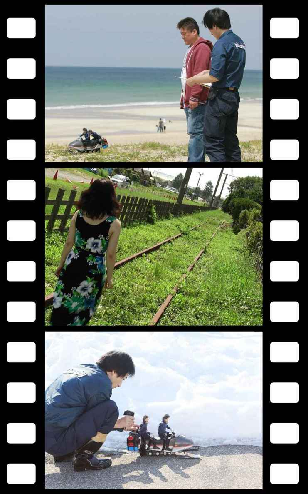
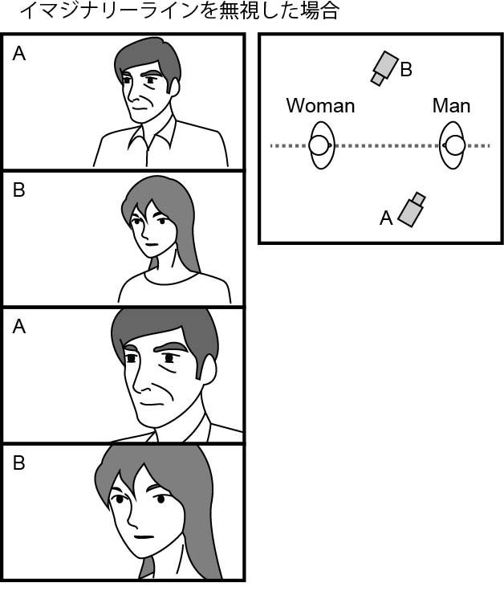
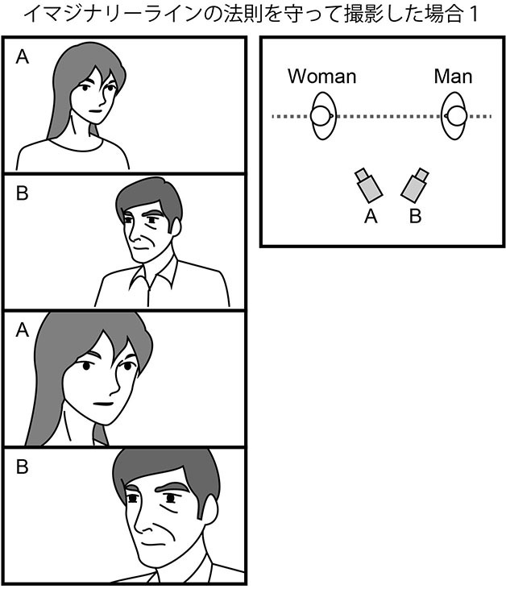
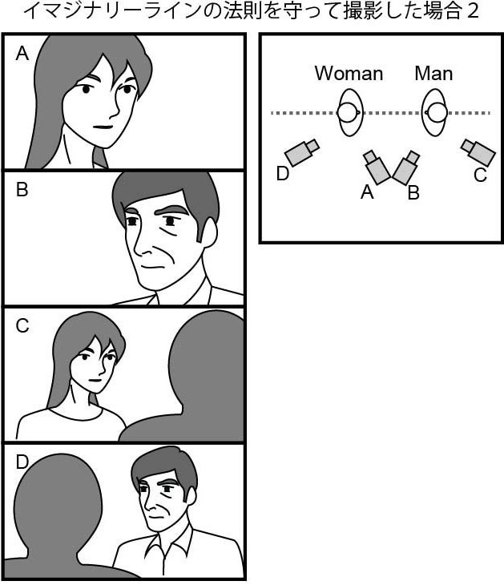
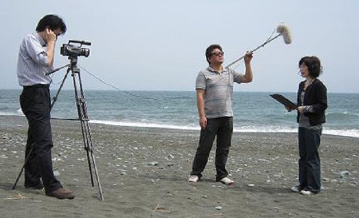
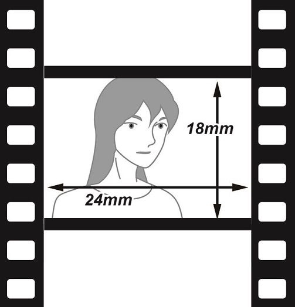
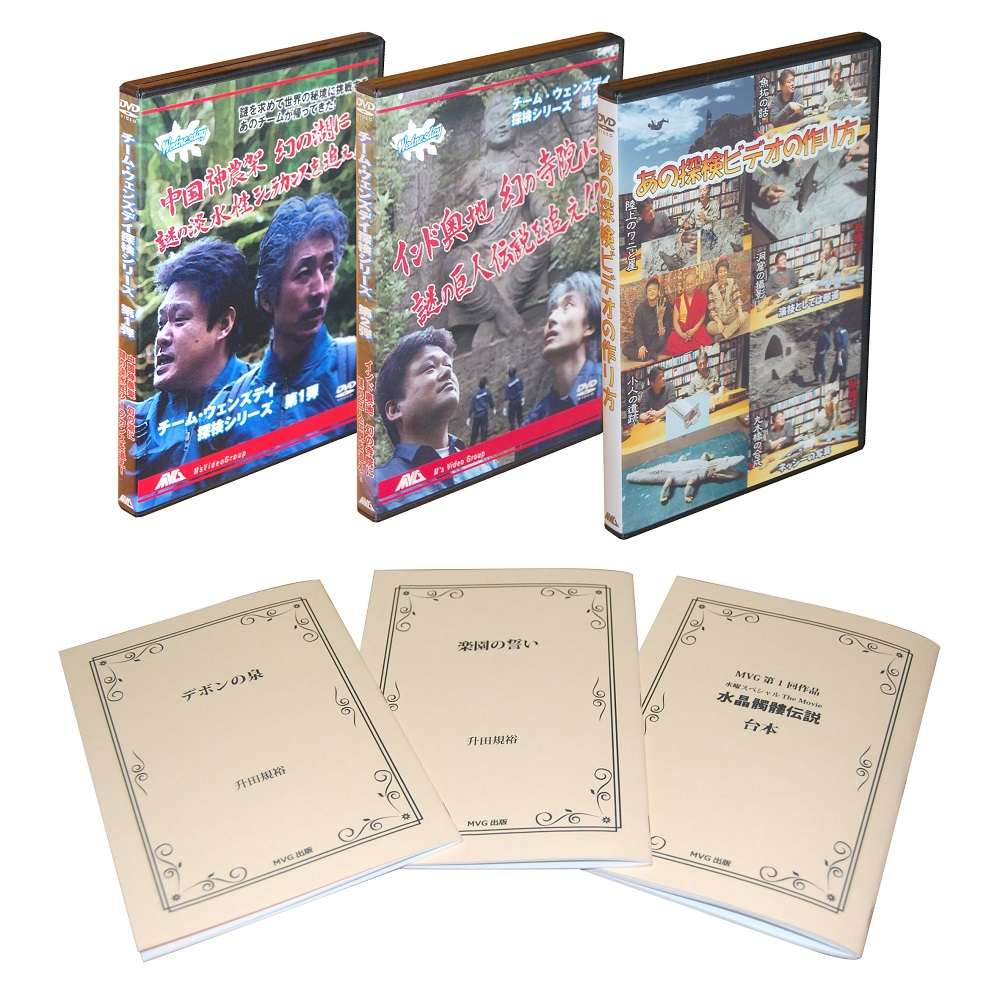

| 邪道映画術: ＤＩＹ映画制作のヒント集 | |
| 升田規裕 | |
| masuda kikaku (2016) | |
邪道映画術

はじめに
この本は、「映画の制作」という、最高に面白い「遊び」を皆さんに紹介して、私の仲間を増やすために書きました。「こんな作り方をしていては立派な映画人になれん！ケシカラン！」という感覚の方は読まないでください。
さて、「映画」の種類の中に「自主映画」または「自主制作映画」というものがあります。これは日本では「商業映画でないもの」と定義されているようです。
でも、商業映画って何でしょう？当初の目的としては、ただ個人的に楽しむために作った作品が、結果的に商業的な価値を生み出す、という事もあるかもしれません。つまり、それが商業映画かどうかは、作った時点では分からないのです。
また、自主映画を「商業映画でないもの」としてしまうと、制作したものを、合法的に販売するなどの行為が良くないことのような、後ろめたい感覚になってしまいがちです。ですから、「自主制作映画」の定義としては欧米同様、「自己資金で制作されたもの」つまり、誰に依頼されるわけでもなく、作り手が自分の意志で勝手に制作したもの、とすれば分かりやすいと思います。
少し大きな本屋に行くと、自主映画を作るための手引書のようなものが、いくつか見つかります。そういった教科書を参考に実際に作品を作ってみる事は大事です。作る事が何よりの教材だからです。
ただ、実際に映画を作ってみると、当然、教科書には書いていない問題がたくさん起きます。あるいは、「これをやってはダメ」と書かれている事の中に、実は便利な方法があったりします。
逆に教科書には、明らかに例外的な、奇をてらった演出例が説明されていたりします。例えば、「残虐なシーンにあえて明るい曲を合わせて意外な効果を狙う」などです。
確かに効果的な事かもしれませんが、「オーソドックスな手法も身に付けていないのに、例外の面白さを紹介しなくてもいいのになあ」と思ってしまいます。
基本的に映像の教科書は、プロの映画の現場を真似ています。プロになるための訓練であるなら、それは大事です。プロの心得として、「これを身に付けるべき」とか「こういう習慣は良くない」という事はたくさんあるでしょう。
しかし、映像制作は、映像のプロを目指す人だけのものではありません。最近では、専用のカメラや編集機材を使わずに、例えばスマホを使えば、「撮影」「編集」「YouTubeへのアップロード」までできてしまいます。アマチュアの映像クリエイターにとっては夢のような時代です。
そんな時代であるにもかかわらず、昔ながらのプロのやり方を真似ようとすると、デメリットも発生します。その多くは、「撮影に余分な時間がかかる」という症状をもたらします。
撮影に余計な時間がかかり、結果、埋め合わせとしていくつかのシーンを削除したり、企画自体が頓挫したりという事が、本当によくあるのです。これでは本末転倒です。
映像制作が特殊だった時代、形ある作品に仕上げようとすれば、それなりの勉強をして、スタッフ間の共通言語としての「映画術」を学ぶ必要があったとは思います。仲間意識を育てるために、暗号めいた業界用語を使う風潮も多く残っています。
しかし、日進月歩の技術革新は、「作業の手法」も大きく変えていきます。こんな時代では、過去のやり方や常識にとらわれず、「目的は何なのか」を自覚する「姿勢」が大事です。
私は、自主映画を作る「目的」は「楽しい思いをする事」に尽きると思っています。まあ、突き詰めていけば、全ての生活、仕事などは、自分が人生を楽しむためのものです。当然、趣味としての自主映画制作も「楽しむ」事が最優先です。
本来、新しい楽しみを紹介すべき入門書が、意図していないのかもしれませんが、ことさら難しさや特異性を強調して、「映画作りは限られた人だけが関われる、難しい事だ」と主張しているように見える事が残念です。
自主映画の楽しみには、「作っている最中の楽しみ」のほかに、「完成させて仲間に観せる楽しみ」もあります。
ただ「自主映画」というのは、なかなか複雑な遊びでもあります。作戦を間違えると簡単には完成せずに、未完成で終わってしまう事もよくあるのです。そこがまた、面白く、奥深いところです。
「邪道映画術」はプロの目から見れば望ましくない、邪道なやり方を中心に紹介しています。それは、「邪道な手法を使ってでも、とにかく作品を作り上げて楽しむ事」を目的にした実践参考書だからです。
基本的にどこから読んでいただいても構いません。気軽な読み物として楽しんでいただきつつ、創作のヤル気を出すきっかけになれば、こんなに嬉しい事はありません。
巻末には、2016年に完成したＢ級モンスターショートムービー「暗黒魔獣ワニガメイーター」を全編無料で観ていただけるリンクを付けておきます。まずは、これらを作り出す元になった、「邪道映画術」の話、つまり本書の本編を読んでいただけると、一層楽しめると思います。
第１章 撮影の前に用意する事
制作工程を把握しよう
あなたが仲間と「映画を撮ろう」という話になったとします。きっかけは学校の文化祭だったり、新しいカメラを買った事だったり、色々でしょう。
ともあれ、「映画を撮ろう」という発想に行き着く事は素晴らしい事です。まず、無条件で、私はあなたを応援します。間違いなく言える事は、「映画作りは楽しい」という事です。是非、作品を完成させて、仲間と楽しさを味わって欲しいものです。
さて、ここで、「映画を作る」ために、どういう作業が必要かを認識しておく事が必要です。多くの解説書では、ここで本格的に「スタッフ編成」とか、「作業フロー」を細かく見せて「映画作りって大変だぞ」とアピールしているように思います。「映画作り」には実際に、かなり煩雑で多くの工程が必要です。
でも、考えてもみてください。朝起きて、出勤や通学のために玄関を出るまでの行動だって、事細かに説明して、注意事項を挙げていったら、結構な分量の作業工程が必要な大仕事に見えるはずです。
「映画作りは一朝一夕にできるもんじゃないんだ、なめんなよ」と脅すには有効かもしれませんが、私は「楽しいエンターテイメント」としての「映画作り」を広めたいので、無駄に脅す気はありません。
実際、「慣れれば何て事はない」という作業もたくさんあります。その上で、映画作りに必要な最低限の事を考えてみましょう。
まず、あなたは「映画作り」の「構成要素」の大半は「撮影」と思っていませんか？「映画を撮る」なんていう言い方もしますから、主な作業は「撮影」だと思っている人がほとんどだと思います。
実際に、面白そうに見える作業は「撮影」とか「演出」です。「こういう場面を撮りたいから映画を作る」というのは、健全な動機です。
でも、「撮影」をするためには「台本」が必要です。「台本」は映画の設計図です。
台本無しに即興演技で面白いものが撮れそうだ、と思うのであれば、勢いで撮影する事も否定はしません。実際、成功する可能性もあるからです。
簡単な日曜大工で物を作るときに、設計図を書かずに「現物合わせ」で作っても、充分に使えるものも完成します。そういう意味で、記憶力に優れていて、臨機応変に物事に対処するのが得意な人にとっては、必ずしも細かい設計図としての台本は必要ないかもしれません。
しかし、一般的に、台本無しに撮影するのは困難です。例えて言えば、プロ棋士が将棋盤や駒を使わずに、頭の中だけでイメージした動きを伝え合う、「暗譜」に近い芸当です。
あなたがもし、自主映画の初心者であって、なおかつ「台本無し」で映画を作るとします。その場合は、少なくとも「主なやり取り」までは決めておいて、「撮り方だけ」その場で決める、という手法をとる事をお勧めします。
大雑把に分けると、映画制作は３つの工程に分けられます。
・撮影前の準備
・撮影
・編集
撮影前の準備を「プリプロダクション」、編集等の事を「ポストプロダクション」というような言い方をする事もあります。
先に書いたように、「演出」「演技」「カメラワーク」など、最も「面白そうなところ」はこの「撮影」の工程にあります。
例えば、新しいカメラを使いたくて仕方ないあなたは、早く「撮影」に入りたくてウズウズしているはずです。私もいつもそうです。
実際に、頭の中で想像していた場面をカメラの前で再現していく作業はとても面白いです。そして、その映像を編集する事で、それぞれの映像が流れていくように加工するのは、映画の醍醐味です。
それに比べ、地味で頭を使わなければいけない、面倒な作業が「撮影前の準備」です。多少の経験から助言できる事は、「撮影前の準備」をどこまで具体的に進めておくかが、作品が「上手くいく」か「失敗」するかの鍵を握ります。
ちなみにここで言う「失敗」というのは、「あまり面白くない」とか「できが残念」というような甘いレベルではありません。もっと最悪の「結局、完成しない」という状況の事です。
正直に白状すれば、最近は改善されたものの、私のこれまでの映像作品のうち、三割近くは、この最悪の状況です。特に初期に企画したものや、長編作品にもかかわらず、スケジュールの事情で短期間の準備で撮影に入ったものは完成までたどりつけませんでした。準備不足のまま撮影に突入した事で、様々な問題が累積して、制作が頓挫してしまうのです。
もっとも、この場を借りて釈明しますが、私はこれらの頓挫した企画も、完全に諦めたわけではありません。協力してくれたスタッフや出演者の労をねぎらう意味でも、経験や技術を駆使して、何とか形にしようと思ってはいます。
しかし、本来やるべき事をやっていれば、とっくに完成していたか、当時の実力や状況から、「まだ手を付けない」という正しい判断をしていたはずなのです。
「これから映画作りを楽しもう」、というあなたには、できるだけそういう余計な手間をかけさせずに、ちゃんと作品を完成させて、自主映画を純粋に楽しんでもらいたいと思っています。
具体的準備・なぜ「面白いシナリオ」が必要か
それでは「撮影前の準備」とは何でしょう。理想を言えば色々あるのですが、最低限必要なのは「面白いシナリオ」でしょう。
私は「シナリオ」さえあればいいと思っていた時期があります。しかし、重要なのは「面白いシナリオ」なんです。
なぜ「面白いシナリオ」が必要か。
どうも、創作意欲というものには波があって、いつもやる気があるわけではないんですね。プロというのは、この「やる気がないとき」でも、それはそれとして、淡々と作業を進められます。
ところが、多くのアマチュア作家は、初めに「映画を作ろう！」と盛り上がった意欲が、時間が経つとともに、徐々に減少していく傾向にあるんです。
思ったより大変だったり、思ったような映像が撮れなかったり、という事で、頭の中で想像していた理想と現実のギャップが積み重なってくるんです。だんだんと点数が下がってくる。挙句の果てに、やる気がなくなってきて、制作がストップしてしまうわけです。
もちろん、思ったより上手く行ったとか、友達と仲良くなった、というような、想定外の効果もあるんですが、おおむねテンションは下がってくる。そこで、用意していたシナリオが、はじめからそれほど面白くないものだと、「これ、完成させて面白いのかな？」という恐ろしい疑念が湧いてくるんです。
これを払拭するには２つの方法しかありません。
・そんな疑念が膨らむ前に、早く完成させてしまう
・「面白いシナリオ」を用意しておく
１つ目の方法も、他のスタッフやキャストに「不安」を与えないためには有効です。「不安」とは「本当に完成するのかな」という疑いです。「不安」になる前に完成させられるのであれば、大したものです。
しかし、実際にはなかなか簡単には完成にこぎつけられません。ある程度の時間はかかってしまうものなのです。
それに、早く完成させる事は「これ、完成させて面白いのかな？」という疑念は起こさせないかもしれませんが、根本的な解決策にはなっていませんよね？「つまらない」と気付く前に完成させてしまうだけだからです。
やはり、シナリオが、最低限「面白い」と、関わった人は完成品を想像して、楽しくなります。「早く観たい」「友達に観せたい」というテンションが維持できるのです。ですから、何とか「面白いシナリオ」を準備するのが理想です。
「いや、シナリオがどうとか言うんじゃなく、映像を作って楽しみたいんだ」という意見もあるでしょう。それにも大いに一理あります。
まずは自由に映像作品を作ってみて、そのあとさらにレベルアップを目指すときに、シナリオについて考える、という道も悪くはありません。
そういう方は、一旦、シナリオについての項目は飛ばして読んでください。きっと、後にシナリオについてもっと知りたくなるでしょうから、そのときに考えてみてもいいでしょう。
シナリオ作りの奥深さ・面白さ
「シナリオは映画の面白さの70％を占める」というような言い方をされるほどのものです。
日本映画界で「天皇」と言われ、ワンマンぶりを発揮して、自分の理想とする映画を作り続けた、黒澤明監督のような人でさえ、「面白いシナリオ」は１人で書きませんでした。「面白いシナリオ」にするためには、自分の才能だけでは足りないと考えて、複数のシナリオライターと一緒に作る必要があったのです。黒澤作品のビデオを観てみると、脚本として複数の名前が出ています。
「男はつらいよ」の山田洋次監督も同様です。自分の映画のシナリオは自分で書いていますが、大抵は、やはり別の人との「共同脚本」です。
「シナリオ作成」の奥深さは、昔から手引書が売られ続けている事からも分かります。はっきり言って簡単ではありません。しかし、あえて乱暴に「映画作りを楽しむために、手軽に面白いシナリオを書きましょう」と言います。真面目にシナリオ道を勉強している人からは「手軽に面白いものが書けたら苦労しないんだよ！」と怒られそうですが、そのスタンスで話を進めます。
映画を観たり小説を読んだりすると、実に様々な「面白さ」が存在している事が分かります。お笑い芸人をみても、「つまんね～」という事で面白味を出す芸風もありますよね。私はあまり好きではありませんが。
ですから、一概に「面白いシナリオ」と言っても色んなパターンは存在します。ここではあえて、「本格王道パターンの面白さを持つシナリオ」を「面白いシナリオ」と呼ぶ事にします。
これは、物語デザイナー・今井昭彦（ぴこ山ぴこ蔵）先生の手法が大変参考になります。目から鱗の要素も多く、効率良くエンターテイメントの面白さを形にする、「王道手法」を解説されてます。
もちろん、私に今井先生の手法解説が簡単に出来るわけではありませんが、興味のある方は
・「大どんでん返し創作法」（Kindle版）
・「面白いストーリーの作り方 スキルアップ編」（Kindle版）
・「面白いストーリーの作り方 お悩み回答編」（Kindle版）
を購入して読んでみてください。今井先生の門下生にはプロの作家さんも多く、常時、プロ作家の方から相談を受けていることからも、超実践的な手法であると分かります。
ものすごくかいつまんで、私なりのポイントをいくつか挙げると、
・見せ場になる「どんでん返し」「大逆転」を先に考える
・タイムリミットを活用するなどして、主人公を追い込む
・ドラマは全て人間ドラマであることを忘れない
というような事でしょうか。「間違いなく面白いと感じるパターンに当てはめる」という事です。
これだけでピンときて話が作れる人は、なかなか鋭い人です。大抵は「なるほどなあ」とは思っても、具体的に話を作る事は出来ないかもしれません。
ただ、特に「どんでん返し」「大逆転」の展開があると、観ている方はスカッとして「面白い」と思えるのは確かです。自分で「面白い」と思う事はもちろん、人に「面白い」と言ってもらえると、俄然、モチベーションは上がりますから大切です。
ここで「面白いシナリオ」が用意できていないと、観客からの反応は「面白かった」ではなくて「良くできているね」になります。残念ながら、私も良く言われてしまいます。
まあ、けなしているわけではありませんが、要は「つまんない」という事を柔らかく伝えているわけです。それに気付くと、何とかしても次は「面白かった」と言わせたくなるものです。
創作の大敵「眼高手低（がんこうしゅてい）」
「映画を作ろう」と思った時点で、あなたは日本国民の上位５％位に入る「創作者」マインドを持っていると思います。（数値は私の主観です）
その「創作者」が陥る特有の「罠」というか、「落とし穴」があります。
「眼高手低」という言葉をご存知でしょうか。文字を読めば何となく分かると思いますが、「出来もしないのに意識だけ高い」という事です。
私は、前述の今井昭彦先生の創作セミナーでこの言葉を知って、自分の創作が滞る原因の大半は、この「眼高手低」だ、と確信しました。
あなたも私も、日頃からプロの作った映像作品、プロの演技などを見慣れているわけです。そしてタチの悪い事に、批判精神は簡単に育ちます。
人の作ったものに「ケチを付ける」事は簡単です。誰でも、もっともらしい批判ができてしまうのです。これは、ネットにあふれる、匿名の投稿をちょっと見ただけで分かりますよね？そうすると何が起きるかというと、「うぬぼれ」が起きます。
もっとも、「うぬぼれ」や「自画自賛」は、行動するための原動力として、大いに利用価値はあります。特に、勢いに乗せてストーリーを書いているときなどは、自分が天才になったつもりで、自信満々に書き進める事が大事です。
ただ、現実的には「身の程を知っておく」という事も忘れてはいけません。くれぐれも、いきなり長編の大作映画を作ろうとしない事です。いずれ、大作映画を作る構想があったとしても、まずはそのプロトタイプとでも言うべき、ショートムービーを企画してください。撮影面、演技面、編集面などでも、非常に多くの事を学べるはずです。
完全オリジナルは求めない
「アマチュア創作者」のはまる落とし穴の一つは「オリジナリティーの追求」です。
ストーリーを作る上で、「自分だけのオリジナルの話にしたい」という欲求は、全くもって健全です。「オリジナルでなければ、自分で作る意味がない」という意見もごもっともです。
ただ、考えて欲しいのは優先順位の問題です。「オリジナルでさえあれば、つまらなくてもいいのか」という事です。
残念な現実があります。よく言われる事ですが、もう、面白い物語のパターンにオリジナルは存在しません。過去何百年も、古今東西の作家たちが「面白い物語」を追求して、大量に執筆してきたのですから、無理もない事です。
まあ、厳密には「面白い」と感じる脳みその方が変われば、新しいパターンは生まれるでしょう。また、全ての物語のパターンを分析すれば、隙間を縫って「面白いパターン」を新たに発見できるのかも知れません。
でも、あなたはそれを求めますか？私なら一生を費やして、新しいパターンを発見する暇があったら、既成のパターンと同じであっても、面白い話をたくさん作って楽しみたいと想います。
繰り返しますが、面白い物語のパターンに、もう「オリジナル」は存在しません。それでもストーリーの「オリジナル」にこだわると、「面白さ」を犠牲にする事になります。
音楽の世界でも、よく「コード進行が全く同じだ」とか「メロディーが似ている」とか言われます。パクリ疑惑も話題になります。でも、あれだけ限られた音階の中で、人が「心地良い」と感じるパターンを追求すれば、似てくるのは当然なんです。
特にアマチュアバンドなどが、独創性優先のオリジナル楽曲を演奏している事がありますが、ほとんどの場合、独創性のプラスより、不快で聞いていられないというマイナスの方が勝っています。
物語でも、考えるべきは、せいぜい「新しい組み合わせ」です。
心配しなくても大丈夫です。我々自主映画の創作者が、「ベンハー」みたいな超大作や「007」の「構造」をそのまま流用して作品を作ったって、似ても似つかないものが出来上がりますから。
これは何も、レベルが低いから、というだけではありません。自覚していようがいまいが、人にはそれぞれ作家性があって、自然とそれが出てくるものだからです。
試しに「007」の完全コピーのつもりで作品を作ってみたとします。構造は同じでも本家の「007」とは全く違う魅力が出るはずです。「あなたの資質や作家性」と「007」が「新しい組み合わせ」だからです。
つまり、私からの提案は「面白い映画の「構造」を分析して、その「構造」を元に自分のシナリオを作ってしまえ」という事です。「構造」を同じにしても、これは盗作でも何でもありません。これを盗作と言ったら世の中の全ての物語は、盗作の疑いがかけられる事になります。
心配であれば「これはリドリー・スコット監督の「エイリアン」に対するオマージュです」というように、先に宣言してしまうのも手です。さらに心配であれば、既に著作権が切れて、公共の財産として自由に利用できるようになった作品を使う方法もあります。ネットでは「青空文庫」にたくさんの作品がアップロードされているので、参考にすると良いでしょう。
当然、その場合でも、映像作りの経験が浅いうちは、短篇を使う事が大事です。制作がスムーズに進んだとしても、完成までモチベーションを維持する事は容易ではありません。完成までの時間は、なるべく短く済むに越した事はないのです。
シナリオの体裁や作成法は、多くの書籍などで詳しく解説されていますから、この本の中では書きません。ご自分の好みに合う一冊を参考に、シナリオを書いてください。
経験上、アドバイスをすると、シナリオの書き方の本は、まず、シンプルなもの「一冊」に絞った方が賢明です。それは、多くのノウハウ本がそうであるように、この「解説書」自体が非常に面白くて、ついつい、作品作りを後回しにして、次の本を買って読んでしまうからです。何を隠そう、私も、書いたシナリオの数より、買ったシナリオのノウハウ本の数の方が多い有様です。
シナリオのノウハウ本は、あくまでもご自分がシナリオを書くための道具の一つです。目的を見失って、私のように本末転倒にならないように注意しましょう。
シナリオから映像への変換作業・絵コンテのためにカット割りを考える（１）（純粋な理由から）
舞台のお芝居を作るとしたら、シナリオができればひと通りの準備完了と言えます。しかし、映像作品と舞台の大きな違いは、「映像作品はシナリオを映像に変換するための作業が必要」という事です。
「カット割り」「カット分け」と呼ばれるものです。
通常は、シナリオを読んだ監督が、「コンテ」と呼ばれるカット割りの設計図を考えます。それは絵で描かれる事もありますし（絵コンテ）、文章で書かれる事もあります（字コンテ）。
一つのシーンというのは、ワンシーン・ワンカットのような例外を除いて、いくつかのカットをつなぎ合わせて成り立っています。役者の演技、間（ま）などを重視したい場合は長回しにする事が多く、逆に、テンポを良くするために、逆に細かいカット割りにしたりします。
そもそも、演技者にとっては、せっかくの芝居を寸断されたくないものです。演技の流れを寸断してでも、「わざわざいくつかのカットに分ける」という事にはどういう意味があるのでしょう？
カット分けの目的の一つは、とにかく「観客の欲求を満たす事」です。
舞台の芝居を観ているとします。客席から舞台を観ると、大きな広い画面を観ているのと似ています。では、その舞台を画面一杯にビデオで録画すれば、客席から舞台を観ている感じになるでしょうか？
私は仕事で舞台のお芝居の撮影もしますから分かりますが、舞台を画面いっぱいに撮影しただけの映像は、実際と印象が違っている事に気付きます。もちろん、ライブと映像の根本的な違いも大きな理由ですが、ここでは触れません。とにかくビデオで撮ると退屈なのです。役者が舞台を走り回ったり、大勢の役者が動き回るシーンはさほど退屈しません。しかし、役者の大きな動きがおさまると、途端に退屈し始めます。
どうして、そういう事になるのか。
私が思うに、観客は席に座ってじっとしていますが、実は「意識のズームレンズ」を使って舞台を自由に拡大して観ているのではないでしょうか。
広い舞台の幕が開く。観客は舞台全体に視野を拡げます。役者が舞台の端の方で手紙を読んでいる。そのとき、観客は「意識のズームレンズ」を使って、役者の表情、小刻みに震える手などに注意を向けて、意識の中ではそこを「アップ」で捉えているのです。
単に客席と同じ視点から全体を捉えているビデオカメラは、機械ですから、この「意識」はありません。そのため「観客の欲求に合わせたカット割り」が必要になるのです。これは、「観客が観たいと思う部分をよく観せる」という、単純な法則に従うものです。
先程の例で言えば、
・役者の表情
・小刻みに震える手
を実際にアップの映像として撮って繋げる事で、「意識のズームレンズ」を使って舞台を観ている感覚を再現できます。
このとき、ただ、アップの映像をはさめば良いというものではありません。仮に単独では映像的に見栄えがしたとしても、ストーリーの流れ上、無関係なところを見せられたり、全体の動きが見たいのにアップだけだったりというカット構成は、見る側にストレスを与えてしまいます。
ストレスは、映像を見る上で大きなマイナスです。邪魔なストレスはできるだけ排除しましょう。
適度なカット割りは、映像を見やすくします。内容にもよりますが、１カット６秒から10秒くらいにすると、結果的に見やすい映像になります。
シナリオから映像への変換作業・絵コンテのためにカット割りを考える（２）（邪道な理由から）
先程のカット割りは、純粋に、観客視点に立って、映像作品を見やすくするため、というものです。
実は、自主映画のカット割りには、もう一つ、大きな理由があります。
先程、「そもそも、演技者にとっては、せっかくの芝居を寸断されたくないものです」と書きました。ここでいう「演技者」とは、お芝居の経験者とか、プロの役者、といったような、「演技力がある役者」という事です。
一方、自主映画の出演者は、演技の素人であることも多いのです。例えば、私の作る自主映画には、私自身も出演しています。それは、役者一人分のスケジュール確保の手間が省けたり、単純に、自分も出演して楽しみたい、という理由からです。
ところが、いかんせん素人なので、演技は充分にできません。正確には、演技以前にセリフが覚えられないのです。「自分が書いたシナリオのセリフが覚えられないって、どういう事よ？」とよく呆れられますが、言い訳をすると、私の場合、役割上、色んな事を考えながら片手間に芝居をする事になるので、そうなってしまうのです。
例えば、セリフとして３つの文章が続いていたとします。演技のできる役者であれば、そのセリフを覚えるのは簡単でしょうし、セリフを言いながらの表情の変化やお芝居で、映像的に間が持ちます。
ところが、演技ができない私が、仮に頑張ってセリフを覚えたとしても、ひと続きの映像で間を持たせることは難しいんです。大抵は何度も撮影をやり直して、「間違えずに最後までセリフを言えたからＯＫ」という、非常に低いレベルの映像になります。それはそれで楽しいのですが、出演者全員がこんな調子だと、撮影が遅々として進みません。 ここで有効になってくるのが「カット割り」なんです。
例えば、３つのセリフを言う部分を
・私の顔のアップ
・それを聞いている相手の顔
・私の顔のアップ
の３カットに分けます。
そうすると、映像的にも変化が出て間が持つ上、セリフは１つずつしか覚える必要がありません。相手の顔が映っているカットでのセリフは、私がカメラに映りませんから、セリフの紙を手に持って読んでも良い訳です。
舞台のお芝居ではありませんから、馬鹿正直に長セリフを覚えなくても良い、そういうスタンスにすると、出演者のハードルがグッと下がります。その上、出来上がった映像は、丁寧にカットを積み上げている形になっていて観やすく、演技も下手には見えにくい、という効果がありますから、邪道映画術的には非常にお勧めなのです。
そういう訳で、カット割を考えるときに、セリフが長いところについては、出演者の負担を減らす意味でも、丁寧に細かくカット割りした方がいいでしょう。
イマジナリーラインの法則
カット割りには、前述のような理由と効用があります。そして次に問題になってくるのが、それぞれを一体どんな映像にして分けるか、という事です。
コンテは、実際の映像の設計図です。設計図は具体的でないと機能しません。経験のあるカメラマンに、ある程度任せてしまう、という場合はともかく、自主映画仲間は大抵、カメラマンも素人です。
監督がカメラマン兼任ということもよくありますが、ロングとかアップといった、映像のサイズの他に、「カメラの位置はこの辺り」という事も、あらかじめ想定しておくことが有効です。
実際には、その時になってみないと撮影条件が分からないことも多いでしょう。事前にロケハンをして、綿密な計画を立てたのに、撮影当日、公園のその一角が工事中で、全く違う場所で撮影する事になった、ということも時々あります。
それでも、あらかじめ立てた計画は無駄にはなりません。現場で考え直すときにも叩き案があることで短時間で破綻なく再構築しやすくなります。
ですから、「被写体はここに立たせる」「カメラをこの辺りに置いて、顔のアップ」というように、出来上がりを想像しながら、映像を設計していくことが大切で、楽しい作業です。この作業で初めて、イメージが視覚的に形になり始めるわけです。
ここで、「美しさ重視」「画面の面白さを重視」したくなるのは我々のような、にわかクリエーターの当然の性です。現場では、どこから、どの角度で被写体を撮ったら面白いか、美しいか、とカメラを手にウロウロと動き回る事になります。
その結果、「イマジナリーラインの法則」のような、基本的なルールからはみ出た映像を撮ってしまう事になりがちなのです。
「イマジナリーライン」とは映像の教科書に大抵載っている概念です。
邪道映画術では、「必ずしも既成のルールを守らなくてもいいんじゃないか」と提案をしていますが、元々存在するルールには、根拠もあります。これは活かした方がいい、というルールはもちろん否定するものではありません。
一応、簡単にイマジナリーラインについて説明しておきます。
そもそも、このルールは何のためにあるのか。このルールを破ると、どんなデメリットがあるのか。
一言で言うと、「この法則を破って撮ると、状況が分かりにくくなる場合がある」という事。「観る側の混乱とストレスを招くので、なるべくルールは守りましょう」という事です。
先に言うと、仮にルールに違反しても、作品上ではマイナスにならない事もあります。そういう意味で絶対的ルールという訳ではありません。
登場人物２人が話をしている場面を真上から観ていると想像してください。そしてこの２人を結ぶ直線を考えます。その直線の両端をどこまでも延ばします。これが「イマジナリーライン」です。
「イマジナリーラインの法則を守る」とは、簡単に言うと、カット割りする時に、カメラの位置を、イマジナリーラインのどちらか一方にまとめる事です。
連続する映像は、カメラがイマジナリーラインを越えないようにします。そうする事で、映像を観ている人のストレスを少なくして、無用な混乱を避けられます。
具体例が無いと分かりにくいと思いますので、絵コンテをお見せします。

この男女が会話している映像は、イマジナリーラインの法則を守らずに撮影した例です。各カットの左上にあるA、Bは、カメラの位置を示します。右側の図は、被写体とカメラの位置を示しています。破線がイマジナリーラインです。カメラが、イマジナリーラインを越えて配置されているのが分かるでしょうか。
そうやって撮影された一連の映像では、２人が同じ方向を見ながら話しているように見えませんか？上からの図を見れば分かるように、実は向かい合っているのです。
知らない人にとっては、２人の位置関係が解りにくい映像の組み合わせになっていても、撮影現場にいた人は頭の中で補完してしまい、解りにくさに気付かないものなのです。これは、知っている歌の歌詞は聞き取れるのに、知らない歌の歌詞は全然聞き取れない、というのに似ています。
現場の状況を知らない観客は、並んだ映像の情報を繋ぎ合わせて、頭の中で「その場」を把握しようとします。もちろん、背景から判断できたり、観客がたまたま初めから「２人は向き合っている」と思い込んでいれば、ストレスは感じないでしょう。
あるいは先に全体の位置関係を観せておけば、一応、理解は出来ます。でもその場合でも、「途中、２人は同じ方向を向いているように見えるけれども、実は向かい合っている」という状況を、無意識のうちに頭の中で処理する必要が生じています。その結果、「理由は分からないけど、どうもしっくり来ない」という印象だけ与えます。
この位置関係を、全く気にしない人も中にはいるのですが、出来る事なら、無用な混乱・負担を与える事は避けたほうが無難でしょう。

法則通りに撮影すれば、状況説明の全体映像が無かったとしても、このように位置関係、向きが分かりやすくなります。カメラが、イマジナリーラインを越えずに配置されているのが分かるでしょうか。
次の映像も、法則通りに撮影した例です。ドラマなどでよく見る組み合わせだと思います。

法則通りに撮影すると、このシーンの場合、常に男が画面の右側、女が左側に存在している印象を固定出来るのです。大抵の映画・ドラマはこういう画面構成になっているはずです。今度、映画やドラマを観たときに、チェックしてみてください。
カカシカメラの勧め
イマジナリーラインの法則を絶対に間違えない方法があります。
「カカシカメラ」と呼ばれる撮り方です。「カカシカメラ」とは、手抜きの撮影方法であり、カメラマンに対する「蔑称」です。
どういう撮り方かというと、カメラをある一点に据えて、その位置から動かずにズームやパンニングを使って、手を抜いて撮影する方法です。足を固定したカカシに例えているのでしょう。カメラマンたるもの、常に足を使って動き、しゃがんだり、高いところから見下ろしたりと、常にベストポジションを探しながら撮影しなければならない、という「立派な」気持ちの表れです。
大変皮肉な事に、この「立派な撮影」によって、うっかりイマジナリーラインのミスを犯してしまうのです。
確かにカカシカメラでは、カットによっては、ベストの映像にはならないかも知れません。しかし、初めの位置さえ良く考えて決めれば、ベターな映像を素早く撮影でき、しかも「イマジナリーライン」に関して言えば、失敗する危険はゼロなのです。
私が良くやる舞台の撮影は、典型的なカカシカメラです。
元々、お芝居は、舞台の中にカメラを置けないので、イマジナリーラインの法則を破る心配は無いのですが、一人が手の届く範囲に置いた２台のカメラを使って撮影する、という極めて制約の多い撮影です。そのため、全てのカットをベストな角度から撮れるとは限らないのですが、ビデオ撮影・編集依頼のほとんどがリピーターであることから、最低限の観やすさと満足は実現できていると思います。
映画の現場で、この撮影法を採ると、プロのカメラマンや少し知識のある人からはバカにされるでしょう。「こんな事じゃ良いプロカメラマンにはなれないよ」と言われるかも知れません。
でも少なくとも私は、良いプロカメラマンになる気はありません。別にプロに褒められなくても構いません。作品を観る一般の人にとってストレスが少ない映像を、手際よく撮影できる事の方が、遥かに重要です。特に撮影時間に余裕が無い場合などは、意識してカカシカメラのセッティングをします。
私は、アマチュア作家の人には、あえて「カカシカメラ」をお勧めします。
撮影パターン日米英欧
商業映画の撮影方式には、いくつかのパターンがあります。日本映画で多く採られている方法は、１台のカメラで１カットずつ撮影していく方法です。
これは、私たち、自主映画作家も日常的に行なっている撮り方です。監督の作家性が最重要視される、多くのヨーロッパ映画も同様に撮られているそうです。
確かに、１カットごとに監督が判断を下していくため、全ての映像に作家性が強く表れるこの撮り方は、ヨーロッパ映画の嗜好に合っているのかもしれません。
特にヨーロッパ映画は、緻密で美しい構図のカットを積み重ねて、映像を紡ぐ印象があります。これは、アメリカのハリウッド映画でも、「マトリックス」や「トータル・リコール」、「エイリアン4」など、ヨーロッパ系の人が監督した作品を観ると、アクションシーンでも、一つ一つの映像の構図が単独でもポスターになると思えるほど綺麗で、カットの積み重ねが丁寧だと感じます。
編集での勢いを優先するような、他のアメリカ系映画との違いがよく分かります。勢いを優先する映像は、一つ一つを単独で見ると、必ずしも映像として綺麗でなかったり、何が映っているのかさえ分からない事も良くあります。
ただし、この「１カットずつ撮影していく方法」にも弱点があります。
映画は、別々に撮影した映像を編集で繋げる事によって、連続して続いている場面であるように錯覚させるのが基本です。しかし、１カットずつ丁寧に撮影していくこの方法だと、物理的に撮影時間がかかるので、連続性がやや損なわれがちです。
ほんの15秒、３カットの場面を何時間もかけて撮影するのですから、それを15秒の出来事と錯覚させるのも一苦労です。太陽の位置は変わってしまいますから、昼間の野外撮影には不利です。また、髪型の乱れを長時間同じに保持するような手間も掛かります。
一方で、ハリウッド映画などでは、マルチカメラ撮影が一般的です。３方向からの映像を１台のカメラで撮影するためには、少なくとも３回の撮影をする必要がありますが、カメラを３台にして同時にマルチカメラ撮影をすれば、撮影回数は１回で済む、という発想です。
これは、繋がり、という点では圧倒的に効果があります。たとえ、それぞれのカメラでかなり雑な映像を撮影していたとしても、編集によって躍動感のある映像になります。「ごまかしの効く映像」という事です。
もちろん、監督は全ての映像を同時にチェックできません、その場の演技がＯＫかどうかしか判断できません。監督が編集作業に関与しない事が一般的な、ハリウッド映画特有の手法と言えそうです。
私たちがこのマルチカメラの手法を上手く活用できる場面は、ほとんどありません。大抵の場合はスタッフも不足していますから、全面的に各カメラの映像に責任を持ってもらえるカメラマンを複数確保する事が困難だからです。撮影した素材の管理も、飛躍的に面倒になります。
私も、舞台の撮影以外で、この手法を使った事はありません。準備と確認に数倍の時間がかかってしまうからです。
私たちが自主映画を撮影するときに参考にすべきは、イギリス映画方式だと思います。
これは、まず「マスターショット」と言われる、基準になる、やや引き気味のカメラで、そのシーンの最初から最後まで通して撮影して、その後で、必要なクローズアップなどの映像を撮り足す方式です。
マスターショットを撮影する事で、最悪、アップの映像が良くなくても、マスターショットの映像を使えばいい、というバックアップにもなりますし、出演者やスタッフが、最初にそのシーンの全体の流れを確認できるという、大きな利点もあります。１カットずつ撮影する方式に比べて、演技の流れも格段にスムーズになるでしょう。
撮影全体もスムーズに進みますから、「ひと続きの芝居が出来る」など、条件が整えば、このイギリス方式をお勧めします。
失敗しない構図の組み合わせ
シナリオを元に、あらかじめ絵コンテを用意する事は、撮影の効率化にとても有効です。必要な映像を最短時間で撮りやすくなるからです。
ところが、良く考えて絵コンテを描いたつもりでも、その通り撮影したものを編集しようとした時に、うまくつながらない場合が往々にしてあります。何らかの事情で、スムーズにつながっているように見えないのです。
２つの映像が、時間経過を伴っている前提の場合は、ほとんど意識しなくても大丈夫です。
例えば、「公園の中を歩いている」「商店街を歩いている」という、同じようなロングの映像を繋げても、暗黙のうちに、途中の移動は省略された、と理解できるのです。ですから、公園では着ていた上着を、商店街では手に持っていても何も不自然さは感じません。
一方で、公園のシーンで、歩いているカットをロングで正面から撮るとします。続けて、の横からのロングのカットを撮るとします。すると、胸のボタン１つが開いてるのと止めている、という違いでもすぐに気になります。
ちょうど、２枚のそっくりな絵の中の間違い探しを思い浮かべるとわかります。２枚の絵を重ねあわせてパラパラと繰り返しめくって比べると、容易に違う部分が見つかりますよね？「ロング気味の映像を連続してつなぐ」という事は、例え、大きく違う角度から撮影したとしても、これに似た危険があるのです。
有効な解決策は、ロングの次にロングを繋がない事です。ロングの次はアップ、もしくは一旦、別の被写体を繋ぐ事を基本にしましょう。
例えば、ロングでスニーカーを履いているのが見えるとする。次に顔のアップ。再びロングになったときにサンダルに変わっていたとしても、それぞれが自然であれば気付きにくいものです。あえてやる必要はありませんが。
映像にリズムをつける意味でも、サイズの違う映像を組み合わせましょう。
注意すべきは、アップばかりを連続で繋ぐと、その場の状況がわかりにくいのと、アップそのものに「緊張を強いる作用」があるので、観る側にストレスが掛かる、という事です。仮に役者が美人女優だったとしてもです。効果的にロングとアップを組み合わせる事が必要です。
もう一つの注意は、サイズが違っていても、実際の撮影の時間を開けてしまった場合、アラが目立つという事です。
バストショットでは前髪が顔にかかっていたのに、次のアップでは前髪が顔にかかっていないという場合など、うまく繋がって見えません。無風状態と風が吹いている状態などが混在してしまうと、繋げるのは非常に困難です。前述の「カカシカメラ」を上手く使ったりして、連続したカットの撮影を短時間で行えば、それほどおかしくはならないでしょう。
このようなことを考えながら、「シナリオ」に書かれたシーンを、一つ一つ「絵コンテ」に変換して「映像の設計図」を作っていくのです。
まだ、撮影が始まっていなくても、絵コンテが出来ていると、自分も周りの人も完成イメージの妄想が膨らみます。テンションが上がってきて楽しいものです。
撮影計画の立て方
さて、事前準備のうち、一番大事なシナリオの準備は出来たでしょうか？ラフなコンテも一応出来ている状態が望ましいのですが、細かな体裁はとりあえずいいんです。自分の確認や仲間に説明する設計図として使えればＯＫです。
シナリオに沿って、具体的な撮影場所や配役も決まっていくでしょう。次は、ざっくりとでいいので、撮影計画を立てます。
撮影計画は、まず、シナリオ側から考えて立てて、次に撮影場所から考えて、より効率的に組み立て直すと良いでしょう。
例えば以下のようなシナリオがあるとします。
・シーン１（男の部屋）
・シーン２（公園）
・シーン３（男の部屋）
・シーン４（女の部屋の玄関）
・シーン５（公園）
・シーン６（車の中）
これを、初めから順番に撮っていく方法もあります。順序通り撮影することを「順撮り」といいます。
順撮りのメリットは、「今、どの場面を撮っているのか」がメンバーに分かりやすいという点です。「今、どれくらい進んでいるのか」という進捗具合も分かりやすくなります。
演じる側も、既に撮影した事は「知っている事」として次の芝居に入っていいので、やりやすいのです。
特に問題なければ初めから順番に撮る方が良い事は多いでしょう。しかし、この例のように、シーンによって撮影場所が異なる場合、無視できないのが「移動時間」です。
例えばスタッフ、出演者が部屋に集まって「シーン１」を撮るとします。そして、全員、車で公園に移動して「シーン２」を撮影。その後、また全員で部屋に戻って「シーン３」を撮影するのは、いかにも移動時間が無駄だという事が分かりますよね。
また、「シーン４」は設定上、女の部屋だけども、もし玄関だけしか写らないのであれば、男の部屋の玄関で撮影出来るのでは？と考えてください。小道具などの工夫で、違う部屋に見せるのも楽しいものです。
もろもろ考えてみると、まず部屋の中で
・シーン１（男の部屋）
・シーン３（男の部屋）
・シーン４（女の部屋の玄関）
がまとめて撮れる事が分かりました。
撮影する分量（カット数）も結構あるので、これだけで１日使ってしまいそうです。
また、
・シーン２（公園）
・シーン５（公園）
・シーン６（車の中）
もまとめて撮ったほうが効率が良さそうです。これも１回分の撮影とします。スタッフ、キャストは日曜日しか活動できないとすれば、少なくとも２回分の日曜日が撮影に必要です。
このように、撮影の都合に合わせて、シーンやカットの順番を変更して撮影する事を「中抜き」と呼んだりします。撮影としてはこれが一般的です。
さて、室内中心の撮影と、公園中心の撮影の２回の撮影が必要なことは分かりましたが、この撮影を、どちらから行うかを考える時点で経験やセンスが生きてきます。あなたならどちらから撮影する計画を立てますか？ちょっと考えてみてください。
もし、公園が中心の撮影を初回に設定したとします。その日、雨が降ったらいきなり撮影は中止です。事前に、みんなでわざわざ都合をつけたスケジュールが無駄になってしまいます。早々に予備日消化が決定します。
では、部屋のシーンを初回に設定するべきでしょうか？
その日、天気が良くても悪くても、室内撮影は予定通り出来るでしょう。しかし、その日は天気が良くて、２回目の撮影予定日に雨が降る事も考えられますよね。
結果として、せっかく晴れた日に室内撮影をしてしまった場合、本来、２回で終わる可能性があった撮影を２回の集合では終わらせられないのです。
あくまでも確率の話ですが、理想の撮影計画は、初回の撮影は両方の準備をしておく事です。もし天気がよければ公園のシーン、雨なら室内シーンを撮影する、と決めておきます。そして２回目は１回目に撮らなかったシーンの撮影予定となります。
この場合は、「１回目、２回目とも運悪く雨」でない限り、２回で撮影が終わりますよね。こういうスケジューリングの工夫の積み重ねが、完成時期に大きく関わってきますから重要です。
撮影は天候によって中止になる事もあれば、誰かの都合が悪くなる事もあります。どうしても、予定より長引きがちですが、可能な限り、短期間で終わらせる目標を立てたいものです。そうやって、仮でもいいので「撮影開始日（クランクイン）」と「撮影終了（クランクアップ）」、「作品完成」のスケジュールを決めてしまいましょう。
またまた、私の経験から来る、落とし穴の紹介です。自分の失敗をあんまり披露するのも気がひけますが、参考にしてください。
どうしても友人同士の撮影だと、スケジュールがナアナアになってしまって、終わりをはっきりしない傾向にあります。それは、「撮影の為の集まり自体が楽しい事」が最大の原因でしょう。その状態が続いても困らないわけです。結果、いつ終わるとも予定されていない作品を、ダラダラと制作し続ける事になってしまうのです。
しかし、やっぱり、これではいけません。制作過程が楽しいとは言っても、作品は「完成させて仲間と鑑賞する事」が大きな楽しみです。特に、「１日だけ撮影に参加した人」などにとっては、完成品の鑑賞会まで楽しむ機会がないのです。早く楽しませてあげなくてはいけません。
また、その完成作品の鑑賞会がある事で、次の作品の意欲にも繋がります。ですから、ここは、趣味とはいっても、仕事のように「完成までの」スケジュールを考えましょう。
予想より手間取ったら、その都度、予定を延期しても問題にはならないでしょう。趣味ですから。これは、誰に頼まれるわけでもなく作る、「自主制作」の強みです。ただ、常に「完成はいつ頃」と言えるようにしましょう。
「撮影終了」ではありません。「完成」です。
とりあえず、「撮影」のあとの、「編集」くらいは想定してください。編集に必要な期間は、分量や経験によって時間は変わるので、ここではどのくらいの期間とは想定できません。とりあえず一ヶ月くらいを考えてはどうでしょうか。
これで、出来上がったシナリオを使って、ひと通り絵コンテを準備したり、映画を完成させる予定が立てられました。撮影前の準備は一応、完了としましょう。
お待たせしました。ようやく、本格的に「邪道映画術」の実践に入っていきましょう。
第２章 撮影現場での工夫
早撮りの勧め
「面白いシナリオが必要」というところでも書きましたが、映画は、「なるべく早い完成」を目指したほうがいいと思います。それは、仕事と違って、趣味の映画作りでは、制作者本人のやる気によって、制作ペースそのものが上がったり下がったりするからです。
これが、調子が悪くても常に一定の生産性を保てるプロとの大きな差です。
そして、モチベーションが一番高いのは、作り始めの時期であって、モチベーションは時間とともに下がる傾向にあります。一定のレベル以下にモチベーションが下がると、制作がストップする、という最悪の事態になりますから、その前にどんどん進める、というのが実践的な解決策の一つなのです。
私も含めて多くの人は、「時間をかけたほうが良いものが出来る筈」という「幻想」を抱いています。しかし、基本的に「必要以上の時間をかけてもメリットは無い」と認識すべきです。残酷ですが、時間をかけて努力したからと言って、その時間に比例した成果・評価が得られるものではないのです。
せっかく準備してきた企画なので、撮影をじっくり楽しみたい、という気持ちも湧くかもしれません。でも、どうせ多かれ少なかれ、時間が掛かる遊びです。仮に、運よくあっさり終わったとしたら、次の作品に取り掛かればいいんです。
１回ごとの撮影以外にも時間の掛かる事は数多く控えています。せめて撮影段階では「出来るところは、とにかく早く撮る」というくらいのつもりでちょうどいいのです。
「良い作品にしたいなら、じっくり撮るべきだ」という意見をよく聞きます。でも、あえて邪道映画術では「良い作品にしたいなら、とにかく早く撮るべきだ」という立場をとります。撮影時間の短縮には多くの目に見える効果・メリットがあるからです。
完成した品質にも関わる最も大きなメリットは、早撮りによって「映像のつながりが自然になる」という事です。
私たちは、日頃からプロの作った映像を見慣れているので、「映像の自然なつながり」なんて当たり前だと思っています。でも、相当に気をつけないと、自然につながらない場面がちょくちょく出てきます。
映画では本来繋がっているべきシーンも分割して撮影します。ここが「舞台のお芝居」と大きく違う点の一つです。
例えば、
・役者が向こうに歩いていく遠景
・立ち止まって振り向くアップ
という２カットの流れがあったとします。
実際の撮影では、恐らく最初に遠景のカットの撮影をします。カメラの位置を決め、役者の立ち位置を確認して、テストを経て本番の撮影です。
ＯＫが出ると、次はアップの撮影準備です。大抵の場合、カメラの位置や角度を変えて背景が変わるような工夫もしたりします。構図のチェックをしたり、ピントを改めて合わせたりの準備で、まあ、短くても10分くらいは軽く掛かるわけです。そして、最初のカットの続きとして、「立ち止まって振り向く」という芝居を撮影するのです。
この時、待ち時間が長いと、「歩く速度はどのくらいだっけ？」とか、直後なら覚えているような事も曖昧になってきます。
実際に、映像を繋げてみると、「不自然さ」というものはすぐに目に付きます。出演者が素人である場合は、「暑いなあ」と思ったら無造作にボタンを外したり、腕まくりをしてしまったりする、初歩的な失敗が有り得ます。また、準備やテストに手間取って、陽がかげってきてしまったり、さっきは無風だったのに、ちょっと風が出てきた、なんて状況になると、不自然さは、段々とごまかしきれないレベルになってきます。
商業映画では、「スクリプター」と呼ばれる記録担当のスタッフがいます。監督が「立ち止まったとき、どっちの足が前だっけ？」と聞けば、事もなげに「右です」と答えてくれます。
自主映画の制作入門書でも、必要なスタッフとして「スクリプター」と書かれていたりしますが、はっきり言ってそれは、非現実的で贅沢な布陣です。
少なくとも私は、趣味の自主映画の撮影のときに、「スクリプター」としてプロのスタッフは呼べません。かといって素人にスクリプターの役割を割り振っても、恐らく全く役に立たないでしょう。特殊な注意力が必要な上、撮影や編集の事を知り尽くしていないと機能しない、求められるレベルが非常に高いスタッフだからです。
現実的には、「役者の動きは役者本人が出来るだけ意識しておく」、「カメラマンを含め、周りのスタッフも出来る限り注意する」というくらいで精一杯でしょう。その範囲でカバーするためにも、「待ち時間を極力短くする事」が重要です。
映画の醍醐味は、カメラ１台で１カット１カット「別々」に撮影した映像を、あたかも「連続」しているように自然に繋いで、その架空の時間を再現する事です。逆に言うと、１カット１カット別々に撮影する、という、実際には極めて不自然な撮影をした映像ですから、気を抜くと簡単に不自然になってしまうのです。
１カットずつ丹念に時間をかけて、こだわって撮影しても、多くの場合、満足するのは作り手だけです。時間をかけたせいで生じた、「つながりの不自然さ」は、作品にとって間違いなくマイナスです。
ですからカメラマンは、できるだけ素早く移動して、準備して、役者を待たせずに撮影する事を心掛けてください。そうすると、映像のつながりも自然になる、というメリットが出てくるのです。そのためには、監督がカメラの移動を含めた、「撮影計画」をきちんと認識して、カメラマンや出演者に伝えられるようにしておくべきです。
お勧めできないマルチカメラ
「映画はテレビと違って１カットずつ丁寧に撮るからいい」という話を良く聞きます。映画とテレビの両方に出演経験がある俳優が、映画の宣伝のときに良くコメントしてます。
テレビは、スタジオの中のシーンの場合、大抵、複数のカメラを同時に回しておいて１つのシーンを一気に撮ります。テレビでは、撮影と同時に、別室でディレクターの指示によって、カット割りした映像にしています。そのために生まれる臨場感は魅力です。
それに対して、多くの伝統的な日本映画では、現場にカメラは１台だけあって、１カット１カット、テストをしながら撮っていきます。俳優としては、せわしなく進めるドラマの現場より、芝居を丁寧に撮ってくれるこのやり方が心地良いのだと思います。
予算の大きな映画では、テレビと同じように、同時に何台ものカメラを回して、いっぺんに撮るという方法もありますが、例外的なやり方です。
何台ものカメラを同時に回して撮影する方法を、「マルチカメラ」と言います。これのメリットは、本来続けて演じるべき俳優の演技を、中断させず、しかも編集バリエーションの選択肢が多い映像が確保できる点です。演技の流れ重視とともに、編集重視の手法とも言えます。
また、マルチカメラを採用すると、本番自体は短い時間で完了します。ハリウッド映画などの場合、「法外なギャラの出演者の拘束時間を１分でも短くしたい」というのが動機だったりします。
ただ、自主映画でマルチカメラはお勧めできません。これを実践しようとすると、デメリットが多すぎます。
単純にカメラやカメラマン、その他のスタッフが多く必要です。また、種類の違うカメラを混在させて撮影すると、色の特性が微妙に異なっているので、思いのほか、編集で不自然になり、その調整に苦しむ事になったりします。
もちろん、準備にも数倍の手間がかかります。監督のチェックも目が行き届きにくくなるので、それぞれのカメラマンの技量が充分に高くて、信用できる事などが前提条件となります。
我々のようなアマチュアが自主映画を作る時は、マルチカメラはハードルが高すぎるのです。確かに、本番中の時間は短くなりますが、その準備と、撮影前後の確認に必要な時間を考えると、時間短縮にも全く役立ちません。
もっとも、例外的に有効なカットも有り得ます。例えば「乾いた服を着たまま、ザブザブと海に入っていく」などという、やり直しがきかない場面は、例外として複数のカメラでがんばって一発撮りしたほうがいいかもしれません。
ピントより大事なもの
撮影をきっちりとやる姿勢はとても大事です。構図を決め、ピントと露出を合わせ、レフ板などで光の具合を調節し、役者の動きを何度もチェックしてから本番、という工程を踏む事で、撮影技術も正しく上がっていきます。
ただし、ここでも忘れてならないのは「時間との兼ね合い」です。
例えば、野外の撮影で、夕日が差している中、「とてもいい雰囲気の映像が撮れそうだ」という瞬間があります。
野外の撮影をしてみると分かりますが、特に夕方は刻々と光の状態が変化します。「ああ、きれいだなあ。この空を背景にして、この場面を撮ろう」と思ったら、時間との戦いです。大抵の場合、秒刻みでどんどん状態は悪化します。
最善の構図を検討して、役者の動きをチェックするためにリハーサルをして、などという事をしているうちに、夕日は沈み、結果、何の変哲も無い薄暗いシーンを撮影する事になります。地球は回っているのです。
特に、映像にある程度、造詣が深い人をカメラマンにする場合は注意が必要です。こだわりを持って「正しい映像」が撮影できたとしても、その準備に時間がかかってしまう事で、映像としては凡庸になりがちです。満足するのは、こだわりを通したカメラマンただ１人という事になります。
あるいは、目の前に偶然、野生動物が出てきた、という時に、モタモタとベストの設定をしようとしていては、すぐに被写体はいなくなってしまいます。何も撮影できなければ０点です。
例えホワイトバランスがデタラメで、カメラが傾いていたとしても、その被写体を撮影できていれば、少なくとも０点では無い訳です。工夫次第では劇中に有効に使える映像になるかもしれないのです。
綺麗な夕陽のシーンのように、時間との戦いのときは、極端に言ってしまえば、構図が多少甘くても、ピントが一瞬ボケたとしても、セリフをちょっとかんだとしても、時間を最優先に撮ってしまう「割り切り」が大切です。「画面の魅力」、「シーンの魅力」の方が、「正しい理屈」や「作り手のこだわり手順」より重要だからです。
高校の卒業アルバムで、クラスごとのスナップを生徒自身が編集するページがありました。私のクラスには、たまたま写真部の部員がいて、ページを任せたので、とても安定したページになりました。写真としてもしっかり撮れているものを使っていて、「正しい」ページではあります。
しかし、一方で、ブレやピンボケお構い無しに、楽しい場面の写真を詰め込むクラスもあります。写真の構図もデタラメどころか、写真をハサミで切り抜いて使ってしまう乱暴さです。
ところが、明らかに、デタラメのページの方が魅力的なのです。理屈では下でも、魅力では上です。「楽しいクラスだったんだろうなあ」という事が伝わります。
撮影に関しては、普段からカメラを使い慣れておいて、出来るだけ素早く撮影できる準備をしておいてください。そして、いざという時は、自分の中のＯＫラインを「最低限レベル」のモードに切り替えて、最速で撮影できるようにしておくと理想的です。
色を合わせる 色を消す
写真と映画の撮影は、共通するところも多いので、写真の撮り方は大いに参考になります。但し、大きく違うところもあります。それは、「映像の連続性」という点です。
写真集にもストーリー性を盛り込んで、物語作品としているものもありますから、写真にもある程度の連続性はあります。しかし、映像ではそのシビアさが違うのです。
映像面で最も大きな影響が出てしまう要素は、ホワイトバランスの不一致です。
人間の目とカメラというのは良く似ています。しかし、人間の目で簡単に出来る事を、カメラが簡単に処理するのはなかなか難しいのです。
今でこそ、カメラのピントは自動調整（オートフォーカス）が当たり前になっていますが、絞りやホワイトバランスについては、まだまだカメラは人間の目に追いついていない印象です。
ここでは特にホワイトバランスの話をします。簡単に言うと、「ホワイトバランスを合わせる」というのは、「白を白と正しく認識する事」です。
人が白い画用紙を見るとき、その画用紙が真っ白いものだと知っています。仮に赤い夕日の下で画用紙を見た時も、夕日のせいで紙がオレンジ色に見えていても、それを「白」と認識しているのです。
一方、白い紙を撮影するとき、カメラはその紙の色を知りません。薄いオレンジ色の紙なのか、夕日に照らされている白い紙なのかの区別が付かないのです。
問題の多くは野外撮影のときに起きます。光には光量の他に色温度というものがあります。要は、午前中の光の色と、午後の光の色が違うのです。
イメージとしては、朝の青白い光が、午後になるにつれて段々と黄色くなってきて、夕方は赤味が強くなります。実際にはほんの少しずつ変化しているので、今この瞬間と５分後の色はほとんど同じです。
ところが、思い出してください。映画はたった１分、10カットのシーンの撮影に何時間もかかるものです。出来上がった映像を観ると、経過時間は１分の設定ながら、午前中、昼、午後に撮影した、色の違う映像を組み合わせてしまう事になるのです。
映画の醍醐味は、実際には数時間かけた映像でも、１分間の出来事であるかのように見せる「錯覚」です。ところが色がバラバラの映像を観ると、特別な知識が無くても、「何か不自然。繋がってない」という事は分かってしまうのです。これを防ぐために「ホワイトバランスの調整」の必要があります。
「自分のカメラにはホワイトバランスをオートで調整する機能があるから大丈夫」と思ったら大間違いです。ホワイトバランスは、あくまでも「白を白と認識して設定」しなければ調整できません。オート機能は、カメラに映る情報を総合的に分析して、中間的なバランスを取っているだけです。
画面の中に満遍なく全ての色が入っていれば、かなり精度は上がりますが、例えば赤い服を着た人が多かったりすれば、カメラとしては「この映像は赤味が強すぎる。光の赤味が強いに違いない」と判断して赤味を抑えた調整をしてしまいます。
撮影の最中、赤い服の人が画面から去って、青い服の人が入ってくると、同様に「光が青みがかっている」と判断して、慌てて青みを抑えた映像に調整します。ワンカットの中で、そのようにコロコロと色味が変化している映像を時々見かけます。
これを完全に防ぐにはどうすればいいか。まず、撮影するときは、ホワイトバランスをオートにしない事です。外光が入らない室内の撮影では、「白熱球モード」や「蛍光灯モード」などに固定してしまえば、最低限、被写体の色によってホワイトバランスがバラバラになる、という現象は防げます。
問題は太陽光を使った野外の撮影です。これは、出来るかぎり頻繁に、ホワイトバランスをマニュアルで調整するか、光が変化する前にスピーディーに撮り切ってしまう事でしか防げません。
ホワイトバランスのマニュアル調整は、カメラの前に画用紙などの真っ白な紙をかざして、それを画面いっぱいに映して行います。そして、カメラに「これが正しい白ですよ」と認識させるわけです。（調整方法はそれぞれのカメラの取扱説明書を見てください）
そうするとカメラでは、光のせいで水色やオレンジがかって見えていたとしても、その画用紙を「白」として調整してその基準で映像を撮影する設定にします。この作業のおかげで、午前中に撮影した主人公の映像に、午後撮影したヒロインの映像を繋げても、色の面では無駄な時間経過を感じさせず、連続した映像として錯覚させる事に成功するわけです。
ちなみに、その調整をすると、白いものは白く写ります。つまり、夕陽の場面も赤味が全く無い状態になりますから、夕陽のシーンなどでは、あらかじめ特殊な調整をするか、編集時に一定の色を付ける必要があります。
ホワイトバランス合わせは、本格的な映画制作では必要不可欠な作業です。私は、これが面倒な事もあって、出来る限り一気に早撮りすることを心掛けています。
このホワイトバランス合わせのメリットは、たとえ、天候が若干異なる別の日に追加撮影しても、なんとか編集で繋げられる、という事です。
しかし、最大のデメリットは「手間が掛かる」という事です。プロのカメラマンは自主的に合間合間に設定してくれていたりしますが、アマチュアカメラマンはまず忘れます。監督とカメラマンが兼任だったりすると撮影時間を削って設定しなければなりません。そして大抵、肝心な時に設定を忘れます。
最も光の変化が激しくなって、頻繁な調整が必要になってくる、午後の遅い時間というのは、撮影自体も切羽詰ってくるわけです。ついつい忘れることは責められません。
ホワイトバランスが合っていない映像を編集する時によくやる対処法として、編集時に色を合わせる、というものがあります。
フィルムの編集と違って、パソコンを使ったノンリニア編集は、かなりの調整ができます。できはしますが、色の調整はその中でも相当面倒な部類です。手間が掛かる上に、なかなか自然な状態に修正が出来ないので、この作業は最低限に抑える事を心掛けたほうがいいと思います。
もっと、根本的に解決する「荒業」があります。それは、モノクロ映画にしてしまうという選択です。
なんだか、自画像の耳が上手く描けないから、自分の耳を切り落としてしまう画家のような乱暴さもありますが、もし、カラー作品としての魅力もそれほど期待できなかったり、圧倒的な撮影スピードが必要だったりした場合は、ホワイトバランス調整の手を煩わせないために、「色を捨てる」という選択も有効です。
私は以前、１日しか時間が確保できない役者さんにどうしても出演して欲しくて、本来は丸２日かかる予定を１日に圧縮しました。200カット近くを１日で撮り切るために使った選択の一つが、作品のモノクロ化です。
結果、スタッフの頑張りもあり、「天秤座の男」という短篇コメディーのドラマ部分は１日で撮影を完了しました。
セリフ録音に関する工夫
映画というのは、映像と音声の情報をフルに活用できる創作物です。そのため、表現できる可能性も大きいのですが、撮影時、その要素を全て揃えようとすると結構大変な事になります。一つの例は音声についてです。
フィルム映画の時代、撮影時、映像と音声は、大抵、全く違うメディアに記録されていました。映像はフィルムに、音声は録音テープにです。
映画の撮影シーンに良く出てくる「カチンコ」というのがあります。あれは、これから撮影するフィルムがシーンいくつのカットいくつ、何番目のテイク、という記録でもありますが、カメラが回ってから「パチン」と音を鳴らす事に意味があるんです。
あとから編集するとき、録音テープに録音された「パチン」という音と、フィルム上でカチンコが閉じた瞬間の映像を合わせる事で、その後の映像と音声の同期を取っているわけです。
ビデオの時代になると、ビデオテープに映像と音声が同時に入るようになりました。カチンコで目印を入れなくても、映像と音声がセットで記録されるのです。これは非常に楽な話です。でも、手間が減ったのは編集時の「同期をとる作業」だけで、撮影時の録音作業自体の手間は変わっていません。
ビデオカメラにはマイクが内蔵されているので、「録音作業をしなくても撮影時に音が入るじゃないか」と思われる人も多いと思いますが、少なくとも、セリフがあっていくつかのカットを組み合わせたシーンの音声を自然に録音しようと思ったら、内蔵マイクでの録音ではうまくいきません。１カットごとには自然に見えるかもしれませんが、映像を繋いだとき、音声も切り替わってしまうためです。
例えば、２人の人物の会話シーンがあるとします。ロングショットで２人をとらえている時は、被写体とカメラが５メートル離れているとします。セリフは充分聞き取れる大きさで入っているとしましょう。
芝居の続きで男のアップのカットを１メートルの距離で撮影します。当然、セリフは録音できます。次のカットは男の肩越しに女の顔のアップで、２人のセリフのやりとりが続きます。こういうシーン自体は、良くある流れです。
A：ロングショットで男女２人
B：男のアップで男のセリフ
C：男の肩越しで女のアップ
ここで、カメラの内蔵マイクに録音されている、セリフの状態を比べてみます。
A：セリフは聞き取れるがやや小さく、相対的に周りの環境音が大きい
B：男のセリフははっきり聞こえ、相対的に周りの環境音は小さい
C：女のセリフははっきりと聞こえる。男のセリフも聞こえるが、向こうに向かってしゃべっているので多少、遠い感じ
これらの音声は、それぞれを単独に聞いても、別に違和感がありません。それぞれの映像には合っているからです。
しかし、「映像作品は編集によって繋げて完成する」のが特徴です。「繋いだときにどうなるか」というのが大事なんです。
上記の３カットを繋ぐと、映像の切り替わりと同時に音声の「大きさ」や「質」もコロコロと切り替わってしまいます。単純に距離が近くなると、声は大きく入るでしょう。理屈としてはおかしくないのですが、「映画の場面」としてはおかしいのです。
テレビドラマを観ると、会話をしているシーンで、誰かのアップになったからと言って、声まで大きくはならないですよね？また、数人の登場人物全員を映すように、ちょっと引きの映像になったからと言って、声が小さくなるわけでもありません。
一連の会話のシーンは、同じ音量、音質で繋がっていないと、バラバラにぶつ切りで撮影したリアルな事実を強調してしまう事になるのです。これでは興ざめです。音声は実は映像以上にシビアなのです。
良く、「性能の良いマイクを使えばいいのではないか」という話になります。もちろん、高価で性能の良いマイクを使えば、個々のカットでの音声はクリアに入るようにはなります。
しかし、それを「カメラに直接取り付けている」時点で、カットごとに被写体との距離が変わってしまうので、「繋いだときの不自然さ」には全く変わりありません。
では、どうすれば自然な音声にできるか。簡単に言うと、カメラが近付こうが、遠ざかろうが、マイクだけは人物に近いところから録音するようにして、音量や音質が変わらないようにすればいいのです。
そのための方法として、アフレコをするか、内蔵マイクの音声は使用せずに同時録音するかという選択肢が出てきます。
選択肢１：アフレコ
アフレコとは、アフターレコーディングの略です。
アフレコの最大のメリットは、撮影が早く済む事です。邪道映画術では繰り返し、撮影を早く済ませる工夫を書きますから、このメリットは大きいと言えるでしょう。
主なメリットは以下の点です。
・現場での騒音を無視できる
・撮影時、録音作業が一切いらないので、専属スタッフも不要
・撮影は、映像面に集中できるので、早く進む
・出来上がりの音量、音質が一定になる
アフレコをするという事は、撮影時のチェックポイントは映像だけです。上空を飛行機が飛んでいても、通り過ぎて静かになるまで待つ必要はありません。同時録音の撮影では、思いのほか飛行機の通過待ちが多いものです。
また、アフレコ作業自体、結構楽しいものです。映像に合わせて台詞を録音する、という体験自体面白いですし、ゲーム感覚なところもあります。アフレコでは、マイクとの距離を一定に保てるので、音量、音質が一定になる、というメリットもあります。
デメリットは以下の点です。
・芝居の時のセリフを再現しつつ、映像に合わせるのが難しい
・後日、アフレコ作業用の日程を組む必要がある
・録音した音声を映像に合わせてはめ込む、編集の手間が掛かる
・野外のシーンの声を室内で録音すると、音質的に不自然になりがち
更に、邪道映画術ならではの工夫も、アフレコであれば応用できます。それは、演技についての工夫です。
我々のような、演技の教育を受けていない人が、映画の登場人物としてカメラの前に立つと、まあ、本業の役者のように演技をする事はまず不可能です。シナリオや絵コンテを元に、なんとかそれらしい演技に見えるような表情と動きをするだけで精一杯になります。
それに加えて、棒読みでは無い、自然なセリフの発声まで求めると、なかなかＯＫと言える撮影が出来ないのです。
そして、素人ですから、何度も繰り返しやり直すと、悲しいかな段々と不自然さが増していきます。時間をかけて撮りなおして、結局、採用したのは２回目のテイクの映像、という事が往々にしてあります。
そんな場合、セリフはアフレコで調整すると割り切って、表情と動きだけに集中して撮影するのです。セリフのイントネーションがおかしくなろうが、細かい言い間違いがあろうが、とにかく「映像的なＯＫ」だけを目指すのです。
極端に言ってしまえば、アフレコは声の演技が達者な人に代わってもらう事もできます。
演技としては完全に邪道ではありますが、他のスタッフにセリフを言ってもらって、役者はカメラの前でそれに合わせて口を動かす、という事でも成り立ってしまいます。
実は私も、友人の自主映画に出演したとき、長々としたセリフが全然覚えきれず、見かねた監督から「セリフはこっちで読むんで、口パクで芝居してください」と言われた事があります。
もちろん、決して褒められた事ではありませんが、立派な役者になりたいわけでもない、プロの映画スタッフになりたいわけでもない、ただ、趣味として映画作りを仲間と楽しみたい、という私たちにとっては、こういう、アフレコ前提の撮影は有効で、しかも一味違った面白さがあります。
映画の教科書では教えてくれない一面です。
現場で録音しておかないと、後でアフレコ作業のためのスケジュール確保が難しい、という場合を除いて、私はアフレコ前提での撮影をお勧めしています。
ちなみに撮影時、その場の環境音を録音しておくと、後で便利です。次に説明している同時録音を行う場合にも、編集時セリフ以外の環境音が必要になってきますので、録音しておきましょう。これは20秒ほど、黙って撮影しておけば、それだけで充分に使用可能です。
編集時、セリフに加えてそのシーンで聞こえている筈のノイズをひと続きの音として使用すると臨場感が出るのです。
選択肢２：同時録音
いくつかの条件がそろうのであれば、撮影時に同時にセリフを録音する事をお勧めします。条件としては、主に以下の３点です。
・役者が芝居をある程度でできる
・充分に静かな場所での撮影である
・録音のための機材とスタッフが確保できる
同時録音のメリットは、撮影が終わった時点でセリフの音源が揃う事です。編集作業を進めながら、どんどん完成形に近付いていくので、編集自体も非常に楽しいものになります。
芝居がある程度できる役者を使った場合は、特に有効です。撮影をしているときに、一番自然なセリフが言えるからです。室内撮影のシーンだけでも同時録音する、という手も有効です。
ノイズについては、映画特有の問題があります。例えば、１シーン１カットで撮影するとしたら、ある程度、ノイズがあっても構わないわけです。大通りに面した公園の場面で、横を通り過ぎる車の音が入るのは自然だからです。
ところが、１シーン１カットで無い場合は話が違ってきます。数秒ごとに別々に撮影した映像には、ぶつ切りのノイズが入ってしまうからです。
その結果、
・１カット目はバイクが近付いてくる音が入っている
・２カット目はたまたま車が途切れているのでノイズが無い
・３カット目はダンプカーが通り過ぎる瞬間からの爆音が入っている
という具合になりがちです。
撮影している時はさほど気にならなくても、編集してみるとノイズのパッチワーク状態で、とても使い物になりません。せっかくセリフを同時録音したのに、それを捨てて、アフレコをしなおすハメになるでしょう。出来る限り、余計なノイズがない状態で撮影する必要があります。
また、同時録音するには、外付けのマイクとケーブルが必要です。
特に高価なものでなくてもいいので、マイク自体に電池を入れられて、ケーブルをカメラに繋いで使えるタイプのマイクを購入するといいと思います。
マイクの説明書には、マイクをカメラに取り付ける説明が書かれてますが、先に書いたように、カメラに取り付けてしまっては意味がありません。ケーブルを繋いで、カメラから何メートルか離せる状態にします。
カメラに付いているマイク端子に、別売りのマイクを接続して、録音担当のスタッフが、カメラに映り込まないように注意しながら、出来るだけ役者の口に近いところで、自然なセリフが拾える位置を探して、そこにマイクを掲げて撮影するのです。
メイキングの映像で、マイクを付けた長い棒を持っているスタッフの映像を観た事があると思います。基本的な同時録音は、ああいう形で行ないます。このようにマイクが、常に出演者の近くにあるようにキープする事で、映像がアップになろうが引きになろうが、一定の音量と音質で、映像と一緒に録音されるのです。
私は、普段、ホームセンターで購入した突っ張り棒にマイクを取り付けて使っています。場合によってはマイクを小型の三脚に付けて、映像の邪魔にならないところに置いて録音することもあります。
どちらにしても、撮影時に「映像の撮影」の他に「音声の録音」をやるわけで、準備に余分な時間はかかります。その結果、１日に撮影できるカット数が大分、制限される事は計算に入れる必要があるでしょう。
マイクバレの勧め
同時録音を選択した場合、マイクを長い棒の先につけて、スタッフの１人がそれを持ち、台詞を拾う作業になります。ケーブルはカメラの端子に直接接続して映像と一緒に録音しています。
音声の状態を聞きながらでないと、その状態で問題ないかどうか分からないので、カメラにヘッドホンを繋いで、カメラマンかマイクマンのどちらかが、音声の状態を聞きながら録音すると良いでしょう。

映画やドラマの現場風景を見ると分かりますが、その際、マイクスタッフやマイク自身が画面に映りこまないように、色々と試行錯誤します。実際にやってみると分かりますが、マイクを画面のフレーム内に入れずに、セリフを出来るだけ拾う、という技術はなかなか難しいものです。
多くの場合は、役者の顔の斜め上あたりにマイクが来るように位置をキープさせます。アップのときは、それでほぼ問題ないのですが、少し引きの映像になると、頭の上のマイクが映ってしまいます。
アメリカのB級映画など、よく画面の上にチラチラとマイクが写り込んでしまっています。
マイクをさらに上に離すか、映っていない腰の下から向けるか、ああでもない、こうでもないと試行錯誤する作業も、それなりに楽しいものではあります。
しかし、「必要な映像素材を集める」という撮影においては、その試行錯誤自体は、もちろん目的ではありません。何度も言うように、邪道映画術では、できるだけ撮影時間を短くする工夫が重要です。
そこで私が実際によく使うのは、「音声のクリアさ」と「撮影の簡単さ」を優先して、大胆にマイクを映り込ませてしまう、という事です。
もちろん、そのままでは不自然な映像になってしまいますから、編集時に簡単なデジタル合成を使ってマイクを消してしまいます。
これは、最も邪道映画術らしい提案だと思います。昔ながらの映像好きやプロの人たちからは、決して褒められない手法だからです。
確かに、こんな事をしていては、「立派なマイクマン」にはなれないでしょう。プロの現場の苦労も理解できません。でも、それだけです。
私はプロのマイクマンになるつもりはありませんし、プロの現場の苦労を味わいたいわけではありません。単に「自分で考えた映像作品を、より良い状態で完成させたい」のです。
マイクを画面から隠して、なおかつクリアに台詞を録音する職人技は、確かに素晴らしいものでしょう。しかし、その技が確立されたときは、そうしなければならない状況だったのです。
デジタル技術が身近になった今は、編集時に画面に様々な加工をするのは通常の作業です。例えば画面全体の色味を変えるために、レンズに色のフィルターを付けるような事はもうしません。編集しながら、色を加工するのが当たり前になっています。
その一環として、マイクを画面から消す、という作業を加えるだけです。
もちろん、マイクを消すためには、消す事を前提にして、工夫した撮影が必要になります。それには、新たな判断力が必要です。決して映画作り全体のレベルが低下する、という事ではないと思います。
マイク消しは邪道かもしれませんが、「使える技術を応用して、手法も変化させる」事自体は当然の事ではないでしょうか。
具体的な「マイク消し」のやり方についてですが、どんな状況でも望ましい、という訳ではありません。クローズアップのときは、そもそも必要ないでしょう。ファインダーの外にマイクをかざす、という作業が容易だからです。
大抵、マイクの映り込み問題が発生するのは、引きの映像のときです。マイクが隠れる余地が無いからです。
マイクを消す場合は以下の条件をそろえましょう。
・カメラは三脚に固定して、Fixの状態で撮る
・風に揺れる木々や、海や川など、「動くもの」を背景にしない事
・被写体とカメラの前に、桜の花びらや雪などが降る状態でない事
この条件を満たすようにカメラを設置します。
マイクを消す原理は、簡単に言うと、邪魔なマイクの上に、背景と同じ模様の映像を貼り付けて隠してしまう、という事です。壁紙に付いたシミの上に、別の壁紙を貼り付けて、シミを隠すのと同じです。当然ですが、この時、貼り付ける壁紙は同じ色でなければ意味がありませんよね？
具体的な撮影例を考えてみましょう。先に挙げた３つの条件を満たしつつ、撮影します。役者と一緒にマイクやマイクを付けた棒、スタッフの手などが映り込んでいても構いません。
唯一注意する事は、「後から消したいものが、役者と絶対に重ならないようにする」という点です。例えば、役者の顔の前にマイクが重なってしまっては後から消せません。役者の頭の後ろにマイクの棒が重なったり、マイクの影が役者に落ちたりするのもＮＧです。
「背景と同じ柄のシールを画面の上から貼って、邪魔なものが消せるかどうか」を常に考えてください。
演技の撮影がＯＫになったら、カメラを移動せず、そのまま「マイクとスタッフ」を、フレームの外まで移動させましょう。「カメラを移動せず」というところが重要です。この、マイクが映っていない「本来あるべき背景の映像」が一瞬でも撮影されていれば、不要なものを隠すための「シール」としての映像が作れるのです。
良くやる失敗は、本番撮影が終わって、録画をストップさせたあと、背景シール用の空舞台を撮らずにカメラを移動させてしまう事です。大抵、カメラを動かした瞬間に失敗に気付くのですが、そんなときは諦めてもう一度、本番を撮影しなおしたほうが後々、楽になるでしょう。
背景の画像をシールで隠すためには、空舞台を撮影した映像から静止画を書き出します。その後の作業はいくつかの方法が考えられますが、シールの形や使っている編集ソフトの種類によっても、ベストな方法は違ってくるでしょう。
ここでは簡単な原理だけ説明すると、マイクやスタッフを隠す範囲以外を透明にした静止画を、動画の上のレイヤーに貼り付けるのです。映像にテロップを乗せるのと同じように、背景と同じ柄の静止画を乗せて、その下にマイクを隠してしまうという事です。
もし、背景の撮影を完全に忘れてしまったときは、面倒ですが、後から手作業で背景の映像を合成写真の要領で作る必要があります。
サイレント映画の可能性
同時録音が難しいのでアフレコをお勧めする、という事を書きました。それをさらに突き詰めていくと、セリフのない映画、サイレント映画への挑戦をお勧めしたくなります。
映画の歴史はサイレント映画から始まりました。当時はカメラのフィルムを手で回していたので、技術的に音声との同期が難しかった事もありますが、セリフを使えないサイレント映画では、映像で状況説明、感情表現する技術が非常に成熟しました。
チャールズ・チャップリンは、晩年の音声付トーキー映画もすばらしいですが、やはり「サイレントの王様」と言われるだけあって、その表現の巧みさは群を抜いています。サイレント映画と言うと、ピエロのようにオーバーなパントマイムのドタバタコメディーだけのイメージがありますが、「キッド」「街の灯」「犬の生活」など、単なるドタバタをはるかに越えた、感動作品も作れる事を証明してくれています。
そんな「サイレントの王様」と比べるのも恐れ多くて気が引けますが、私たちがサイレント映画に挑戦する意味やメリットもたくさんあります。まずは、セリフがなければ録音やアフレコの手間が掛からない、という直接的なメリットがあります。それと、大事なのは「セリフに頼らないシナリオを作る意識」です。
舞台の芝居は、ほとんど全てをセリフで表現します。セリフ芝居が基本です。これは、離れた客席からは細かい表情や仕草が判りにくい事をカバーする意味もあります。
多くのテレビドラマもセリフで説明します。これは、視聴者が必ずしも画面に集中していないからです。セリフで補完しないと大事な情報を見過ごす危険があるためです。
しかし、あえてセリフを抑えたシナリオを目指したい、という個人的な願望もあります。
アマチュアがシナリオを書いたときに陥りがちな失敗の多くは、舞台の芝居のようにセリフで説明しすぎる、という事です。実際にシナリオを書いてみると判るのですが、セリフが多いと、なんとなく様になっている気がしてしまうものなのです。
「このセリフは無しにして、代わりに映像だけで判るようにできないかな」と考える癖をつけて、セリフを最小限に抑える事が出来れば、恐らく、映像作品としてもレベルアップしているはずです。そんな練習も兼ねて、サイレント映画に挑戦するのもいいのではないでしょうか。
出演者を撮影するときの工夫・一人芝居をどこまでできるか
映画はカットの組み合わせで成り立っています。例えば、３人の人物が登場しているシーンがあるとしても、実際に３人が同時にカメラに収まる、というショットは数えるほどしかない場合がほとんどです。
逆に考えてみると、そのカットを撮影するためには、その画面に映るもの以外は、物理的には無くてもいいのです。これが、舞台のお芝居とは決定的に違うところで、その違いを最大限に利用しない手はありません。
３人が登場するシーンの中に、「カメラに１人の人物が映っている。カメラには映っていない人物に話し掛けている」というカットがあるとします。
通常のドラマの中でも、よくある映像です。観客としては、そのカットでは映ってはいなくても、当然そこに、相手の存在を感じているのです。ついさっき３人がそこに揃っている映像を観ているわけですから。
この時、役者の立場からすると、映っていなくても、当然、話す相手がそこにいるべきです。映っていないからと言って、もし、誰もいない空間を睨みながら感情的な演技をしたら、傍から見て滑稽でしょう。役者は恥ずかしい。あるいはばかばかしい。「演技」という面では、完全に嘘の演技になるので、演技論的には断固反対されるでしょう。
もちろん、罰ゲームじゃありませんから、意味もなく、そんな一人芝居のシチュエーションを作る必要はありません。でも、そういう一人芝居ができるとしたら、制作上のメリットがどれだけ大きいか、考えてみてください。
初めの３人のシーンで考えてみましょう。通常の考え方からすると、３人はカメラに映ろうが映るまいが、設定としているべき位置に常にいなければなりません。舞台のお芝居と同じ状況にして、それをカメラで切り取るというやり方です。これが王道です。
しかし、例えば、こんな事情があるとします。
・１人は、おなかの調子が悪くてしょっちゅうトイレに行かなくてはならない
・役者の１人は都合が悪くて、途中から合流したり、途中で帰る必要がある
・１人に電話が掛かってきて、話が長引いている
最後の「電話が掛かってきて」という時点で眉をひそめる人はいるでしょう。「撮影中は携帯電話を切っておくのが常識だろう」という訳ですが、それは作り手のエゴです。
仕事としてお金を払っているのであれば、「進行の妨げになるので、電源を切っておいてください」と言う権利があります。しかし、私達が作っているのは、あくまでも趣味の自主映画です。それぞれの余暇の時間を無償で提供して、参加してくれている人たちです。
家族から「帰りに買い物してきて」というような連絡もあるでしょう。緊急連絡もあるかも知れません。むしろ、楽しく趣味で映画を撮っていたせいで、大事な連絡が取れなかった、という事態があってはなりません。
私は、せいぜい、着信音を消して欲しいとは思いますが、電源は入れておいてもらっています。現場が最優先ではないのですから、「ちょっと電話させて」という状況が出るのは当然だと思いますし、それをひっくるめた活動が「趣味の自主映画」です。
そんな状況の中で撮影を進めるのが前提ですから、進行を妨げる要素は無数に出現します。いわゆる「プロの現場」のように、スムーズには進まないのが当たり前です。
にもかかわらず、普通の撮り方を進めるとどうなるか。単純に、撮影に時間が長く掛かります。
自主映画のネックは「スケジューリング」です。スタッフ、出演者を、学生時代のように、頻繁に集める事は、社会人にとっては困難です。
これが「学生時代ならともかく、社会人になって映画作りは無理だ」と言われる根拠です。
確かに、学生のように、趣味に対して無尽蔵に時間を費やせる人はそういません。何度も何度も繰り返し言いますが、ですから、自主映画を続ける事において、「撮影を短時間で済ます工夫」は重要なのです。
工夫をせず、時間をかけるとどうなるか。よく思われるように、時間をかけても完成度が上がるわけでもなく、むしろ、不自然さは増幅します。そして、進捗が悪い事はスタッフ・出演者に加え、制作者本人のモチベーションも下げ、「映画が頓挫する」という最悪の可能性を高くしていきます。
今、せっかく実現している撮影日。貴重な時間は無駄なく使って、可能な限り、多くの映像素材を撮影する必要があります。
こんな状況の中、
・一人芝居は気持ちがこもらない
・うその芝居になる
と言って、全員が揃うのを待って撮影をしていては、時間は数倍かかります。一つのシーンを１日で撮り切れず、次回に持ち越せば、たとえ、取り残しが数カットだったとしても、そのためにスケジュールを潰します。本来、次回の撮影では別のシーンをタップリ撮影できたかも知れないのにです。
具体的な例を考えて見ましょう。例えば、カメラに映っている役者が、映っていない相手に向かって台詞を言っているカットでは、その相手は別人のスタッフでもいいはずです。むしろ練習して、まるで透明人間を相手に芝居をしてくれた方がありがたいのです。そうすれば、相手役の人がトイレに行っている間も、電話をしている間も、撮影は出来るところからどんどん進みます。
これは、もちろん、「演技」というものを軽視している、と言われるでしょう。本業の役者の人が現場にいれば、意見の対立は避けられないかもしれません。実際に私も、そういう対立の中で撮影した事もあります。
しかし、役者の人には申し訳ありませんが、実際に映像を編集して、作品を完成させた上で、一般観客の反応を見ると、一つの事実が分かります。それは「役者本人が思っているほど、出来栄えに変わりはない」という、残酷な事実です。
「いや、そんな事は無い！分かる人が観ればすぐにばれる！」というお叱りの声もいただくのは覚悟の上で更に言うと、私達は「分かる人」という一部の特殊な人から評価を受ける為に、自主映画を作っているわけではないのです。
興味深いのは、むしろ、傾向としては「技術的にレベルが低い出演者」ほど、「気持ちから入らなければできない」と考えがちなようです。その「気持ちの的確な映像的表現力」が無いにもかかわらずです。
逆に、演技経験者の方でも、相手がいない状況で演技する、という事を面白がって、それこそ腕の見せ所、と張り切って演じてくれる事もあります。趣味の自主映画は「楽しい」のが正義ですから、それは理想の一つです。
もちろん役者の立場としては、高いレベルの演技を目指すべきです。しかし、映画の為の映像を集める立場としては、効率よく必要な映像をカメラの前で実現させるのが最優先です。
「本当の演技にこだわる無駄」を感じさせるエピソードをいくつかご紹介しましょう。
アーノルド・シュワルツェネッガーの出世作、ターミネーターがかなりの低予算で、工夫して作られている事は良く知られています。ターミネーターがサングラスをしている理由や、運転しながら台詞を言う時、いちいち機械的に前方に顔を向ける理由は実に単純なのをご存知でしょうか？
それまでも映画への出演経験はあったものの、当時のシュワルツェネッガーは、俳優としてはまだまだ未熟な点が多くて、台詞を覚える事も苦手だったのです。もちろん、母国語が英語ではない、というハンデもあります。
それで、キャメロン監督は、時間を無駄にしないためにも、長い台詞は紙に書いて、視線の先に貼り付けていたのです。
前を向いて運転中のターミネーターが、無表情のまま横を向き、共演者に一言しゃべる。また、前を向く。実はそのたびに一生懸命、次の台詞を読んで覚えていたというわけです。読んでいる目の動きを隠す為にサングラスは有効です。
他にもエピソードはあります。
元ＮＨＫアナウンサーの名優・森繁久弥は、若い頃から軽妙でリアルな演技を武器に、観客を魅了していました。さすがに晩年は、膨大なセリフを覚えるのは大変だったそうで、台詞の多いテレビドラマなどでは、紙に書いた自分の台詞を、セットのあちこちに貼っていたそうです。
芝居をしながら、自然にあちこちに顔を向けたり、移動したりする目線の先に、台詞の紙があった、という事を聞くと、全くそれを感じさせない演技力に、逆に驚いてしまいます。
もちろん、演技として、これは褒められたものではありません。台詞は覚えた事も忘れるほど、自分のものにしてから本番に臨む、という俳優が理想的です。その場しのぎの「演技もどき」でサマになっても、立派なプロの演技者には決してなれないでしょう。
ただ、私が言いたいのは、趣味の自主映画に「プロの演技者になるための心得」は不要だ、という事です。そう割り切った上で、うまく一人芝居を折り混ぜながら撮影すれば、短い時間で必要な映像が揃えられます。
完成した作品を観た観客は全員、まさかそのうちのいくつかは、一人芝居で演技してるとは思いません。そこが、邪道映画術の面白いところでもあるのです。
スタントの勧め
「スタント」というと、どういうものを思い浮かべるでしょうか。「ダブル」とか「スタンドイン」という言い方もします。
大抵は、アクションシーンにおいて、危険だったり、難しかったりする場面で、俳優に代わって演じる代役を思い浮かべるでしょう。実際、カースタントのシーンは、本人が運転する必要が無かったりしますから、高い技術を持ったスタントドライバーが運転すればいいですし、格闘シーンでも、場面によっては顔が映らない様に工夫したスタントが有効です。
有名なアクション映画俳優のブルース・リーでさえ、「燃えよドラゴン」という映画の中で二箇所ほど、スタントを使っています。それは宙返りをする曲芸のようなカットです。ブルース・リーの本業である格闘術とは関係ないものの、画面的に面白くなる、という事で取り入れたスタントシーンでしょう。
このように、多くの場合、スタントはアクションシーンがらみで活用されます。しかし、私は、このスタントの考え方を、アクションシーン以外にも応用すると、自主映画の制作には特に有効だと思うのです。
それには、やはり、ブルース・リーの「死亡遊戯」という映画がお手本になります。ご存じない方のために、少し、この映画について解説します。
有名な香港映画のアクションスターであるブルース・リーが、自分で監督・主演をする新作映画を撮影中に、32歳で急死しました。もし、ほとんどのシーンを撮り終えていたのであれば、それまでの制作費を少しでも回収する必要もありますから、会社としても、なんとか完成させて、公開させるかもしれません。
ところがその映画は、クライマックスのアクション場面を撮影しただけの状態でした。普通なら当然、その作品はお蔵入りとなって、未完のまま世に出る事はありません。
しかし、この俳優はとても人気があって、急死してから数年間、世界中で過去の主演映画が大ヒットして、空前のブームになっていたのです。世界中のファンがその新作映画を観たがっていました。そこで制作者は「スタンドイン」と呼ばれる吹き替えの人を何人も使うという荒業を使って、なんとその映画を完成させてしまったのです。
完成した一時間半の映画のうち、本人が映っているのは、クライマックスのアクションシーンを含め、わずか二十分ほどです。ストーリーも元の設定を大幅に変更して、全く別物になっています。
主人公の設定を「人気アクションスター」にしているので、ちょうど、チャップリンの「ライムライト」のように、役者本人と主人公のキャラクターがだぶるという、上手い効果も狙っています。
ただし、いくら脇役に実力派俳優を配置しても、主人公はブルース・リーに似ているだけの素人です。当然、演技力に頼る事は出来ません。しかし、その分、当時の手法として出来得る限りの工夫を凝らしているのです。
この映画はブルース・リーのそっくりさんとして出演している、「スタンドイン」の使い方が非常に巧みです。特に横顔が似ているスタンドイン、ある程度アクションが出来るスタンドイン、目だけ似ているスタンドインと、数人のスタンドインで１人の俳優を演じているのです。
もし、この俳優の事も映画の事情も全く知らない人が観たら、それほど違和感なく、映画として鑑賞できてしまう筈です。観る人によっては、どこが本人でどれが偽物かわからないでしょう。
これはある意味、特殊な映画、「邪道映画」ですが、映画作りをする人、特に私が提唱している「邪道映画術」を実践しようとしている人にとっては、大きな大きなヒントがあると思います。一度じっくり観る事をお勧めします。
では、邪道映画術的なスタンドインの活用例を考えてみましょう。基本的に、スタンドインが必要な状況と言えば、役者本人が何らかの理由でその役として演じられない、という事が挙げられます。
例えば、ある撮影計画を立てたとします。その日は、３人の出演者が絡む、１つのシーンを撮りきる事が目的としましょう。撮影予定は全部で30カットです。
ちなみに１日30カットの撮影というのは、自主映画では平均的です。これ以上、ゆっくりしたペースで撮影するとなると、完成までの撮影回数も多くなりますし、一定の期間内には、そもそも、かなり短い時間の作品しか撮れない事になります。
ともかく、３人が登場しているシーンな訳ですから、その３人はその日の撮影会に必要です。
ところが、そのうちの１人から連絡が入ります。何か用事ができて、早目に現場を離れなければいけない事になりました。途中で抜けられては全部は撮りきれません。
ここで、通常は選択肢が２つ考えられます。
・１日で終わらせる予定だった撮影を２日に分ける
・今回は中止にして、役者のスケジュールが完全に空く日を再調整する。
この選択肢には、２つとも大きなデメリットがあります。
まず、１日で終わらせる予定だった撮影を２日に分ける、という場合。
ただでさえ編集してしまえば数分の繋がったシーンを、１日がかりで撮影するのです。気をつけないと、つながりは不自然になりがちです。でも、仮に不自然になったとしても、１日で終えれば、その影響は最小限に抑えられます。せいぜい、身体的は変化と言えば、多少、ヒゲが伸びるという程度で、気をつければ、画面上はほとんど変化を感じないでしょう。
しかし、別の日に撮影した映像を繋ぐとなると、不自然になる要素はグッと増えます。まず、天気。似たような天気でないと、自然な編集は困難です。
役者には、当然、同じ服を着てもらいますが、どういう着方をしていたのか、確認する必要が出てきます。腕を捲くっていたのか、上着のボタンは掛けていたのか。
髪形や衣装の着方などをシビアにメモしておいて合わせないと、編集した時、例えばシャツのボタンが外れていたかどうかは大問題になります。カットが変わる度にボタンが開いたり、閉じたりして、観ている方は嫌でも気付いてしまいます。
このあたりは確認しさえすればいいのですが、髪型などは、結構、不自然になる要素です。時間が経っていると、髪の長さが変わります。途中で理髪店や美容室で髪を切ってしまった場合は、自然に繋ぐ事はほぼ不可能です。
我々の映画は、プロの役者をお金で雇っているわけではありませんから、「撮影期間中は髪型を維持しろ」などと言う事は出来ません。せいぜい「出来るだけ変えないで～」とお願いする程度です。そのためにも、少なくとも、同一のシーンは同じ日に一度に撮影したいのです。
そうすると、２つ目の選択肢が望ましいのでしょうか？確かに日を改めれば、３人が揃う機会を作れて、同一シーンを一度に撮れるかも知れません。
しかし、そうすると、せっかくの「今日」という撮影の為に、他の出演者、スタッフが時間、スケジュールを調整して作った機会が無駄になってしまいます。日を改める、という事は、本来、全員が余分に時間を潰す事になるのです。結果的に、作品の完成はその分、遅れます。
これは、「細かい事を気にせず、とにかく早く作品を完成させて楽しもう」という邪道映画術のポリシーに反してしまいます。そもそも、日を改めたら、その時に別の人に同じような制約が発生することも、充分に考えられます。
そこで、やはり、邪道映画術的、「第３の選択：スタンドイン」が登場するわけです。
撮影する予定のコンテをもう一度確認してください。オーソドックスな撮り方をする限り、30カットの映像全てに３人の顔が映ってはいない筈です。単独で出演者の顔が出たり、背中が映ったりもしているはずです。そこで考えを柔軟に持ってください。もちろん顔が見えるカットは本人以外できませんが、肩や背中しか映らないショットは、本人でなくても同じ映像が撮れる、と気付きませんか？
具体的に撮影計画を立ててみましょう。
特に理由がなければ、撮影はシナリオの順番に進めるのが自然で、スムーズにいきます。この、「順撮り」は繋がりを重視するときに特に有効ですし、初心者のうちは台本の順番で撮り進めたほうがつながりを意識しやすく、編集も楽です。
初めのカットは、引きの映像で、公園のベンチ付近で３人が話しているのが見えます。これは、そのまま撮影します。
次は、早上がり予定のＡさんの顔のアップで台詞です。これも撮ってしまいます。
次は、Ｂさんの顔のアップ。これはあえて飛ばして後回しにします。
次は、Ａさんの肩越しにＣさんのバストショット。これも後回しにします。
後回しの基準としては、
・Ａさんが全く画面に入っていない場合
・Ａさんが画面に入っていても、顔が見えない場合（スタンドインが可能な場合）
です。
こういうカットは後回しにして、どんどん撮影を続けます。早上がり、という「タイムリミット」がある出演者のカットを最優先に撮影していくのです。
例えば、「用事があって２時には上がりたい」という事であれば、きちんと２時には開放しましょう。「なんとかもうちょっと」と引き伸ばして無理を言うと、その日は撮れるかも知れませんが、「２時には開放してくれるという約束だったから参加した」という人は、次から協力をためらう可能性があります。予定が狂うわけですから当然です。
その点、商業作品であれば、お金で契約していて、埋め合わせもお金で出来るので、正直、結構ルーズに進めても、出演者が次の撮影に来ない、という事はありません。
私は短い期間、映像制作会社で社員として働いていましたが、そのときに意外だったのは、スケジュール管理の甘さでした。手際が悪くて予定通りに終わらなかった、という時でも、ナアナアで追加の撮影予定が新たに組まれていました。スタッフも出演者も、そこで断ると次の仕事が来なくなるので、諦めていたのだと思います。
それに比べ、お金で契約しているわけでない自主映画のほうが、かえって信用と満足度に気を付ける必要があります。次の作品への協力者を失うばかりか、その作品を撮り切る事が出来ずに、企画が自然消滅、という事になるからです。
何とかＡさんの顔が映る出演シーンを撮り終えたとします。まだ、２時までに少し余裕がある、という事であれば、先程後回しにしたショットのうち、「Ａさんが画面に入ってはいるが、顔が見えない場合」というショットを撮影しましょう。
このあたりで約束の２時が来たとします。あらかじめお願いしておいた通り、Ａさんに着替えてもらって、服を置いていってもらいます。通常は上着程度で済むとは思います。
そして、スタンドインの登場です。できれば、そのために１人、スタッフを確保しておくと楽ですが、大抵の場合は、手の開いた別の出演者がＡさんの上着を着てこなせるでしょう。不自然にならないように注意しながら、Ａさんの肩越しにＣさん、という映像を撮ります。
高倉健のような背中の演技は必要ありません。演技ができなくても十分こなせるはずです。
最後に、Ａさんが映っていないショットを、Ａさんがそこにいる事にして撮影していくのです。そのときも、Ａさんが立っているという設定の場所に、Ａさんの上着を着たスタンドインがいると、視線の先などを合わせやすくて上手くできるでしょう。
上手くいくと、編集された映像を観る限り、途中でＡさんがいなくなったり、別人と入れ替わったりした事に全く気付かせないシーンが出来上がります。正統な映画ファンや役者には嫌われるかもしれませんが、これも、邪道映画術の醍醐味です。
編集を信用するな
撮影の前、シナリオを書いている最中は、「色々とアラはありそうだけど、撮影すれば何とか形になるだろう」という気持ちになる事があります。
確かに、本人が気にしている部分は、多くの観客にとって取るに足らない事だったりしますし、何より、文章レベルの創作物が、映像となって立体的に現れるので、その感動も大きく、細かい事はいいや、と思うのも無理はありません。
しかし同時に、「せっかく映像にするんだから、もう少し、ほんの少しでもシナリオの完成度を上げておけば良かった」と後悔する事も多くあります。
撮影時も同様で、「まあ、編集で何とかなるだろう」と安易に手を抜くと、編集時に非常に手間が掛かったり、「何とかならないもんだなあ」と思い知る事になります。
正直、編集でかなりの事はカバーできます。ただ、「どういう映像素材をそろえておけばカバーできるか」という事は、撮影時に意識していなければなりません。
写真の加工をイメージしてください。今はデジタル一眼レフカメラが大人気で、趣味として撮影している人もたくさん見かけます。
撮影自体が好きな人は、後から画像をトリミング加工したりするのは反則だ、と嫌っているかもしれませんが、特徴の一つとして、トリミングを初めとした加工が出来る事は事実です。
具体的に言うと、
・撮影時に傾いてしまっていて、水平線が斜めになってしまった
・画面の端に、余計なものが映ってしまった
・構図があまり良くない
・色の設定を間違えた
というような場合、画像をトリミングして余分なところをカットしたり、全体を回転させる事や様々な調整で、改善のための補正ができます。つまり、ここは現場で失敗しても、取り返しが付く要素なのです。
一方で
・映したかったものが、画面から切れている
・ピントが合っていない
・ぶれている
・露出設定がおかしくて、白く飛びすぎている
こういう失敗は、後から修正ができません。撮影現場で失敗してはいけない要素です。
映画の撮影では動画を記録しますが、ほとんど写真と同じ事が言えます。ただ、写真の場合は、単に失敗した一点を自分のアルバムから削除して、無かったことにすればそれで済みますが、映画の場合は、編集して、一連の映像に繋げる必要があります。
人物の会話のシーンを撮影したとして、あるカットのピントが合っていなかった場合、それを削除するわけには行かないのが普通です。映像が繋がらなくなってしまうからです。
撮影時、時間は限られていますが、必要な映像を最低限のクオリティーで記録するため、ＯＫになるまで何度も撮り直す必要が出てくるのが当たり前です。よく、映画の撮影現場で、プラスアルファのニュアンスを表現する為に、何度も撮り直す風景を見ますが、そういうこだわりがあるシーンを撮る場合は、事前に十分練習しておいたり、その日の撮影計画に余裕を持たせたりしておかない限り、問題が生じます。
仮にこだわりの部分が思い通りに撮影できたとしても、その時間のロスが計算外だと、しわ寄せが他の場面に行ってしまって、しわ寄せ場面は不本意な映像で妥協する事になるからです。最低限のクオリティーに達していない映像がたくさん混じっていると、観ている側に余計なストレスを与えてしまいます。
私は、初めて自主映画を撮ったときから、絵コンテを用意していました。しかも、参考のため入手したのが、長編アニメーション映画の「風の谷のナウシカ」だったので、真似をして、登場人物の顔も似せて描いたりと、無駄な事をしていました。
絵コンテを用意するメリットは、シーンごとの映像をあらかじめ分解して考えられるので、「中抜き」と呼ばれる撮影がやりやすい事です。シーンの流れに沿ってではなく、徹底して撮影を効率よく進める事を優先した計画が立てやすいのです。私は、少しでも撮影の分量を稼ぐため、自分１人でも撮れるカットは、後日撮ることにして、他の人がいなければ撮れないカットを優先して撮っていました。
これには、大きな落とし穴があります。流れを無視して、絵コンテに従って撮影するので、失敗すると、編集して繋いだ時に、全然、流れていないように見えるのです。
失敗の種類は、出演者の芝居や服装、ポーズだったり、太陽の光や風だったり色々です。アニメーション映画と違って、アニメーターがコントロールできないのが一因です。
流れを自然に見せるためには、芝居も流れた状態で撮影するのが最も簡単です。
例えば、100m走で、ゴールする瞬間だけ、アップになったとします。アニメーションのように無駄なく撮影しようとすると、引きの映像を撮影するときに、ランナーはゴールのテープ直前まで全力で走ってきて、テープ直前でカットします。次にカメラをアップの設定にして、ゴールの瞬間だけ撮影、という事になります。
しかし、絵に描いたアニメーションと違って、ゴールの瞬間だけ全力疾走の状態、という芝居は物理的に不可能です。アップの映像の為に100m走る必要はありませんが、15mくらいは助走をつけてゴールしたほうが自然です。
こういうシーンであれば、当たり前だと理解できますが、もっと静かな場面だと、流れを重視しなくても撮影できる、と思ってしまいがちなんです。それで細切れに撮影してきた映像を編集する段階になって、「うまく映像が繋がらない」と困るわけです。私もよく困っています。
流れを自然にして、編集で調整する余地を残す事は有効です。具体的には、一連の流れを、できるだけノーカットで撮影しておくといいでしょう。前述した「イギリス映画方式」の応用です。
例えば、２人が公園に入ってきて短く会話するシーンがあったとします。
映像は
・全体を写す引きの映像
・２ショット
・男の顔
・女の顔
という種類のものがあって、それを組み合わせた絵コンテになっているとします。
普通は、絵コンテ通りに撮影しようとします。「台詞を言う男の顔」というカットがあれば、その部分をぶつ切りで撮影します。多くの自主映画作家が、そうやって全部のカットをぶつ切りで無駄なく撮影しようとするのは、恐らく、高価なフィルムで映画を撮っていた経験が邪魔をしているという事もあるかもしれません。
できるだけノーカットで撮影する「一連法」では、まず、引きの映像を撮るカメラの設定をして、シーンの初めから最後まで撮ります。２人が公園に入ってくる。ベンチに座って話している。遠くて顔もよく見えなくても、そのまま最後まで撮るのです。
次にツーショット。２人が公園に入ってきてから最後までツーショットのまま、カメラワークを使って撮影し続けます。顔のアップも同じ。ずっとアップのまま、最初から最後まで撮影します。
この一連法で撮影すると、確かに無駄な部分、捨てる部分が多くなります。明らかに使わないと思われる、公園に入ってくるあたりの顔のアップは撮らなくてもいいかも知れません。それでも、ベンチに座る直前辺りからは撮っておいたほうが無難です。
何が良いか、というと、「編集パターン」の可能性を拡げておけるのです。
ぶつ切り状態で撮影した場合、ほぼ「編集パターン」は一つだけで、仮にピンボケのカットがあっても、そこを使うしかありません。でも「編集パターン」がたくさんあると、計画とは違う映像の組み合わせを探す余地があるのです。
もしかしたら、最初から最後まで引きの映像、というのも撮ってみたら詩的でいいかもしれない。そう気付いて、「あえて細かい編集をしない」という選択も出来るのです。このように、編集で調整できるように、充分多めの映像素材を用意しておく事は非常に大事です。
しかしです。センスよく編集すれば面白くなるなどとは思わない方がいいです。
編集というのは、「観客にとってストレスなく、伝えたい要素を伝えるための技術」であって、本質ではありません。枝ぶりを良くする事ができても、貧弱な幹を後から立派にはできないのです。編集以前に撮影、撮影以前にシナリオ、と、あくまでも幹の充実にこだわる事が大切だと思います。
その上でもちろん、編集する段階になったら、形にするしかない訳ですから、どんな姑息な手法を駆使してでも、様になって見えるように工夫する必要が出てきますが、初めから「編集」に頼るのではなく、「編集はプラスアルファーの要素」ととらえるべきでしょう。
カメラワークを信用するな
映画の最大の魅力は映像です。それは間違いありません。
シナリオが完成した時点で、あるいは、もっと以前にシーンを思いついた時点で、制作者は「ここはこんな風に撮ってやろう、こうカメラが動いて......」などと、やってみたいカメラワークもいくつか思いついているでしょう。
特に、ちょっと変わった撮りかたを思いついたときなど、早くそれを試して、効果を確かめたい、と思うはずです。そういう実験精神をもって、作品を形にしていく事は楽しいですし、レベルの向上のためにも有効です。
しかし、忘れてはならない事があります。理想的なカメラワークとは、少なくとも一般の観客に、そのカメラワークを感じさせないカメラワークです。撮影している、という事実さえ忘れさせるほど、その場面に則していて、自然である事が大事です。
「構図がいい」「カメラワークがいい」などという事を、具体的に一般の観客に言われるようでは、あまり良くない状況かもしれません。映画自体が一定以上のレベルであれば、「構図がいい」「カメラワークがいい」という感想すら出てこない筈だからです。
「何となく観やすい映画だ。言われてみれば、構図やカメラワークがいいのかも」という、消極的な評価こそ、制作者としては本来、喜ぶべきです。
観客の立場からすると、本当に物語に没入すると、画面を通り越して、出演者の「気持ち」を感じるようになります。もちろん、そうなるためには、物語や出演者に充分な「魅力」を感じていなければなりません。
あなたも、気に入った映画の場面を友達に繰り返し聞かせて、感動を反芻した後に、改めてその映画を観直してみると、台詞が全然違っていたり、映像が記憶と違っていたりした事はありませんか？
私は、一生懸命、その場面を再現しながら登場人物の気持ちを代弁しつつ、「まあ、実際には台詞は一言も無いんだけど」と気付く事もよくあります。
あるいは、出演者と同じ喜怒哀楽の感情に共感して、物語に入り込ませてくれる作品を観る事があります。そのとき、私達は、「カメラワーク」、「構図」、「カット割り」というようなものを一切見ていません。
映像を思い出そうとしても、状況は思い出せるのですが、画面としての映像の組み合わせが思い出せないという事があります。これは、映画としては理想的です。観客としては最も幸せな状態で、映画を鑑賞できているという事です。
そのためには、映像は、あくまで自然でなくてはいけません。構図もカメラワークも、そのシーンにふさわしくて、ストレスを感じさせないものでなければ、効果は半減します。
せっかく、画面を越えて物語世界に入り込もうとしているのに、奇をてらった構図やカメラワークで画面が構成されていると、観客はその瞬間にストレスを感じて、観ている映像自体が作りものである事を再認識してしまいます。
「ここは演出としてこう撮ろう」という事が見えてしまうと、多くの場合、白けるのです。プロの映像作家でも、映像にこだわりがあって、自信を持っている人は、「自分の撮り方は他の人とは一味違う」と公言する人もいますが、私は、カメラがあまりに自己主張する映像には、多くの場合、嫌らしさを感じてしまいます。
斬新なカメラワークで自分の感性をことさら主張したり、奇をてらった画面づくりをする事は、多くの場合、醜悪になります。それを覚悟した上で、充分な実力者が逆にその効果を利用する、という計算までしているのであれば別です。しかし、まずは観客に無用なストレスを与えるような、難解なカメラワークを見せ付けるのはやめたほうがいいと思います。
演技不要論
いきなり、本職の俳優の皆さんには、ケンカを売っているような話に聞こえるかもしれません。色々な意見はあるかと思いますが、演技の上手い、下手、について考える事にも繋がります。
似た議論として、歌の上手い、下手についての話があります。
歌手の中で、誰の歌が上手いのか、という判断は出来るものでしょうか？それには、まず、「歌が上手い」とはどういう事か、を定義しなくてはいけません。
昔は、歌の上手さのバロメーターで、「高い声が出る」というものがあったようです。ですから、低音を魅力的に使う人気歌手が登場したときは、多くの人が「歌手のくせに低い声で歌っている」という意見もあったようです。
的外れもいいところの意見だと思いますが、近年でも、自分の音域ギリギリの高音を苦しそうに張り上げて歌っている歌手が大勢いますから、「高い声が出る」という事は、歌手のステイタスとして残っているのかも知れません。
さすがに、ただ声が高ければ歌が上手い、と短絡的に考える人はいないでしょう。では、音程が正確という事が、歌が上手い事でしょうか？
これも大分以前、記事で読んだのですが、ある歌手の歌について、音楽の専門家が「音程が極めて正確で、楽譜どおりに歌っている。一番歌が上手いのはこの歌手だ」と言っていました。
その歌手は何曲もヒット曲を出していて、もちろん、歌を聴いても下手な印象はありません。素直な歌い方で不快感がありません。しかし、私の主観ですが、無味乾燥というか、歌そのものに味わいを感じる、という印象はありません。
一方で、特別に声量があるという訳でもなく、プロならではのテクニックを駆使する訳でもなく、でも、味わい深い、聞いているとドラマを感じさせる歌手もいます。場合によっては、音程は二の次というような場合もあります。
先日、多部未華子主演の「あやしい彼女」という映画を観に行きました。ドラマの面白さ、役者の表現力もあいまって、特に多部未華子が歌うシーンでは観客の多くが感動の涙を流していました。
面白いのは、この映画の中での「歌」に対する意識です。
映画の序盤で、音楽プロデューサーが若手歌手のレコーディングをしているシーンがあるのですが、その若手歌手は、よくありがちな、豊かな声量と高音に圧倒的な自信を持っていて、これ見よがしに歌い上げるんです。
プロデューサーは、それをちっとも魅力に思っていない事が分かります。ところが、町でたまたま見かけた、カラオケ大会で歌う多部未華子の歌に魅了されるんですね。
歌手としてのテクニックは身に付けていなくても、人生経験から来る表現力、人間力こそ魅力だ、という訳です。ちなみにこの映画の中の多部未華子は外見は20歳で、中身は70歳なので、アンバランスな人生経験がある、という設定なのです。
この映画は、観客の皆さんからはとても支持されて「とにかく歌が良かった」と評判です。私も大変気に入っています。
ところが、「多部未華子の歌が良いというが、高音が全然出ていないじゃないか」という一般からの批判がありました。「歌というのは、物理的に高音が出ればいい、というものじゃないよね」という映画のメッセージを分かりやすく表現していると思うのですが、全く伝わらない観客もいる事は、かえって面白いとさえ思いました。
こういう例を見ていると、そもそも、歌の上手さという判定は必要なのかな？と疑問に思えてきます。
例えば、楽譜どおり、正確に歌える方が「歌が上手い」と認定されたとしても、あくまでもそれは「楽譜どおり、正確に歌える」という事です。もしかしたら、その基準では間違いなく歌が上手くても、聞いているほうは全く魅力を感じない、という状況もあり得ます。
歌の上手さは、機械で計測して高い点数を取る事ではないはずです。本来は「上手い」＝「魅力がある」という事だと思うのです。
必要なのは、何かのものさしで測ったときの上手さではなくて、絶対的・総合的な「魅力」です。ですから、どうしても完全な客観的判断は出来なくなってしまうのですが、それはいたしかたない事です。
「演技」についても、全く同様です。「台本」という楽譜を正確に表現できる、という事は、作り手にとっては計算できてありがたいものです。また、プロの演技専門家らしく、テクニックを駆使した演技も、見ごたえはあるかもしれません。
でも、役者が自分の芸達者ぶりを披露したり、演技力を自己主張した結果、嫌らしさが強くなって、観ている私達に不快感を与える事が稀にありませんか？
理想的な演技とは、観ている人に、役者が演技しているという事を忘れさせる演技です。ともすると、「あれは演技なんてものじゃない。素でそこにいるだけじゃないか」という批判もされる場合があります。
レベルの高い演技は、素人の素のリアクションに近づきます。これは皮肉な事で、非常に興味深い真実です。
私達が自主映画を撮る場合で、多少、演技力のある役者を使うとしたら、コツがあります。演技力に頼って、技を披露してもらった方が画面映えはするのですが、グッと我慢して、「いかに演技していないように見えるか」という観点から演出した方が有効です。
そして、演技経験の無い、素人役者を使うときは、無理に演技をさせない事が大事です。そのためには、役者がやりやすいように、細かな要素を変更する必要があるかもしれません。例えば、言いにくそうな台詞は、本人が言いやすい言い回しやテンポに変えたほうが無難です。
どうしても、上手く言えない台詞、つまり、台詞を言っているようにしか聞こえない台詞は、思い切って無くして、別の表現に変更することも選択肢に入れるべきです。
そして、演技面での演出も、「ここの台詞を言いながら、だんだん怒りがこみ上げてきて......」というような内面の説明をするのではなくて、「だんだんと声が大きくなる」とか「早口になってくる」とか「拳を力いっぱい握る」というように、物理的な指示をしたほうがいいです。
よく、自主映画だからこそ、出演者は経験者で固めるべきだ、という意見を聞きます。それはひとえに、素人役者は演技が出来ないので、撮影に時間が掛かるからでしょう。
上手く行かない現場を思い返すと、感情の表現力がない素人役者に、感情を出すように要求している事が非常に多いのです。その感情を思い浮かべる事は出来るかもしれませんが、「表現」は技術なので、素人には簡単にはできないのです。
昔の映画は、主人公を演じるのが、本当に演技未経験の新人女優、という事が良くありました。今のように、養成所などで訓練を受けてから撮影するわけでなくて、本当に右も左も分からない状況で、カメラの前に立っていたのです。
当然、感情の表現などできません。しかし、そういう現場こそ、監督の腕の見せ所です。
昔の映画では、電話をしているヒロインから、「迷っている」という「感情」が伝わるように、「台詞を言いながら壁の左隅を見上げろ」「自分のへそを見ろ」「電話のコードを指にクルクル巻きつけろ」と物理的な指示を出して演出していたそうです。
これは、厳密には「演技」ではないでしょう。演技力を磨きたい人は、こんな指示をされたら屈辱かもしれません。
しかし、少なくとも私達、自主映画の制作者の目的は、自分のイメージになるべく近い状態で、映画を完成させる事です。申し訳ありませんが、役者の演技力披露の欲求を満たす事ではありません。
そして多くの場合、演技経験の無い素人役者を使って、画面を成り立たせる必要があるのです。
面白い事に、こういう風に、もともと出来ない演技を捨てて、素のリアクションを再現する、物理的な動作を効果的に組み合わせると、演技経験者に引けを取らない演技に見える事が多いのです。
そうやって、「演技をしている感じ」を払拭すると、画面から感じるのは、その人本人の魅力です。場合によっては、プロの役者の魅力をしのいでしまう、いわゆる「食ってしまう」という状態も起きる可能性があります。作品としては理想の形に近付きます。
思い切って「演技不要論」を掲げるのはこういう理由です。
第３章 編集時の工夫
モチベーション維持の工夫・予告編の制作
映像作品に限らず、創作活動において、創作物が形になるまでにかかる時間は様々です。
絵画でも、さっと筆を走らせて完成させるスピード感が魅力である場合があります。逆に、油絵のように、次の色を重ねていくために、物理的に何日間かの乾燥時間がかかる場合もあります。
共同作業として映像制作をする場合、最も気をつけるべき事の一つに「モチベーションの維持」があります。特に、完成までにある程度の期間を必要とする作品作りの場合は、注意が必要です。
映像制作というと、もっぱら撮影の事だけを考えがちですが、初めに説明したように、大雑把に言って「準備」「撮影」「編集」の３工程があります。しかし、多くのスタッフや出演者は「撮影」にだけ関わっているので、撮影が終わったら、もう出来上がったも同然と思ってしまうのです。実際には、撮影期間より長い時間を編集作業に費やします。
ここでの「意識のギャップ」に注意が必要なのです。
監督であるあなたは、少しもペースを緩めずに作業を進めていたとしても、「撮影」を手伝ってくれたスタッフや出演者からすると、「せっかく手伝ったのに、ちっとも完成しない」「手伝った甲斐がない」という気持ちになってしまうでしょう。
中には事情を知って、根気よく待ってくれる人もいるでしょうが、ここでみんなのモチベーションを維持する行動が必要なのです。
その一つ、有効なのが「予告編」の制作と発表です。
これは、撮影が途中でも制作が可能です。シンプルなものでもいいので、できれば、１日がかりの撮影会があったような後は、その都度、予告編を作った方がいいかもしれません。時間はほんの30秒でも構いません。そのうち半分は、黒バックに文字で「あおり」のテロップを入れるだけでも充分です。
コツとしては、著作権フリーの音楽を用意して、その「音楽に合わせて映像をはめ込む事」です。厳密にシンクロさせなくても充分に楽しいですが、ある程度、音楽と映像がシンクロしているだけで、観る側には高揚感が湧きます。
協力してくれたスタッフ、出演者が最初の観客であると認識して楽しませてあげましょう。ここで楽しい思いをすれば、次の撮影にも付き合ってくれる可能性が高くなりますし、何より楽しんでいるところを見る事自体が嬉しいものです。
最近ではアップル社の動画編集ソフト、iMovieなどを使うと、予告編作成機能があって、かなり自動的に本格的予告編の形に仕上げてくれます。iMovieを使えるスタッフに必要な映像素材を渡して、予告編を作ってもらう、というように作業分担するのも有効だと思います。
私は、今後このやり方でスタッフ・出演者に色々なパターンの予告編作りを楽しんでもらって、完成までの時間を稼ごうと企んでいます。
音楽は素直が一番
映画は「総合芸術」と言われます。絵画や写真の要素、演劇の要素、ストーリーテリングの要素、それに音楽の要素が融合しています。
映画において、風景も、芝居も、演出によっては「自然さ」を活かす事が可能です。余計な作り込みをせずに自然の状態の舞台の中で、わざとらしい演技はやめて、芝居をしている事すら意識しないで、撮影する、という事もできます。
ただ、音楽や字幕はちょと違います。その場に決して存在しない、後から作りこまれる要素だからです。
映画の教科書、と呼べるような本は多数存在します。大学や専門学校で映画を学ぶ学生は、そのような本の内容に則して勉強するのでしょう。何事も基礎は大事ですから、映像のルールを学んで、映像制作者同士でコミュニケーションをとるための、共通言語を身に付ける事は重要と言えます。
ただ、私がいつも解せないと思う内容があります。それが、音楽の扱いなのです。
映画における音楽の役割とは何でしょうか。映像で表現されるその映画の内容、テーマが、観客の心に正しく浸透するように、補佐する役目です。
もちろん、音楽自体が大きな見所というか、その映画の大きな魅力的要素である事も多いかもしれませんが、それでも、役割としては「補佐」です。
例えるなら、ステージで歌う歌手の楽曲の中で、その魅力を引き立たせるためのバックコーラスであり、バックダンサーの役回りであるべきです。もちろん、演出として、それらを一時的に前面に出す、という場合もありますが、基本は、自分が目立っては、全体の魅力を増す事に貢献できない筈です。
映画における音楽も、舞台と芝居がメインの映像において、プラスアルファとしてそれを引き立たせるのがスジでしょう。プラスアルファというのは、「それが無くても、本質は成り立つ」という事です。
実際の映画でも、スピルバーグの大作映画のように、初めから最後まで、これでもか、というほど音楽が途切れなく入っている映画もありますが、ここぞという場面に、数えるほどしか音楽を使っていない映画もあります。
日本映画では森田芳光監督の「家族ゲーム」という映画は、一切、音楽を使わない事で、独特の静かな会話が印象的になっている作品です。
少なくとも、オーソドックスな映画における、オーソドックスな音楽の使い方というのは、努めて素直であるべきです。つまり、悲しい場面にはその悲しさを表現するような悲しい曲を、楽しい場面には楽しい曲を、うるさくならない程度に自然にかぶせるのが、正しい使い方だと思うのです。
ところが、なぜか、教科書の中では、音楽だけが特に、オーソドックスとは外れた、例外的な、奇をてらった成功例を紹介している事が多いのです。良く見かけるのは、スタンリー・キューブリック監督「時計仕掛けのオレンジ」の例です。
主人公達が残忍な暴力を振るっている場面に、わざと明るいコミカルな曲をかぶせる、という実験的な音楽の使い方をしています。問題は、この使い方がいいか悪いかという事でなくて（もちろん、キューブリック監督の意向ですから、悪いわけはありませんが）、まだ、充分に経験を積んでいない、アマチュアやプロの卵に、そういう裏技的手法を、成功例として教え込まなくてもいいではないか、という事です。
私の大好きな映画伝道師に、淀川長治という人がいるのですが、彼も著書の中で、このキューブリックの映画における音楽の使い方を絶賛しています。絶賛するのはいいのですが、巨匠・山田洋次監督の映画の音楽について、痛烈に批判しているんです。
「悲しい場面に悲しい曲が掛かったりすると、観ていて恥ずかしくなってくる。山田監督くらいの実力がある人は、もっと挑戦的な音楽の使い方や演出をするべきだ」というような事を言っています。
しかし、それは、玄人の意見です。忘れてはいけない事ですが、観客は基本的に素人です。「素人はレベルが低いから、レベルの低い事でお茶を濁していい」と言っているわけではありません。むしろ逆です。
あまり映画館で映画を見ないような人が、せっかくの休みの時間を使って、映画館に行くとします。普段の昼飯も600円のランチではなく、少しでも安い550円のメニューで済ませているような人が、チケットを買って、楽しみにして映画を観る。私を含め、そういう大多数の観客が求めているのは、王道の、オーソドックスな映画です。
毎日、半ば仕事のように映画を観て、オーソドックスな作品を既に見飽きているような人たちとは違うんです。
たまにしか映画を観る機会の無い、オーソドックスを求めている人は、奇をてらった音楽の使い方をしているシーンをどう見るでしょうか。いや、キューブリックのように、レベルの高い人が高尚な意図を持って、上手く作っている作品ならまだいいんですが、天才でない人の実験的な映画を観ても、観客が期待した高揚感や面白さを感じられないまま、映画館を出る事にならないでしょうか。
音楽についてのここでの結論は、「奇をてらったものが良く感じるのは、オーソドックスな映画に飽きている人だけ、と考えて、基本的にはオーソドックスにして欲しい」という事です。
セリフかナレーションか音楽か
映像作品という言い方からして、映像が重視されがちですが、実は、音声の状態が非常に重要です。
ビデオカメラにはかなり性能の良いマイクが付いている上、８mmフィルムの時代と違って、撮影中にカメラのノイズ音が出ません。そのため、撮影した時に録音された生の音も上手く使う事が出来ます。特にドキュメンタリー作品では、カメラのマイクで録音した音声も有効です。（ただし、ドラマ作品であれば、前述したように同時録音用のマイク使用をお勧めします）
ドキュメンタリーとして、作品として成り立たせるためには、いくつかの工夫が必要です。その一つが、音声の追加です。追加する音声は主にＢＧＭとナレーションと考えていいでしょう。これがあるだけで、グッと作品らしくなります。何よりも、観ている側にとってのストレスが少なくなるのが利点なのです。
他でも書いていますが、私たちが作品を作る時に心掛けるべき事は、この「観客のストレスを減らす事」と思って、まず、間違いありません。どうせ、自分が実現させたい映像は、頼まれなくても作ろうとしますよね？だから、改めて心掛けなくてもいいのです。
映像が退屈な場合があります。仮にとても美しい景色だったとしても、一定以上の時間の「間を持たせる」事は不可能です。
「退屈」とは「間（ま）が持たない」と置き換えてもいいでしょう。間を持たせるために、忙しなくない程度に、次々と新しい映像に切り替えて刺激を持続する方法もあります。
それに加え、映像を際立たせるために使うのがＢＧＭです。とりあえず、うるさすぎない程度にＢＧＭを入れると、間が持つので、観ている方もほっとします。意外と、観る側もエネルギーを使うものなのです。
展開を分かりやすくしたり、状況を説明したりするのは、ナレーションが有効です。このあたりは、テレビのバラエティー番組でお馴染みでしょう。問題は、ＢＧＭやナレーションをどの程度入れるかです。
これに正解は無いので、あくまで分かりやすい考え方の例ですが、「セリフが無い生音だけ、という状況にしない」という法則を実践するパターンがあります。
具体的には、ビデオを編集して、必要な説明用のナレーションを入れたあと、撮影時のセリフ、ナレーションのどちらの音声も入らない部分を中心にＢＧＭを追加するイメージです。そうすると、どの場面も程よく退屈しないだけの音声情報が重なって観やすくなります。
注意しなくてはいけない事は、情報過多です。セリフやナレーションがたっぶりあるのに、必要以上にＢＧＭが入っていると、うるさく感じます。
手ブレ補正ソフトを活用しよう
パソコンを使っての、ビデオ編集によるメリットはたくさんあります。その一つは、様々なソフトを組み合わせる事ができる点でしょう。ここで紹介するのは、面白い効果をねらった加工をするソフトではなく、乱れた映像を修復するソフトです。
映像の乱れには色々なものがありますが、手ブレ補正ソフトで対応できるのは、撮影時に手のブレによって生じた乱れです。その中でも修復可能な程度に、乱れが小さい場合に限られます。
ソフトの効果がどの程度であるかを初めて体験するには、YouTubeを活用してみる方法もあります。YouTubeでは動画をアップした後、手ブレのある映像に対して「この動画を修復する」というボタンが現れます。細かな設定はできないのですが、この処理をすると、ソフトが画像の震え系のブレや回転系のブレを確認しながら、できるだけ滑らかな映像に補正しようとします。
細かな設定が必要であれば、PCにソフトをインストールして動画ファイルを加工する必要がありますが、フリーソフトも色々あるようです。
撮影時に手ブレを無くすのが本筋ですが、手持ちカメラで歩きながら撮影するような、ドキュメンタリー性の高い作品では比較的、手ブレが多くなるのは仕方ありません。
例えば、どこかへハイキングに行ったりしたときに、山の中で歩きながら撮影した映像があるとします。景色は良かったとしても、いかんせんブレの多い映像を観る事はストレスがかかります。そんな場合に手ブレ補正ソフトは有効でしょう。格段に見やすい印象になります。
第４章 コラム
早撮りの必要性について
繰り返し同じ事を書きますが、私は出来るだけ撮影時間を短くする工夫が大事だと思っています。撮影時間が短いというのは、例えば日曜日の撮影会で、仲間の拘束時間を６時間から４時間に減らす、ということもいいことですが、同じ時間を費やして、より多くの撮影をこなしたほうが楽しいと思うからです。
撮影を正味３日間で終わらせる、という計画であれば、撮影のスピードを1.5倍にする事で２日間で終わらせる事が出来るかもしれません。そうすると、次の作業が前倒しに出来るわけですから、完成が近くなって、早く仲間と上映会で楽しむ事が出来るようになるわけです。
昔から自主映画を趣味にしている人は、映画制作にとても時間がかかる事を知っていて、その進行のペースに慣れています。でも、純粋に仲間と楽しい事をしよう、と思って新しく映画作りに加わった人にとっては、このペースは遅すぎて付いていけない、ということは容易に想像できます。
丸１日がんばって撮影したのに、これが編集されると10分にしかならないのか、という事を知ると、気が遠くなってしまうでしょう。そこでファイトを燃やしてくれる人ばかりなら問題ないのですが、自主映画は文字通り、誰に依頼されるでもなく自主的に作るものです。やる気がなくなった時点で、推進力がなくなってしまいます。
トレーニングやダイエットと同じで、まず大事なのは本人のやる気です。色々と工夫をして、やる気を持続させ、時々は成果や、成果に代わるご褒美を見せる事が有効になってきます。
映画作りであれば、スタッフや出演者に対する最もわかりやすいご褒美は、完成した映像そのものです。制作の途中であれば、撮影済みの素材を編集して予告編を作ったり、ダイジェストを作ったりして観せると、俄然、やる気が湧いてきます。自分達で作っているものが、現実に形になってきている、という事を確認できるからです。そのためにも、とにかく撮影素材・映像を多く、できるだけ早く用意する事が重要なのです。
撮影時、監督の頭の中は、色々な思惑がひしめいています。プロの監督であれば、演出の事に徹していればいいのですが、自主制作映画の監督は、プロデューサーやカメラマンも兼ねている事がほとんどです。人を集めて、新しい遊びのルールを説明しながら、時間の制約を気にしつつ一緒にプレーして自分も遊ぶ、という大忙しの状況です。
具体的に言うと、ある場面を撮影するときに、役者の演技力とか、編集後の流れとかを考慮しながら、撮影計画を練り直す必要が出てきたりします。さらに、どこで昼食の休憩を入れようか、天気も悪くなってきそうだぞ、と考えながら、全ての事に判断を下しているわけです。監督の考慮中は、出演者やスタッフからすると、「謎の待ち時間」に思えます。
プロの現場であれば「役者の仕事はテンションを保ったまま待つ事だ」とも言われるくらいですが、我々、アマチュアの現場では、待ち時間は「単に無駄な時間」という事になります。
つまらないので同じように待っている役者同士、関係の無いおしゃべりをしていたりする。で、監督がようやく方針を決めて撮影再開をしようとすると、「そうか、撮影してたんだっけ。何すればいいの？」というような事になって、更に撮影が遅くなるという事があります。実はそんな時、監督としては、イラッとしながらも、自分に協力してくれる仲間に文句も言えず、かなりストレスが溜まります。
このように、撮影時間が必要以上に長くなる事は、百害あって一利無しです。どうしても、「考える」という項目が多くなるので、撮影は時間が掛かってしまうものです。それはある程度覚悟の上です。
それだからこそ、「出来るだけ早く撮る」と強く思って、なるべく余分に考えなくても撮影できる準備をしておかないと、ずるずると時間だけが無駄に過ぎてしまう事になるのです。
早く撮るにはどうすればいいか。これは「工夫」と「決断」にかかっています。
「活かす」なら早撮り 「飾る」ならじっくり
創作活動全般にいえる事ですが、ものを作るときに、必要以上に長い時間をかけるのは明らかにマイナスです。むしろ、感覚が鈍らないうちに一気に形にする事が大切です。
映画の場合、出来上がりはたった１分のシーンでも実際の撮影は何時間もかかったりします。もちろん、どうしてもそれだけの時間がかかってしまう内容のものもありますが、考えてみてください。１分間の会話やリアクションを再現するために時間をかけ、途中で食事をとったりするのですから、状況的には極めて不自然です。
本来、自然な役者の芝居はワンカットごとに区切れているわけではありません。セリフ回し、感情の変化など、すべてひと続きなのです。ただ、だからと言ってワンシーンワンカットの手法がいつも使えるわけではありません。
映画においては役者の演技は「要素」の一つに過ぎず、画面の見やすさ、観客を飽きさせない工夫としての「カット割り」というものが必要になります。ですから、その２つをできるだけ両立させるには「物理的に早く撮影を進める事」が必要なのです。
中には照明を美しくしたい、手間のかかるセッティングのショットが欲しい、という部分もあります。それらをすべて諦めろというわけではありません。むしろ、ここぞという所には十分な時間をかけるべきです。
そういう場面こそ、この作品を作ろうと思った動機だったり、その場面の実現が作品制作のモチベーションの元だったりするのですから、諦めてしまっては本末転倒になりかねません。
基本的に自主映画は、誰に依頼されるわけでもなく、自分のやりたい事を好きなように、自主的に作れるのが最大の特徴であり、メリットです。邪道映画術でも、それはもちろん大いに尊重します。
ただ、そのためには、「未完成で終わる」という事態は避けなければなりませんし、少しでもレベルの高いものが出来れば、観た人からも評価されたり、苦言が少なかったりして、自己満足が高くなります。そうすると、また、次の作品に取り掛かろうというやる気にも繋がるのです。要は「メリハリ」が大事という事です。
野球のピッチングでも、料理でも、書道や武道でも、「メリハリ」は有効です。
映画でも、迫力あるアクションを売りにしようとして、初めから最後まで派手はシーンばかりで、観ているほうの感覚が麻痺してしまって、クライマックスでは大して迫力を感じなくなる事がありますよね？
舞台のお芝居でも、やたらと怒鳴りあうシーンが長いと、観ているほうはテンションが上がりません。それどころか、うるさくなって注意を逸らそうという意識が働いてしまいます。その芝居をビデオで観ていた場合は、クライマックス前に、うるさくて音量を小さくしてしまうかもしれません。これは全くの本末転倒です。
映画の撮影時は、「映像のクオリティーよりも芝居の流れを優先したほうがいい」という場面は思い切って早撮りで進めて、時間を稼いでください。その稼いだ時間を、凝った映像を撮るために費やせば、スケジュールを無駄に延ばさずに完成までこぎつける事が出来ます。
また、自分自身だけでなく、協力してくれるスタッフや出演者も、早撮りによって、作品が少しでも早く形になってくると安心します。作品が完成する前は、「どれだけ撮影を終えたか」という数字だけが、唯一の成果物なのです。
そして何より、完成した作品も、「流れを重視した場面」「映像のクオリティーを重視した場面」というメリハリが生まれ、結果的にどちらも引き立つ事になります。
最悪なのは、作り手が自己満足のために、漫然と無駄に時間をかけて撮り進めたあげく、「時間切れでオクラ入り」という状況です。
じっくり撮りたきゃ早く撮れ
私は高校卒業後、一年間、予備校に通いました。大学入試を現役で合格できる学力がなかったからです。
私くらいのレベルの学力の学生の特徴は、「勉強のやり方そのものを知らない」という事です。学校の定期テストは試験範囲もかなり限られていますし、普段から毎日授業に出て、何となく付いていっているだけで、落第点は避けられます。そういうやり方で中学、高校と進んでいったので、そもそも当時、どの大学にも現役で受からなかったのです。
そういうわけで、私は、得意科目はなぜかそこそこ点がいいものの、得意でない科目はまるっきり点が取れず、対処法、勉強法も知りませんでした。
ちなみにここでいう勉強とは、あくまで、「受験勉強」という極めて狭い範囲の勉強、というか訓練の事です。
現代国語以外は全て苦手科目、と言ってもいい状態でしたが、特に英語の長文読解はどう対処して良いかわからず、文の頭から眺めて、数少ない知っている単語の意味を無理やり繋ぎ合わせて、書いてある意味を想像する、という無茶な事をやっていました。とは言っても、分かる単語の絶対数が少ないので、まともに正解を出せるはずがありません。
また、大学入試には、いわゆる「引っ掛け問題」があります。これは、中途半端に理解していたり、うろ覚えの知識を持っている人が、正解と勘違いするように出来ています。恐らく、ことごとくそれらのトラップに引っかかっていた筈です。
そして、予備校に入るわけですが、私の通っていた予備校は、初めにコースに分かれていたので、学生のレベルによって教え方も目標も全然違っていたのです。公立の学校と違って、講師は「生徒を合格させる」という成果で評価されるわけですから、非常に熱心です。
特に私の選択したコースは、「勉強のやり方を知らない人が、それほどレベルの高くない私大の文系に合格する事を目標にするコース」だったので、私にとっては「なるほど」と思える学習方法を多く学んだと思います。
ちなみにどんな方法があったかというと、例えば国語。
「君らはどうせ、テキストを開いて、ノートを開いて、辞書を開いて、っていうようにたくさんのものを机の上に広げて勉強する事に慣れてないでしょ？だから、使うのはこのテキストだけでいいです」と言って、その講師のオリジナルのテキストを配るんです。そのテキストは余白が多くて、授業中に聞いたポイントを、じかに書き込みやすくなっていました。後でそれを観返すと、授業の記憶が蘇りやすかった印象があります。
それから英語文法。
この講師も、私たちのように、勉強をし慣れていない学生が、「ノートを開く事自体おっくうだ」という事を熟知していました。
基本的に、予備校講師は、多くの学校教師と違い、自分自身に浪人経験があって、予備校出身者だったりします。そういう人は、学生の生態を知り尽くしているので、その上で成果を出させる秀逸な工夫を仕掛けてくるのです。
英文法でも、「ノートは作らなくていい」と指導されました。代わりに、毎回、プリントが配られました。それは細かく切って単語カードの表と裏に貼るための教材です。表面に問題、裏に答え、という形のカードセットを作る事で、普段からポケットに入れておいて、クイズゲームのように使え、というのです。実際に私は、通学のバスの中で、自分なりに時間制限を設けながら、ゲームとしてそれを使っていました。
その英語の講師による、「長文読解問題へのアドバイス」が、私にはとても新鮮でした。簡単に言うと「多く読むには、なるだけ読むな」という事です。
具体的な方法としては、
・文章の形を分析して、主語、動詞、目的語、補語に印を付ける
・それ以外の形容詞（形容詞句）、副詞（副詞句）などに打ち消し線を引いて消す
・残った単語を読む
という、いささか乱暴な方法です。
単語の意味はわからなくても、文の構造や単語の形から、形容詞だ、副詞だと判断したら、その部分を、とにかく文字通り線で消してしまうのです。
私は予備校が主催する模擬テストは全て無料で受けられましたから、かなりの数、試験会場で問題を解いています。そんな会場で、恐らく同じ指導を受けている受験生は、試験が始まって５分くらいは、猛烈な勢いでひたすら消す作業を始めます。傍から見ると、ジャンジャン回答用紙に記入しているように見えますから、問題をすいすい解いていると思っていた人も周りにはいるでしょうが、やっていたのは、単に線で単語を消す事です。それを終えると、初めて、残った単語を繋いで読みます。
どういう事になるかというと、例えば「日が昇る直前の森の中、白と黒の混じった色の蝶がひらひらと、時にすばやく優雅に飛んでいる」という文章があったとすると、大部分は無残に線で消されていて、残ったところは「蝶が飛んでいる」という文章になっています。
この長い文章の意味は、本質的にはこれだけの事です。「ひらひらと」、や、「優雅に」などという副詞や、「白と黒の混じった色の」というような形容詞の部分の単語の意味がわからなくても、焦る必要などなかったのです。本質だけ読めば、大多数の問題を解けました。
もちろん、完全ではありません。時には消した部分の意味が分からないと、解けない問題もある事は覚悟の上です。
しかし、完全に解こうとして、時間をかけて漫然と全部の単語に目を通した結果、知らない単語のせいでよく分からない、というより、いくつかの問題は残るが、ほとんどの問題が楽に解ける、という方が解き方としては優れていると思うのです。
「試験」というのは時間との戦いです。時間をかけず、楽にある程度解ければ、残った時間を解けない問題にあてる事も出来るし、ひと通り終わった後、慌てて解いた箇所を見直す事もできるのです。
私にとって、この予備校での経験は、その後の仕事や映像制作に大きく影響していると思います。
映像制作に限って考えても全く同じで、「こだわるべき場面でないところ」を、極論すれば手抜きによって、「こだわりたい部分」に時間やエネルギーを注げる事になるのです。その「手抜き」を嫌うと時間がかかりすぎて、全体として完成度が低かったり、最悪の状況である「制作中断」「未完成」という事態に陥るのです。
演出を信用するな
「演出」というものには魅力があるようです。「シナリオ作りや出演するのは嫌だけど、演出はしてみたい」という意見も良く聞きます。
意外かもしれませんが、実際、演出は誰にでも出来ます。いろいろなスタッフワークのうち、唯一、何の知識も経験もない素人が、一人前に意見を出せるのが「演出」です。
映画の現場で演出をする立場の人の事を「監督」といいます。なぜ、監督は素人でも出来るかというと、演出に正解、不正解がないからです。優れたスタッフがいれば、どんな演出でもそれなりの形になってしまうのです。「こんな感じにしたい」という曖昧な意見は誰にでも出せますよね。
プロの映画の世界でも、タレントが監督をする事があります。確かに職業監督は色々な既成概念やしがらみを抱え込んでしまっていて、本来持っている純粋な「演出」の発想を発揮できない事があるようです。単に話題づくり、というだけではなく、タレント監督のタレント（才能）に賭けて、演出を任せる、という事は、時に成功します。
しかし、当然ですが、素人である彼らが、助監督やマイクマン、制作面の仕事をする事はほとんど不可能でしょう。まれに有名な俳優が脚本家として活躍していますが、稀有な才能の持ち主なのではないでしょうか。
初めに戻りますが、演出という行為には確かに魅力があります。ストーリーを考えている時点で、具体的な演出プランが思いついてしまう事もあるでしょう。
通常、映画作りは華々しい「撮影」という工程の前に「シナリオ作り」という地味な工程があります。おおむね、シナリオ作りは地味で、つじつま合わせなど、面倒でつらい作業です。その苦しみも、楽しみの一環なのですが、大抵の場合は、「自分の演出力を駆使して具体的な形にする日」を胸に、コツコツ進めるものです。
必ずしも時間をかける事が正しくは無い、というのは「邪道映画術」の一貫した考えですが、シナリオ作りにだけは、エネルギーを注いだほうが無難です。
何しろ、それ以降は、自分の作ったシナリオだけが頼りになります。自分や出演者、スタッフの拠り所は「このシナリオ通りに作れば、きっと面白い作品が出来る」という信念だけです。
作っている最中に「あれ？この話、ちょっと変じゃないか？」「この登場人物の行動には矛盾があるぞ？」と疑いが多くなってくると、次第に「このまま作り続けても、つまらない作品にしかならない気がする」という不安が膨らんできて、何となく、進行が滞りがちになっていくのです。最悪の場合は、制作が無期限中断、という状態になります。
こう断言するのは、何を隠そう、私自身がそういう体験を多くしてきているからです。
「演出」という、魅力を目の前にすると、落とし穴に気付きません。我々素人作家は、まだ詰めが甘いシナリオができた時点で、早く撮りたくなるものです。文字で書かれた状況を、早く映像という形にしてみたくなるのです。
しかし、ここでの焦りは絶対に禁物です。
ただ、「焦ったら確実に失敗するよ」とも言い切れない面もあります。中には、私など足元にも及ばないセンスを持っている人もいて、非常に見栄えのいい作品を作ってしまう事も、あるにはあります。明らかに甘いシナリオの作品でも、演出によっていい雰囲気があるかのごとく見える場合もあるのです。羨ましい限りです。
ですから、実際に非凡な才能がある人は、無視してくれてもいいのですが、とりあえずは、映像的なセンスは特に秀でていない、凡人並みの私をサンプルに話を続けます。
私は、多くの場合、「こんな場面がある映画が作りたい」というイメージが先にあって、それを実現させる為にストーリーを考えています。典型的なアマチュア作家の発想です。
そんなアマチュアが、なんとなく形にしたストーリーでも、映像のイメージはある程度浮かんでいるので、撮影して編集してしまえば、それなりのものになる気がしてしまうのです。特に演出面にアイデアがあるときは、それによって作品自体が面白くできる気がしてしまいます。
しかし残念ながら、現実は違います。演出でシナリオの不出来はカバーできません。
映像的にはある程度、想像したような形に出来ると、喜びもそれなりにあるのですが、かえってシナリオのいびつさや、浅さが目立つ結果になります。自分自身で感じる自己満足も低くなってしまいがちなのです。
自分は批評家に褒められたいわけではないから、普通の観客が楽しめればそれでいいのだ、という意見もあります。しかし、面白い事に、映画に詳しくない一般の観客の方が、制作の事情などお構いなしですから、正しく厳しい批評をしてくれるのです。表現は、批評慣れした人のように巧みではありませんが、「この話、なんか変」「面白い気はしない」という素直な反応となって返ってきます。
私達アマチュア作家は、所詮、自己満足で作品制作をしているわけですが、映画の形を取っている以上、「自分さえ楽しければいい」という低い次元の自己満足ではなく、「観客が楽しんでいるのを見るのが楽しい」というレベルの自己満足を目指すべきですし、自然とそうなります。もちろん、商業作品ではないので、自分で作りたいものを作る、という大前提は残しつつです。
自分や他人の作品を観慣れてくると、仮に演出が良くても、シナリオの甘さが目立つようではかえってみっともない、と感じるようになってきます。「演出の力」というものを過信していないか、もう一度、考えてみるのもいいかもしれません。
「面白さ」とは何か
「面白さ」とは何でしょうか。よくよく考えると、なかなか答えを出すのが難しい問いです。
スポーツなどの場合、誰でも初心者からスタートするのですが、初めから思いのほか上手くできた、という経験で、そのスポーツが好きになる、というケースが多いでしょう。その事が好きになると、当然、面白さを感じるようになるはずです。
では、スポーツの面白さを感じるためには、最初に上手くできる必要があるのか、というと逆の例もあります。
元・プロ野球選手の新庄剛志は、子供の頃から運動神経がずば抜けていて、スポーツ万能。何をやってもすぐ学校の中で一番になっていたそうです。
ところが、あるとき野球をやったら、全然、うまく出来ない。何度やっても他のスポーツのように簡単にできないという事を経験したそうです。他のスポーツに比べて、道具の種類も多かったり、ルールも複雑、体の使い方も複雑な上に精密さが必要なスポーツが野球なのでしょう。本来、複雑なスポーツと言えます。
それで、うまくプレーできない事を思い知った新庄選手は、こう思ったそうです。「野球は面白い！」
うまく出来ないからこそ、面白い、という訳です。そう考えると、面白さ、楽しさというものは、結果がいいかどうかはあまり関係ないのかもしれません。
面白さ、をもう少し考えてみましょう。今度はドラマや映画を例にしてみます。
観終わった映画を「面白かった」と感じた理由を考えてみましょう。
・クライマックスで、信じられないようなどんでん返しが起きて、面白い。
・シリーズ物のストーリーで、大筋はいつも同じ。最後まで展開は予想通りだけれども、面白い。
・場面がスリリングで、ハラハラドキドキ、高揚感を味わえて、面白い。
・映像が落ち着いていて、物語の展開も緩やか、繊細な表現で癒される感じで、面白い。
・ストーリーが難解に込み入っていて、面白い。
・ストーリーがシンプルで、面白い。
・俳優の演技が、面白い。
・映像の構成が、面白い。
・音楽の種類と使い方が、面白い。
・一切、音楽を使っていないところが面白い。
・異国の生活様式を新鮮に感じて、面白い。
・身近な良く知っている生活の描写が、面白い。
思いつくまま、挙げてみましたが、それぞれの項目に該当するような、ドラマや映画、マンガがすぐに当てはめられるのではないでしょうか。読んで分かるとおり、面白い、と感じる作品の特徴は、正反対の要素も持っている事があります。
これを、「ストーリーの展開が読めない映画が、面白い映画だ」と勘違いしてしまうと、予定調和の面白さは認められない事になりますし、何より、自分でストーリーを作るときに、「先が読めない事」を優先してしまって、結果、「面白くないストーリー」が出来上がってしまう可能性が高くなります。
例えば、「どんでん返し」の面白さは「スティング」のような作品に顕著ですし、「予定調和」の面白さは「男はつらいよ」や「水戸黄門」の人気が証明しています。
興味深いのは、ある人にとって「つまらない」要素こそが、別の人にとって「面白い」要素であるという事例の多さです。その「面白さ」を感じる幅の広さが「面白い」とさえ思います。
私はここで、仮説を立てたくなります。
ストーリーというのは、人間が脳で考えるものです。人がストーリーとして考えるものというのは、基本的に全て面白いのではないでしょうか。少なくとも無意識に、「面白味がある」と判断したからこそ、ストーリーの原型としてアウトプットされるのではないでしょうか。
そう考えると、「意外性と予定調和」、「高揚と癒し」というような相反する要素を含んだ、すべての話に面白みを感じても不思議はありません。
では、「つまらないドラマ」というのはどういうものか。これも、面白いと思うのと同じで、好みに大きく左右される事ではありますが、公平な意見を総合して「つまらないドラマの共通点」があります。
・そのストーリーに破たんが見える
・登場人物の行動に説得力がない
というように、「なんかおかしいぞ？」という感覚で、段々とつまらなく思えてくるものが大半ではないでしょうか。
私はそういうドラマは「面白さが足りない」のではなくて「一定以上にマイナスの要素が積み重なっている」という特徴があると思います。
物語は発想された時点で既に70点くらいの面白さを持っているのかもしれません。しかし、ここから形にしていく過程で、設定を具体的にしたり、状況や人物に厚みを付けて行く必要が出てくるのですが、色々な要素が増えていくに従って、辻褄が合わなくなったり、行動に説得力が感じられない、という小さな破綻が起きてきます。
その積み重ねが、元々70点の素質を持っていた物語をつまらなくすると思うのです。もしかしたら、面白いシナリオを作る、という事は、この「観客が冷める原因である、マイナス要因を減らす努力」に尽きるのかもしれません。
仮に、理想の映画を100点とします。様々な要素、例えばヒロイン役がかわいい（プラス10点）という、シナリオの魅力以上の魅力も生まれるかも知れません。その上で、主演俳優の声が良くない（マイナス5点）、ロケーションの場面、天気が良くないため映像が良くない（マイナス３点）、カメラワークがせわしなくて、観ていて疲れる（マイナス10点）、というように、観る人にとっての何らかのストレスがあると、無意識の中で減点していると思うのです。
たとえば、面白い映画とつまらない映画の境界が65点だとします。様々な減点を積み重ねても、残りの点数が70点だったとしたら、「色々と突っ込みどころはあったけど、面白かった」という感想を得られるのではないでしょうか？逆に素晴らしい要素が用意されていて、充分な魅力があったにも関わらず、細かな減点によって、残りが60点になってしまった場合、「いいところはあったのに、つまらなかった」という印象が残ります。
では、私達のような創作者はどうすればいいのか、という話です。映像作品の場合、特に重要なのは撮影開始までの準備、シナリオの検討です。
まずは、「物語そのものは面白い筈だ」と信じて一旦膨らます事が重要だと思います。膨らましている最中は、自信過剰気味で構いません。勢いをつけて物語を吐き出します。
その後で、観ている人にとってストレスになる部分を、探します。それは、登場人物の設定が不愉快だった場合、変える必要があるか、という事ではありません。物語の中で、必要なストレスはもちろんあっていいのです。
減らすべきストレス、というのは、大抵、「思慮不足による辻褄の合わなさ」です。客観的に見て、この人物がどうしてここでこういう行動をとるのか、理解できない、という事がよくありませんか？
もちろん、現実世界でも、理解できない行動をとる人は大勢いますから、「ありえない」という訳ではないのです。しかし、虚構である映画の中で、登場人物がなぜその行動をするのか、という疑問が湧いて、最後まで観ても納得できる理由が無かった場合、観客は「台本にそう書いてあったからそのまま演じたんだな」と理解してしまいます。「もうちょっと、シナリオの完成度を上げようよ」と思ってしまうわけです。
ですから、必ずしも楽しい作業ではないかもしれませんが、シナリオのアラを出来る限りつぶそうとしなければいけません。私達、自主映画の制作者は特に「数学的に理詰めでシナリオを構築する段階」が必要だという事です。
恐らく全部はつぶせないでしょう。「もう文句はないだろう」というところまでつぶしたつもりでも、出来上がった作品を観て観客に「何であの登場人物は、あそこでああいう行動をとったの？」と言われると「あ！」と気付く事もあるでしょう。「完成前に誰か気付けよ！」と八つ当たりしたくなる事もあります。
ただ、事前にこの「辻褄合わせ」を入念に行なえば、本来、その物語が持っている「面白さ」の魅力を残しつつ、「無用なストレス」で観客の減点を重ねる事が少しでも減る、と思うのです。その結果、「面白い作品」が出来るのではないでしょうか。
それを自覚しているつもりの私も、多くのケースで、撮影開始後に大きな破綻に気付いたりします。この場合、他の仲間の士気にもかかわるので、何とかこっそり解決策を考えます。
対処が遅い場合は、完成後、しばらくしてから、追加撮影して別バージョンを作ったりします。それはそれで楽しいのですが、時間は無駄に長く費やしてしまいますし、ストーリとしてベストな展開にはなりません。
私の好きなアメリカ映画に「バック・トゥー・ザ・フューチャー」があります。この頃のアメリカ映画は、私の世代がリアルタイムで観ていた中では最強だった、という印象があるのですが、中でもこの映画は面白いと思います。
出演している俳優の魅力が大きいので、なかなかストーリーとして客観的に分析するのは、素人の私には難しいのが、正直なところです。それでも、私なりに分析すると、物語自体タイムトラベル物なので、時間の整合性がモチーフになっている事もあって、「伏線の張り方がしっかりしている」という特徴があるでしょう。
伏線を張る、という作業は、面倒な「辻褄合わせ」ですが、観客は「あれが伏線になっていて、ここに繋がるのか！」と気付くと、「面白い」と喜びを感じます。この映画が面白いのは、そういう数学的な面で「マイナス要因を減らしている事」も大きな理由の気がします。
「シナリオづくりには理屈が大切」と断言したいのですが、中には感性のみで書きつつ、無意識に調整ができてしまう人もいると思います。私の知り合いにも大変面白い芝居の台本を書く人がいて、「あの伏線の繋がりは良かったですね」というと、驚く事に、本人は「普通に頭から物語を書き進めていったら、結果的に伏線になってたんです」と言います。そういう天才型の作家には、そもそも理屈は不要でしょう。
シナリオは自由な感性で書くべきものだ、理屈で書くのではない、という人も多くいます。理論、理屈で考えると、本来の作家性が出ないし、面白いものは書けない、という意見です。
私は、ちょっと意地悪ですが、そういう人に問いたいと思います。あなたには、その「理屈」を凌駕するほどの「特殊な才能」が充分あるのですか？
「スジなんてどうでもいい」の真意
昔、俳優の勝新太郎がこう言っているのを見て大いに反感を持った事を覚えています。
「スジなんてどうでもいい」
私は、アマチュアながら、映画を作っていて、最も大切なのは「脚本」だと痛感しています。昔ながらの教材本や参考になる書籍を読み漁っていましたから、この発言は聞き捨てなら無いと思いました。
勝新太郎という人は、演技者として素晴らしい人で、内面から表現する人物像の造形は実に魅力的です。演技している、という事を感じさせず、ひたすらリアルな姿でそこに居続ける、という印象を、観ている人に与えます。
この人は、俳優だけでなく、監督としても活躍していて、テレビ、映画の世界で数十本の作品の監督をしています。その演出方法も、感性重視で独特です。
「テレビドラマだから途中にＣＭを入れる為に、シーンを短くしなければいけない」と言われてもお構い無しに長いシーンを撮ってしまう。テレビ的に分かりやすい演技などクソ食らえ、という姿勢でリアリティーを重視するため、時に難解だったり、不愉快な描写を批判されても意に介しません。ある意味では理想的な監督像を実践した人かもしれません。
俳優の中には、この人と共演する事で影響を受けて、シナリオ通りの演技に飽き足らず「私、ここは台詞をやめて仕草だけで表現します」と現場で演技プランをどんどん変えてしまう人もいたそうです。
これは、相乗効果が得られれば、格段にレベルの高い作品が生まれる可能性がありますが、監督やスタッフ泣かせだった事でしょう。監督が目指そうとしている方向に即していて、全体のバランスが狂わない範囲であれば、役者のアイデアを取り入れる余地はありますが、大抵の場合は、監督の方が視座が高くて、先まで読んだ上で物事を決定しているので、全体としてはマイナスに働く事も多いからです。
脱線はともかく、勝新太郎のこの発言は、当時の私には、シナリオを軽視して、演技や演出だけを重視している様に思えたのです。
結論からいうと、真意はまったく逆で、私の理解が浅はかでした。要約するとこういう事です。
旅人が宿に泊まるというシーンがあるとする。シナリオには、「わらじを脱いで上がる」とだけ書いてある。
しかし、その人は１日中、道を歩いてきた設定です。当然足袋が汚れている筈です。そこまで想像できれば、役者は上がる前に手ぬぐいで足袋を叩いて、跳ねた泥を落とす芝居くらいはするでしょう。
この仕草が「スジ」でないところ、物語をリアルにするちょっとした演技面の工夫です。これが大事だと言ったのです。
「スジなんてどうでもいい」と言ったのは、「スジ（物語）は、ちゃんとしてさえいれば、それでいい」という事だったのです。
全く同じような話を以前、音楽関係の仕事をしていたある知り合いから直に聞いた話があります。そのときは、バンドの話でした。
印象的だったのは「バンドのギターはどうでもいい」という発言でした。「どうでもいいという事はないでしょう？」と聞くと、「いや、ギターは上手ければいいんだ」と言っていました。今にして思えば同じ事です。
ここでいう「どうでもいい」というのは「おざなりで良い」という事ではなくて、「完全な必要条件を満たしていればいい」という非常にレベルの高い話だったのです。「そこで奇をてらったりして、プラスアルファーを生もうとしなくてもいい」という事でしょう。
ところが実際には、プラスアルファーが出しやすい所ばかりをやりたがるんです。見栄えがするからです。その結果、バンドの音楽で言えば、例えば、ベースやドラムといった根幹のリズム隊が技術不足で不安定なのに、やたらとギターやキーボードの遊びだけマニアックだ、というような、みっともない事になってしまうのです。
「スジなんて、どうでもいい」という意味を正しく捉えて、まず、つらくても「演出以前」の問題、「ちゃんとしたスジ作り」に取り組むべきだと思います。
プロの愚を真似る愚
多くのアマチュア映像作家は、プロの作品なり、制作法をお手本にします。もちろん、プロの仕事には元々、試行錯誤の歴史があって、合理的な理由からそのやり方を正解としている、という事も多いでしょう。
では、プロの仕事のやり方のすべてが、本来望ましい形になっているでしょうか。生意気なようですが、私は、必ずしもそういう訳ではないと思います。
例えば、プロとアマの制作において大きな違いの一つは、制作費の額です。しかし、コストパフォーマンスという点から見ると、プロの金のかけ方は必ずしも望ましいとは言えません。アマチュア作品の２倍のクオリティーを出すために、10倍の金を使う感覚とでもいった感じでしょうか。
私は、短い期間ですが、映像の制作の現場で仕事をしていた事があります。そこでいつも不満に思っていた考え方があります。
ある顧客が、必要に迫られて「ビデオ作品を作りたい」と思っているとします。予算はあまり使えないので、「少ない資金で何とか作品を形にしたい」という要望を出してきます。内容を聞いてみると、そのビデオはプロモーションやCMというような、華々しさが必要な映像作品ではなく、社内の教育用やハウツー物のような実用品だったりする。
その用途から考えると、テレビや映画レベルの本格的な照明も、本当はいらないはずです。
ところが制作会社は「ビデオ作品というものは金のかかるものです。せっかく作るならいいものを作らないといけません」と説得します。そして照明スタッフを雇い、多くの経費を請求します。
お客さんが、「映像的には理想の70％の出来でいいから、安く完成させたい」と言っているのに、「そんなもんじゃない」と説得して高い金を出させた上で100％の出来を目指すのは、作り手のエゴではないでしょうか。
実際に直接、演出家の人に聞いた事があります。ベテランの演出家は「お前の考えにも一理ある」と認めてくれた上で、内情を教えてくれました。
「自分たちの作品は、もちろんお客さんのために作ってはいるが、同業者も見る。レベルの低いものを作るとプロの同業者に馬鹿にされる」というのです。確かにお金を掛けて出来上がった映像は、見栄えがするものになります。でもそれは、同業者の手前、顧客が望んではいない要素に金をかける事なのです。
また、いつも頼んでいる照明マンに、「今回は低予算だから、あなたは参加しなくていい」というのを不義理と感じるのでしょう。でも、「業界内での付き合い」のため、顧客が望んではいない事に金をかけるべきでしょうか？
「同業者の手前」や「業界内での付き合い」というのは、その作品の制作を依頼してくる顧客とは、全く関係のない事情です。単に制作会社が経費を水増ししやすくて、業界内の相互協力というか、護送船団のような、自己防衛のための悪習に過ぎません。
一般的なビジネスの世界でも、このように「そもそも誰のための商品・サービスなのか」を見失って、徐々に信用を失って衰退していく事がありますから、落とし穴としては一般的なものなのかもしれません。
我々の自主映画の制作には、もちろん、そういう「しがらみ」がありません。シンプルな目的と、それを達成するためのシンプルな手段を自由に選択できるはずです。
「室内の撮影時には専用の照明を、専門的な知識を駆使して使わなければいけない」とか、「あっさり撮ると軽々しいと思われるので、時間をかけて繰り返し撮る」といったような、業界のしきたりやポーズに縛られる必要は一切ないのです。
むしろ、しがらみのあるプロには、発想すら到底出来ない「早撮り」を実現させたり、本来、スケジュールが合わなくて共演できない２人を別々に撮って、画面上で共演させてしまうような、「強引な離れ業」を試せるのが、自主映画です。映画と言っても、それくらい、何でもあり、自由な可能性があるジャンルが「自主映画」なのです。
手段に制約はないのです。目的である、イメージした映像を手に入れる事さえ実現するのであれば、傍から見てどんなにばかばかしかろうが、スマートでないやり方であろうが、関係ありません。
「プロのスタッフが現場で行なっているスタイルを真似てみたい」という事そのものが「目的」でしょうか。そうであれば、プロと同じようなやり方をそっくり真似てもいいとは思います。
そうではなくて、「自分の理想の映像作り」が「目的」であるのなら、プロがやっている、本来、意味のない事の真似は、やめてはどうか、というのが、「邪道映画術」の提案の一つです。
「オリジナリティー」の必要はあるか
創作の世界で話題になる事の一つに、オリジナリティーについてのものがあります。東京オリンピックのエンブレム問題でも議論になりましたが、創作活動の中で、最も忌み嫌われるのが「盗作」です。
もちろん、盗作はいけない事と言えますが、その定義はなかなか難しいものがあります。どうも、道徳的な感覚と、法律的な感覚が混在していて、判断が難しくなっているような気がします。
道徳的な問題として、人が創作したものを真似て、自分の作品として発表する事が良くないとします。そうすると、作者の死後、数十年経って、著作権が切れた後、その作品をコピーしたり、改変して使ったりする事は、法律的には問題なくなりますが、道徳的には「悪」なのでしょうか。
あるいは、一つの小説の世界観に共感して、その世界の中で起きている別の物語を作った場合、「悪」でしょうか。
また、一つの作品の特徴的な要素を、意識して真逆に変更した場合、ある意味ではそれはオリジナルの要素を勝手に利用している事にはならないのでしょうか。
その作品が、どの程度似ていたら盗作で、似ている比率が少なければＯＫという事があるとすれば、アウトとセーフの分かれ目は、誰がどうやって決めるのでしょうか。
法律というのは、冷酷無比で、きちんと白黒が付くもの、と素人の私達は思っていますが、多くの場合、その事案を判断する人の解釈によって、いかようにも判決が変わります。まあ、それでも、日本は多くの先進国と同様、法治国家ですから、そういう曖昧な判決だったとしても、それが法律だといわれれば、それに従うわけです。
「盗作」とは
「他人の作品の一部または全部を自分の作品として発表すること（出典：Yahoo!辞書／大辞林）」だそうです。
パロディーやオマージュはこれとは区別されていて、特に悪い事とはされていません。
私達は幼いころから、多くの創作物を見て、咀嚼してきています。言葉というもの自体、先人の真似をして、言い回しなどもいわば「盗んで」自分のものにしているわけです。そんな自分の頭で考えた事が、自分のオリジナルなのか、誰かの模倣なのか、正直、私は判断できません。分かるのは、意識して、オマージュとして真似たところだけでしょう。
ですから、誰のどんな作品でも、詳しく調べていけば、「過去のこの作品からの盗用が見られる」と言えるのではないか、とさえ思います。そう考えると、「私はこの作品を自分の意識としてはオリジナルだと思っていますが、無意識のレベルで先人の真似をしてしまっているとは思う。だから、この作品を全ての作家へのオマージュとしたいと思う」とでも言っておくべきではないでしょうか。
半分、冗談のような脱線はともかく、創作者の多くがこだわっていて、素晴らしいと思っている「オリジナリティー」というものは、厳密には存在しません。
物語で言えば、16世紀、17世紀のシェークスピアの時代から、物語は量産され続けています。ストーリーの数は、文字通り星の数ほどありますが、人間が「面白い」と感じられる「物語のパターン」はそれほどバリエーションが存在しません。
創作物でも、音楽というものを例にすると分かりやすいと思います。西洋の音楽の基準である、「音階」という制約の中で作られた歌、というものは、一見、無限に近い組み合わせが可能なように思えますが、特に聴覚に訴える音楽は、人の感覚的に「不快なものは耐え難い」という特徴があります。好むと好まざるとに関わらず、耳を塞がない限り、聞こえてくるからです。意識的に入力の度合いを加減する事はできません。
そうなると、「不快なパターン」というものは生き残れなくて、「心地よいパターン」が生き残る事になります。作品の「適者生存」です。
文化や環境によってある程度の幅はあるにしても、「心地よいパターン」には限りがあるので、その心地よさを追求する限り、楽曲は似てくる可能性が高くなります。
盗作という訳でなくても、例えば「日本人」というある程度共通の価値観を持っている人々が、心地よいと思うメロディーを追求して曲を作ると、偶然に同じメロディーが出来上がってしまう、という現象は起きてしまいます。これは確率的に自然な事です。
格闘技を例にしても同じです。世界中に様々な格闘技があって、それぞれに特徴的な形があります。大抵の場合は、同じ格闘技の選手同士が、それぞれの格闘技の、かなり制限されたルールの中で戦うので、やはり、その格闘技ならではの特徴が色濃く出ます。
ところが、攻撃方法の制限を緩めていって、ほとんど「何でもあり」というルールに近づけていって、違う競技の選手が戦える環境にしていくと、その戦い方のスタイル、というのは似てきます。各国の軍隊の実戦格闘術などは、スポーツではなく、勝つための技術ですから、なおさらです。その国によってベースとなる格闘技はかなり違うのに、やはり、よく似てきます。これは、体格の違いこそあれ、２本の手と２本の足を持った人間が、武器を持たずに素手で戦って相手に勝とうとすると、より合理的な攻撃・防御が必要になるので、自ずと選択肢が同じになってくるという事だと思います。
ストーリー展開でも、音楽でも、「独創性」を優先して作る事は可能です。例えば、スペインの芸術家で、シュルレアリズムの絵で有名な、サルバドール・ダリという人は、独創的な映画を作る、というコンセプトで、「アンダルシアの犬」という短編映画を作っています。
これは、普通の映画が持つ、観客の観たいもの、観て心地よくなるもの、物語として流れを楽しむ習慣、というようなものを、全て否定して、その逆を実践した映画です。シーンのつながりには意識して何の関連性も持たせないようにして、本能的な禁忌の感情を促すような、分かりやすく言えば不快な映像を唐突に入れたりした、摩訶不思議な映像作品です。
決して一般受けはしないでしょうし、作った本人達も、一般人に理解されない事を目的に作ったようなものです。観客は不快感に耐えられたとしても、「ある意味、興味深い」という評価しかできない作品だと思います。
音楽でも、心地よいコード進行やメロディーラインをあえて崩して、誰もやった事が無い曲の作曲は可能だと思いますが、それは単に「独創的だ」というだけであって、その興味深さがあったとしても、そのプラス面は、「不快感」というマイナス面で完全に打ち消されてしまうものだと思います。
もちろん、実験は否定しませんが、せっかくエネルギーを注ぐのに、オリジナリティーを優先し、わざわざ観る人を単に不快にさせる作品を作る事はないと思います。
演技が上手い事が一番か
よく、「演技が上手いとはどういう事か」という議論がおきます。
とかく、カメレオンのように、役によって別人のように演技のパターンを使い分ける俳優が、「演技が上手い」と評価される事は多いと思います。演技の技術を磨くと、そういう芸当が出来るようになるという意味では、確かによく訓練された俳優で、「演技が上手い」とも言えるでしょう。
映画を作る側からすると、そういうオールマイティーな役者は、非常に助かります。
他人同士が集まって作品を作るタイプの創作活動では、人間関係が上手く行かないと、本筋とは違うところでトラブルになって、作品自体が頓挫する、という事も大いにあり得ます。ですから、安全のためにも、できるだけ気心の知れた俳優と組んで創作したい、という希望はあります。その俳優の演技面での引き出しが多くて、色々な役を起用に演じ分けてもらえるのだとしたら、こんなに楽な事はありません。
しかし、とても多くの人が根本的に間違った認識をしている、と私は考えるようになりました。
昭和を代表するような、優れた俳優に、勝新太郎という人がいました。この人は幼い頃から、三味線や日舞といった本物の芸事を叩き込まれた人で、その伝統的なベースを元に、破天荒な役者として映画を中心に活躍した俳優です。生活の全てを演技に活かそうとするような姿勢は、多くの同業者に影響を与えたようです。
スクリーンの中の役にもカリスマ性があり、アジアを中心に、海外でも高い人気がありました。香港映画で有名な、ブルース・リーも、勝新太郎の大ファンだったそうです。「ドラゴン怒りの鉄拳」という映画は特に、「座頭市」とそっくりな撮りかたがたくさん出てきます。
同じ時期、映画界に、石原裕次郎という俳優が登場しました。大変な人気の芥川賞作家である、石原慎太郎の弟という事もあって、デビュー早々、話題になりました。
若い人は、ご存じないかもしれませんが（そういう私も世代が違うので、親から聞いた話ですが）、石原慎太郎は登場した頃、小説家であるにも関わらず、「慎太郎カット」という髪型が流行ったほど、人気があったのです。
晩年、政治家として活動する中で「石原裕次郎の兄です」という挨拶をして笑いを取っていましたが、元々、裕次郎が「石原慎太郎の弟」と話題になった事に対するパロディーなのです。プロ野球の長嶋茂雄が、「長島一茂の父です」と自己紹介するようなものです。
石原裕次郎という人は、全く演技経験もなく、映画界に入りました。２本目の出演作でいきなり主役を演じています。
映画を観ると分かりますが、いわゆる「演技」をしている感じがしません。恐らく、演技の経験も無いので、監督をはじめ現場のスタッフが、この役者が素の状態でやりやすいような環境を作って撮影したのだと思います。カメレオン俳優の演技とは真逆の演技と言えます。
人気俳優になりましたから、膨大な数の主演映画が作られました。そのどれもが、同じようなキャラクターで、言ってみれば「何をやっても石原裕次郎にしか見えない」のです。
「何をやっても○○」という言い方は、演技の下手な役者の悪口としてよく聞かれます。石原裕次郎は恐らく、そんな声を気にしていなかったでしょう。
歌も多くのヒット曲を出しましたが「下手な俺が歌えるくらいだから、みんなも歌いやすいんだろう」と笑って分析していた人です。
映画の人気はすさまじく、映画館から出てきた観客はみんな、その影響を受けて裕次郎になりきっていた、と言われます。
実は、この非演技派・石原裕次郎と、超演技派・勝新太郎が大の仲良しだったそうです。
あるとき、兄の石原慎太郎が、勝新太郎に「あんたみたいな役者バカから見ると、裕次郎の演技なんてのは見てられないだろう？」そう尋ねると、勝新太郎は真剣にそれを否定したそうです。
「いや、お兄さん、それは違う。裕次郎は存在自体がスターなんだ。長谷川一夫先生にしても市川雷蔵にしても、出るだけで、待ってました、と言われる華がある。それは大したもんなんだ」というような意味の事を言ったそうです。
批判好きな素人ならいざ知らず、プロの役者を目指す人の中にも、時々「高倉健は何の演技もしていない。俳優の風上にも置けない」というトンチンカンな考えを持っている人がいて驚きますが、答えは簡単です。「魅力」が正義なのです。
そして、「魅力」には色々な要素があります。
・容姿
・声
・芝居の上手さ
・にじみ出るカリスマ性
・その他
容姿がいいから売れている人がいます。それは、「容姿」という要素でポイントを稼いで、一定以上の「魅力」があるからです。
演技が上手くて売れている人もいます。それは、「演技」という要素でポイントを稼いで、一定以上の「魅力」があるからです。
同じだけ人気がある女優がいるとすると、通ぶった人は「容姿」が劣る女優を評価します。もちろんそれは、「容姿」をカバーするだけの実力を磨いて「魅力」を高めている女優の姿勢は素晴らしいものです。
しかし、多くの場合、「容姿」のいい俳優は過度な批判の対象になりがちです。その80％くらいは「僻み」からくる批判です。
一生懸命「僻み」と思われないように理屈付けをしているのを見ていても、虚しいものがあります。もし、自分で批判をするときに「僻み」の要素もあるな、と思った場合は、正直にそう言ってしまう事が大事です。
万が一、プロの役者を目指したい人がいたら、「魅力が全て。演技力も魅力を増すための武器の一つに過ぎない」と気付いて欲しいと思います。
色気とアクション
歌にしても演技にしても、大切なのは個別の技術ではなく、人間としてのカリスマ性や容姿などを総合的に合計した「魅力」です。極端に言ってしまえば、魅力ある役者は、具体的に何もしなくても、その姿だけで観客を引き付けてしまいます。
もし、自分が役者だったとして、そういう、「存在しているだけで絶対的な価値を感じさせる事が出来る」わけではないのであれば、伸びしろが残っている部分で補う必要があります。その一つが演技力であり、立ち居振る舞いなど、身体をコントロールする事であり、トレーニングによって魅力的な体型を作る事なのです。
さて、それでは、映像作品としての魅力はどうでしょうか。
これも、役者の魅力と全く同じように、魅力の構成要素はたくさんあって複雑です。しかし、要は、その要素の中で伸ばせるところを伸ばして、合計点数を少しでも高くすれば、観客から見て「魅力ある作品」になるという事です。
私は、自主映画を作り始めたころ、他の人たちが作っている作品をたくさん観て、まず、「映像の不安定さはマイナスだ」と思いました。
当時の８mmフィルムのカメラでの映像は、不用意にカメラが動いていて、映像が常に揺れているという作品が多くありました。これは、カメラ自体が小さくて軽い、という事も一因です。
手で持ったまま簡単に撮影できる、という事はメリットなんですが、「歩きながら自然に撮影する」というような移動撮影は、実はプロカメラマンでも技術の差が出てしまうほど、難しいものなんです。それを、訓練もろくに積んでいない未熟なアマチュアカメラマンが多用すれば、ストレスのたまる映像になってしまうのは当たり前です。
多くの場合、「手振れも演出のうちで、上手く使えば効果的だ」という考えなのかも知れませんが、観客から見て魅力的でなければ、限りなく失敗に近い映像と言われてしまいます。
そこで私は当時、自分の撮影する作品では、余程の事が無い限り、カメラを三脚に固定して撮影する、というスタイルにしました。今、見直しても、少なくとも「不安定な画面によってストレスを感じさせない」という狙いは達成できています。
次に私が考えていたのは、「見栄えのするシーンを盛り込む」という事でした。
ストーリーの構築も、一朝一夕には出来そうもない。素晴らしいロケーションを求めて遠出する、という事も出来ません。綺麗な女優さんのヌードシーンも撮影できません。となると、残された「見栄えのするシーン」というのは、私にとって、「アクション」と「特撮」だったのです。
特に「アクション」については、ブルース・リーの大ファンですから、とりあえずハイキックの練習なんかをする。そうすると、単純に公園で缶コーヒーを飲んでいるシーンより、格闘アクションのシーンの方が楽しくて、観ていても「間が持つ」わけです。作品全体のレベルが低くて、最後まで観続けるのが退屈、という段階では、この「間を持たせる」という感覚が必要だったと思っています。
「特撮」についても同じで、なんとか面白い画面を作ろうという「工夫」ですから、大抵の場合、観ていても面白いというか、「がんばっているから、許してやろう」という気にさせるものです。
「アクション」「特撮」に注力したのは、たまたま私の興味や特技がそちらに向いていたからで、もちろん、人それぞれ「見栄えのするシーン」の追及ポイントは異なるでしょう。
映像的なデザインに興味がある人は、構図など映像そのもので魅力を出せるでしょうし、音楽と組み合わせた編集リズム、役者の髪型や衣装、そういったもので、見栄えがするシーンを作る事は可能です。
もし、まだストーリーで物語を引っ張る力が足りない上、必ずしも華のある出演者、画面栄えのするロケ地、などが揃っていなかった場合は、「色気」や「適度なアクションシーン」が観客を退屈させないために一役買う事を覚えておいてもいいでしょう。
自己満足の階層
創作活動をする上で、良く批判される事に、「あれは作家の自己満足だ」というものがあります。「自己満足」という言葉に、良い印象を持つ人はあまりいないのではないでしょうか。でも、私は、乱暴な言い方をすれば、人の全ての行動は自己満足のためにやっている、と思っています。
例えば、非常に自己犠牲精神が旺盛で、自分がつらい思いをしても、他人が幸せになればいいんだ、と思っている人がいるとします。その人の行動の動機はなんでしょうか。
仮に本当に、他人が笑顔になる事を求めていたとしても、「他人に幸せを与える事による、自己満足」です。もちろん、これを偽善と批判するつもりはありません。ただ、100%利他的な行為をしているつもりでも、その結果に満足する、という利己的な動機は必ずあるものだと知っておくべきです。
お芝居の台本を書いているとして、作者が、自分の書きたい事を書くと「自己満足だ」と批判される事はよくあるようです。
一方で、特にディープな観客向けでなく、お芝居にあまり馴染んでいない観客が楽しめるような台本を書くと、「金に魂を売った」と批判されます。
そもそも創作活動自体、知識が豊富で揚げ足を取るのが好きな、批評家連中の機嫌をとるためにやっているわけではありませんから、批判を気にする事はありません。大事なのは創作者が自分で「自己満足の階層を高める事」です。
作者が、とにかく自分の書きたい事を自由に書いて、読む人のほとんどに全く、面白味を感じさせられなかったとしたら、それは、一番低い段階の「自己満足」です。これは文字通り、自分さえよければ良い、という状態で、書くのは自由ですが、確かに他人に観せるべきではないかもしれません。少なくとも私は観客としてわざわざ観たくはありません。
しかし、作者が、自分の書きたい事を第１優先にした上で、観客の事も考えて書いたらどうでしょうか。観客が満足する作品を作る自分に「自己満足」する、というのであれば、作者と観客の利害は一致します。
少なくとも、創作者は膨大なエネルギーを必要とするので、自己満足を感じられなければ、やってられません。決して、観客の希望を優先して、自分の主義主張を全て封印して作品を書くという必要はないのです。そんな事をしてしまっては、単に「ライティングオペレーター」や「ゴーストライター」のようなものです。
創作物に対しての「自己満足」は全く無い上、恐らくその作家ならではの魅力も発揮できないので、結果として観客に大きな満足を与える事もできないでしょう。
創作者は、観客の存在を意識しつつ、自己満足を満たす内容のものを書き、それを観た観客が喜ぶのを見るという、「さらに一段階上の自己満足を求める」という事が、望ましいと思います。
最高の映画からは「気持ち」以外消える
映画というのは、「筋書きのあるドラマ」つまり、作り物です。全ての登場人物は、シナリオと演出によってコントロールされ、物語のラストへ向けて、敷かれたレールの上を走っていきます。
撮影現場で役者が効果的なアドリブの演技を披露したり、偶然、効果的な天候の変化が現れたりしても、それは、シナリオと演出で想定された範囲を、ほんの少しはみ出しただけであって、良くも悪くも大した影響力がありません。
つまらない映画を一つ、思い出してみてください。どういう特徴があったでしょうか。例えば、モンスター映画で、着ぐるみのチャックが丸見えで、恐怖感が全く無かった、という事もあるでしょう。
モンスタースーツ、と呼ばれる着ぐるみは、昔からある原始的なトリック撮影の一種ですが、効果的に使うと、恐怖感や嫌悪感をうまく表現される優れた手法です。リドリー・スコット監督の「エイリアン」や「ジュラシックパーク」の小型恐竜「ラプトル」の大部分のシーンなど、着ぐるみでリアリティーを上手く表現した良い例と言えるでしょう。
そういう、面白い映画の立役者になり得る着ぐるみですが、作り物である事がはっきりと分かってしまうようなアラが見えると、作品全体が台無しになってしまいます。
また、登場人物たちの行動に説得力が無くて、話に乗っていけない、という事もあります。
「事実は小説より奇なり」と言うとおり、現実には人の行動は、決して理路整然としているわけではありません。行動を文章に書き起こすと、まるで出鱈目に見える事もあるでしょう。
でも、たとえ、現実にありうる事だとしても、それを映画の中で再現すると、何とも言えない「作り物感」が強調されてしまうのです。これは、映画が持つ「近親憎悪」の効果では無いでしょうか。
映画は所詮、作り物です。それは事実なのですが、だからこそ、「作り物感」が出る作品が登場すると、過度に反応して、観客から拒絶されるのです。映画の本質は作り物であり、フェイクですが、様々な工夫によって、作り物である事を忘れさせる、という事が重要です。
砂漠に敷いたレールの上で、恐竜のロボットをゆっくりと歩かせる事をイメージしてください。まず、その恐竜自体も上手く作る必要があります。動きとか、皮膚の感じとか色とか、まるで生きているように見える工夫が必要です。
次にやるべき事は、レールを隠す事です。そのレールに色を塗ったり、薄く砂をかぶせたり、周りに草を植えたりして、観客からなるべく見えないように工夫するのです。観客は、本気で生きた恐竜が歩いている、と信じるわけではありませんが、「作り物と知っている」としても、「作り物感」が丸出しになっていると、興ざめしてしまうのです。気持ちよくだまされる事を望んでいると考えてもいいでしょう。
レベルの低い映画で、俳優が台詞を棒読みしているとき、観客がなにを感じているかと言うと、「台本の台詞を読んでいるなあ」というリアリティーです。着ぐるみのチャックが見えている状態と同じです。
一方で、面白い映画を思い浮かべてください。「ある意味面白い」というひねた見かたではなくて、素直に感動する面白さを持った映画です。
私は、「ロッキー」という映画が、いろんな意味で素直な映画に思えて好きです。時々、見直して、映画の本質を確認しようとするのですが、特に好きなシーンは、主人公のロッキーが、チャンピオンと戦う事になった後に、喧嘩別れした老トレーナーがアパートを訪ねてくる場面です。
それ以前のシーンで、トレーナーはロッキーのやる気の無さに見切りをつけて、半ば追放してるんです。それが、急遽、チャンピオンと試合が出来る事になって、ロッキーが脚光を浴びる状況になったときに、トレーナーが「また、一緒に組もう」と言いに来る場面です。
実は、老トレーナーは誰よりもロッキーの資質を評価していたのに、当のロッキーが中途半端な努力しかしない事に不満を持っていたと分かります。ロッキーもそれを理解はしているのですが、それでも冷たく自分を突き放したトレーナーと、今さらタッグを組むという事は、気持ちが許さない。トレーナーは、そういうロッキーの気持ちも良く分かる。
アパートのドア越しに口げんかのシーンが続きます。その後、やはり和解できずに、失望したトレーナーがとぼとぼと帰っていく後姿があります。しかし、その後を追って走り寄るロッキー。
「なあ、ホントに俺がアポロと戦って、試合になると思うか？」
「お前のボディーブローはピカイチだ。俺が鍛えれば、チャンピオンにだって勝てる」
「......また、俺のトレーナーになってくれるか？」
「当たり前だ。明日から容赦なくしごいてやる。覚悟しとけ」
無骨な仲直りの会話をして、２人は分かれます。感動的なシーンです。
ところが、この台詞のやり取りは、実は遠くて全く聞こえません。観客である私が、勝手に想像して感動しているのです。ですが、きっと、２人の人物は実際に撮影のときに、こんな事を言っている筈と確信しています。
このシーンの映像も秀逸です。何も奇をてらったところが無く、自然な構図と照明で、余計なカット割り無しで１カットで撮りきっています。映像が自然すぎて、後から具体的に思い出せないほどです。
ここで分かる事は、面白い映画からは、小手先の演技や映像のカット割りが消えて、登場人物の感情だけが浮き彫りになる、という事です。私の場合、浮き彫りになりすぎて、聞こえないはずの台詞まで聞こえるくらいだったのです。
イッセー尾形という俳優の一人芝居も、舞台上にいないはずの話し相手の台詞が、まるでそこに居るように聞こえる気がする、という事がよくあります。
舞台でも映画でも、作り手としてはこういう「感情をリアルに感じさせて、心の声まで聞こえる気にさせる」という事を目指したいものです。
そのために邪魔になる場合は、映像は努めてシンプル、自然にして、カメラマンの存在を感じさせないくらいの感覚が必要です。
演劇から考える需要と供給
自主映画の制作と、本来、近い特徴を持つと思われるものに、小劇団の活動があります。映画、という表現方法が一般的ではなかった時代から、社会風刺や問題提起、マイナーな芸術の紹介、という役割を、演劇の世界では担ってきた歴史があります。
例えば、テレビが一般的でない時代は、映画やお芝居というものが、娯楽の中でも中心に近い時代があったわけです。その時代においては、ライバルであるテレビが存在しないのですから、いわゆる「テレビ的」なプログラムでも充分な需要がありました。よくあるメロドラマや、サスペンスドラマ、歌謡番組の要素などを入れるだけで、観客は欲求を満たせて楽しめたと思います。
ところが時代が過ぎると、テレビが娯楽の中心になります。実質的にタダで様々なプログラムが観られるようになるわけです。そうなると、テレビのサスペンスドラマと変わらないドラマを舞台で演じても、多くの観客にとっては魅力が無い訳です。
「そんな事は無い、舞台の演劇には大きな魅力がある」という声も多いでしょう。もちろん、私も、観劇の趣味こそ無いのですが、仕事として舞台のお芝居の撮影、編集をさせてもらっているので、独特の臨場感や、客席と出演者の一体感、空気感という魅力がある事は知っています。
しかし、客観的な意見として聞く声や、自分自身の感想も含めて、乱暴な一般論を自分なりにまとめると、「舞台のお芝居が好き！」という人以外にとって、ほとんどの小劇団のお芝居は「つまらない」のです。
この「つまらない」というのも、簡単には言えない、奥深さがある気もしますが、単純に、わざわざ時間を捻出して、チケットを買って観劇した後、それに見合う満足感を感じない事が多いのです。あくまでも、「演劇ファン以外の人にとっては」という意味ですが。
「まあ、良く出来た話だとは思うけど、自分は同じドラマをテレビでやってれば、そっちでタダで観る方がいいな」という感想が多いのが実情です。
逆に、我々のような「演劇を観慣れていない人」にとって、比較的楽しみやすい舞台や演技もあります。
私は普段、客席の一番後ろから２台のカメラを使って撮影していて、そういう意味では、かなり客観的に舞台を観ていると思うのですが、時々、撮影していて楽しい芝居があります。しかし、興味深い事に、そういう、「一般人が楽しめる」舞台や演技というのは、演劇関係者や、演劇通の人たちには、すこぶる評判が悪いのです。「あれは酷い」というレベルで批判されている事があります。
随分前ですが、自主映画にも協力して頂いていた小劇団の方と親しくしている時期がありました。お客としてではなく、撮影のために毎回、舞台を観ていました。
ある時、別の知り合いから「友人が地方から遊びに来ます。お芝居を観てみたいというのですが、どういうのを観ればいいでしょう？」と連絡がありました。私は舞台の演劇に詳しくはないのですが、前述のように撮影という事で、比較的、小劇団の芝居をたくさん観ているのを知っていたのです。
たまたま、その知り合いの小劇団の公演中だったので、紹介してあげました。その劇団は、舞台には恐らくお金をあまり掛けられない状態だったのでしょうが、専属の作家が現役の漫画家という事もあって、ショートショート小説のような、安定した面白味があって、役者さん達の演技も、素直な感じがしていて、安心して勧められたのです。チケットが安い、という事もありましたが。
後日、私の紹介した舞台を楽しんだ様子で、お礼の連絡を頂いたのです。
しかし、たまたま、演劇関係者のホームページの中の掲示板に、その演劇に関する批判が書かれているのを見つけました。「一億総批評家」というような言い方がされるくらい、今は誰でも様々な事に自由な批評が出来る世の中になりました。それは悪くは無いのですが、その書き込みはちょっと許せない感じがしました。
演劇関係者が、同じ関係者である「役者」や「制作者」の価値観や姿勢について批判するだけならともかく、「観客」に対しても批判めいた事を書き込んでいたからです。「あの程度の芝居で喜ぶ観客も悪い」という感じです。
そのお芝居を観た１人から「楽しいお芝居を教えてくれてありがとうございました」と言われた私の立場としては、その観客の悪口も言われている事になるのですから、黙っているわけにもいかず、「こういう批判はお客さんに対して失礼だと思いませんか？私もそのお芝居を観て楽しんだ１人です」と書き込んでしまいました。
その後、私の書き込みを見て、一斉に謝罪の書き込みがあったようですが、ここで言いたいのは、「作り手」と「観客」の間にあるギャップについてです。前述のように、舞台のお芝居は、ドラマを描くとすれば、その競合相手はテレビであり、映画な訳です。特にタダで観られるテレビドラマとの競争に勝たないと、生き残る事が厳しいと言えるでしょう。
ここで、観客は２種類に分けられます。「テレビを飽きるほど観ている人」と「テレビを飽きるほどは観ていない人」です。
概ね、演劇ファンというのは、テレビドラマを良く観ていて、それでは飽き足らなくなっている人が多いのではないかと思います。
テレビドラマを観飽きている人は、同じような展開のドラマを生で観せられても、それほどの刺激は得られないでしょう。テレビドラマでは取り上げない題材だったり、展開だったり、舞台ならではの驚くような演出だったり、という事で刺激を受けて、楽しむという傾向はあると思います。つまり、「アンチ・テレビドラマ」的な趣向が入りがちだ、という事です。
これは、舞台の演劇が生き残るための方法ではありますが、一方で、一般観客にとっての「面白いと感じる感性」を利用できないという重大な欠点があります。
長い歴史の中で、テレビドラマは、観客が面白いと思われるポイントを試行錯誤しながら探ってきた結果、ある程度の共通した「面白さ」が担保できています。その面白さ以外の魅力で勝負しようというのは簡単ではありません。
音楽に例えれば、「多くの人が、心地よいと思うコード進行」「メロディーの特徴」を封印して、「新しいコード進行」「聞きなれないメロディー」の音楽を作るようなものです。同じような音楽ばかりだと辟易していた人たちは、絶賛するかもしれませんが、その上で、心地よく音楽を楽しみたい人も満足させる事は至難の業です。
多くの舞台は根本的に「テレビとは違うエンターテイメントを求めたい人」向けに作られています。だからこそ、そうではない大多数の人には「つまらない」という印象を持たれ、ファンの人口は増えないのだと思います。
八方美人を目指して作っても、誰も満足させられない作品になりかねませんし、一般受けしない事が悪い訳ではありません。
全ての商品には、その価値に見合った「需要の数」があります。ファンの人口を増やす事を求めるのではなく、ファンをより濃いものにする方向で活動するのが、演劇なのかな、と思います。
謙虚さの勧め
最初の方で書いたとおり、創作活動において、最も陥りやすい失敗は、その原因が「眼高手低」にある事が多いものです。
「眼高手低」とは文字通り、目は高いが手腕は低い、という状況です。
「眼高手低」を自覚する事で、謙虚になれます。自分で創作してみると、普段、自分が偉そうに批評している対象の作品も、「なかなかの苦難を乗り越えて作られているものなのだ」という事を、実感できます。
この「謙虚さ」を持ち合わせない人は、よほど才能があって、自分の考えや作品を自画自賛できる人か、行動を起こさずにいつも批判ばかりして満足している人です。
批判精神も時に有効ですが、かなり注意しなければいけない事があります。それは、人は他人や他人の作品を批判し始めると、自分が優れていたり、偉くなったように勘違いし始めてしまう、という事です。もちろん、弁が立つという事自体は一つの才能ではあるのですが、最も評価すべきは、行動した人です。仮に、アラだらけの映画を作った人がいたとしても、それが存在しなければ、批判する人も存在できません。創作者と批判者では、常に創作者の方が偉いのです。
昨今は、ネットを使って誰でも自分の意見を言えるようになりました。それは素晴らしい面も多いのですが、その匿名性が元で、時に意見が暴言になりがちです。
問題なのは、本当にその人がその意見を言うだけの信念を持っているわけでなく、批判自体に酔ってしまって、エスカレートした意見になる事です。
映画で言えば、例えば、演技が拙い役者が出ていたとして、「あれじゃ演技が気になって、ドラマに入り込めないよね」というのは、観客として素直で適切な批判です。
しかし、そこから端を発して「あの俳優より、この俳優を使ったほうが良かった」とか「こういう姿勢で作品を作っているからダメなんだよね」とか「自分だったらそうやって、もっと良い物が作れる」とか、だんだん意見が強気になってきます。
でもそれは、所詮、自分が安全な外野にいるから言える事です。創作活動をしている人であれば、人の作品を過度に批判はしていられない筈です。それは、自分でやってみると、そうそう、思ったようには出来ない事を知っているからです。
むしろ、他人が作った悪い例を見ると、「これは、こういう事情で失敗しているようだ。なるほど、気を付けよう」という気持ちになって、「先に失敗してくれてありがとう。参考になりました」という気持ちになるはずです。
私も、学生時代、たどたどしいアイドルの演技を半ば売りにしているドラマを観て、仲間どうしで散々、悪口を言ったクチです。しかし、「俺達の方が上手くできるよな」と言って映画を作り始めてみると、とてもとても、そんな簡単に上手く出来るものではありません。そもそも、「ああいう風にはしたくない」という批判的な意見は持てても、じゃあ「こういう風にすれば良い」という具体的な理想形を提示する事は、なかなか出来ないものです。
自分でぼんやりイメージしているつもりでも、実際には何１つ明確にイメージできていない事がほとんどです。私たちの例で言えば、初めての作品を作り上げた後は「あのアイドルも、改めて観ると、一生懸命やってるよね」という謙虚な気持ちでドラマを観るようになりました。
今でも、自分の批判精神が強くなってくると、「最近は自分の創作を怠ってないか？」と気にするようにしています。
パロディーの勧め
「眼高手低」の弊害の一つは、レベル上達の早道である、「数をこなす」という事ができなくなる事です。
例えば、映画の元になるシナリオについても、理想的には、誰も読んだ事のない、面白いシナリオを用意して作品を作りたいと思うのは当然です。しかし、これもまた当然ですが、なかなかそんなシナリオは用意できるものではありません。理由の一つは、「面白さ」と「オリジナリティー」が、両立しにくい性質を持っている事です。
スポーツに例えると分かりやすいのですが、当然、最初は上手い人の真似から入るのが近道です。うまくできる人というのは、体の使い方や鍛え方が合理的で、うまくできるべくしてできているからです。
また、真似が上手い人というのは、上達が早いものです。歌真似が上手い人は、上手い人を真似ているうちに自然と歌が上手くなりますし、ダンスも武道も、体の使い方を見よう見真似でできる人は、あっという間に上級者になってしまいます。
「所詮、猿真似でしょ？」とか「真似では超一流にはなれない」という考えは根強くあります。しかし、みんなが超一流になんかならなくたっていいのです。オリジナリティー無しで活動を続けても、恐らく、三流のプロにはなれます。二流のプロくらいにならなれるかも知れません。
一流、超一流を目指すには、強烈なオリジナリティーの要素が必要かも知れませんが、それを使いこなすには、天賦の才が不可欠で、残念ながら、これは、誰でも持っている、という訳ではありません。
私たちは、基本的に映像で一流のプロになろうという訳ではありません。どちらかと言うと、邪道映画術の技を駆使して、「大金を掛けた、ヘタな二流映画と比べられる位には面白いんじゃない？お金を掛けて無い分、こっちの勝ちだ」という作品作りを目指す方向です。
そのためには、まず、無駄な労力を減らす行動が有効です。サマになる「型」を身に付ける事で、エネルギーを節約するのです。それに有効なのがパロディーです。
パロディーの語源はパロット、オウムですから、真似という事です。オリジナルをバカにしたりする印象がありますが、元々は、バカにする意味合いは無かったはずです。逆に、オリジナルを立てるために、パロディーのほうは照れ隠しのように笑わせる要素を入れていったのが、いつの間にか、オリジナルそのものを馬鹿にするような悪質なパロディーが増えてしまった、というだけです。
オリジナルに敬意を払っている、という意思表示として「オマージュ」という言い方も一般的です。
パロディーには多大なメリットがあります。第１に、フォーマットがしっかりしたドラマのパロディーは、観客も楽しみやすい、という事です。
極端な例を挙げれば、1988年から1990年に放送していた、バラエティー番組の中の「仮面ノリダー」です。言うまでもなくこれは、「仮面ライダー」の（悪質な）パロディーで、オリジナルの場面や展開を忠実になぞったり、コント的な笑いの要素を入れたりしたものです。
注目すべきは、当時これを観ていた子供達の一部は、「仮面ライダーのパロディー」としてでなく「仮面ノリダー」という、一種のヒーロー物として観ていたという事です。それが良いかどうかはともかく、しっかりした「型」を持ったオリジナルを真似ると、その「型」が持つ魅力は伝わる、という事実です。
他にも、ドラマの感動的な場面のパロディーを観ると、笑いながらも、ちょっと感動しかけている自分に気付いたりします。
パロディーを勧める理由は、「型」を手っ取り早く体験できるからです。特に、映像制作という創作活動には、完成を妨げようという要素がたくさん待ち構えています。正攻法で一つ一つ経験を重ねていこうとすると、途中で挫折して、作品を完成させられない危険があるのです。
「勝ちグセ」というか「完成グセ」を定着させるには、とにかく、一つでも多くの作品を完成させる事です。パロディードラマは制作ペースが上がって、ノウハウ習得も効率よく進み、観客もある程度楽しめる、という、一石二鳥も三鳥もある練習方法です。
ハンバーガーの法則
ハンバーガー屋さんに怒られそうですが、安いハンバーガーは、それなりに結構、旨く感じます。その理由をご存知でしょうか。答えを先に言うと、「安いパン」と「安い肉」の組み合わせがちょうどいいそうなのです。
仮に、少しだけ上等の肉を使うと、コストも増える上、食べた人が感じるのは、コストが上がった分の肉のおいしさではなく、安いパンの安っぽさだそうです。
逆に、「せめてパンだけでもおいしいものを使おう」と思うと、やはり、パンのコストは上がって、食べたときに感じるのは、安い肉の不味さです。
実は、今、売られている大衆向けハンバーガーは、試行錯誤の結果、安いパンに安い肉を挟んで、それなりの旨さを感じさせる、という絶妙の組み合わせになっているらしいのです。まあ、実際のところは、味覚も人それぞれですから、旨さを感じる組み合わせも違うかもしれません。ただ、この法則は、映画作品にも当てはまると思うのです。
例えば、アメリカにアサイラムという映画制作会社があります。低予算のモンスターパニック映画を得意としていて、一時期は、一年間に12本というペースで映画を制作していました。もちろん、他の立派な劇場用映画と同等のクオリティーを出す事は不可能で、そこかしこにアラは見え隠れするのですが、大仕掛けでバカバカしいスケールの大きさのストーリー、チャチくても派手なら良いと割り切った特撮シーン、無名の俳優の熱演と、全てにおいて二流三流の要素が、噛み合って、「アサイラムらしさ」を醸し出してしまっているのです。
ビデオパッケージに描かれているほど、カッコいいモンスターは出てこない、とか、モンスターと戦う軍隊の規模が少人数過ぎる、という文句を言いながらも、ファンは新作ビデオが出るたびに喜んでレンタルしてしまうのです。ちなみに、アサイラムが作るのは、劇場用映画ではなくて、レンタルビデオ用の映画です。
もし、ここに、有名な俳優が出たら、格が上がって面白くなるでしょうか？あるいは、ＣＧや特撮用の小道具、大道具に大金を掛ければ、全体としてのポイントが上がるでしょうか？
恐らくですが、どこか一箇所にだけ資金を投入して、仮にレベルが上がったとしても、作品全体の印象が良くなる事はあまり無いと思います。「こんなに有名な俳優が出てるんだから、シナリオをもう少し何とかしろよ」とか「この特撮シーンのレベルの低さは許されないだろう」とか、今までは笑って済ませて、それなりに楽しんでいた「ユルさ」が、はっきりと欠点としてクローズアップされてしまう危険があると思うのです。大事のは、身分相応なバランスを保ちつつ、レベルを上げようと努力する事ではないでしょうか。
そういう観点からすると、例えば、まだ、シナリオが甘かったり、映像構成のクオリティーが高くないのに、やたらと画質にこだわる行為は、望ましくない事がわかります。決して、意識して何かのレベルを下げるべき、という訳ではありませんが、コストを掛けて、どこか一つだけの要素のレベルを上げても、効果は期待できないと知るべきです。
ただ、繰り返しますが、シナリオだけは、可能な限り、レベルアップを目指すべきだとは思います。映画の七、八割はシナリオの出来で決まってしまうからです。
レベルの低いシナリオに、レベルの高い映像を組み合わせると、「映像に凝る前にシナリオに頭を使えよ」と批判したくなりますが、逆に、映像はそれなりでも、レベルの高いシナリオの作品は、純粋に楽しめるものになります。
セリフ過多歓迎
映像作品は、映像で語るべきものです。まず、これは大前提として否定するつもりはありません。
シナリオの教科書を読んでいても、状況の説明や、人物関係の説明などを、実に手際よく、的確に表現している実例が書かれていて、「なるほど、シナリオとはこういう風に書くものなのか」と感心します。
避けるべき手法としてよく「説明セリフ」が挙げられます。しかし、実際には、映像で状況を手短に表現する事が困難な事は多くあります。
小説と違って、地の文で状況や感情を書く事ができない上、時間的制約に縛られている「映像作品」では説明セリフを完全に禁止すると、物語の流れが損なわれ、かえって悪影響が出る事もあります。最悪の場合、観客から「良く分からん」という評価で一蹴される事態にもなりかねません。
どうしても複雑な状況を手短に説明しなければならないときでも、うまい処理をしている名作も数多くあります。主人公が他の人に向かって、その状況を実際に説明している、というシーンを自然に取り入れる事で、自然さを損なわない「砂の器」などもその例でしょう。
テレビのドラマを観ていると、「説明セリフ」にあふれた作品があって、そういうドラマは、あんまり上等の作品に見えない、という事もあります。例えば、あるサスペンスドラマを観ていて、こんなシーンがありました。
主人公のルポライターとその友人が、事件について刑事に聞き込みをしている。刑事は事件解決のために協力したい気持ちはあるが、警察官という立場上、当然、情報を話すわけには行かない。
「そんな事、俺の口から言えるわけ無いだろう」と言いつつ、わざとメモをテーブルの上に読めるように置いて立ち去ります。
普通は、これだけで終わらせてOKなのですが、そのドラマでは友人が主人公に向かって説明セリフを始めます。「粋な事をする刑事さんじゃないか。警察の口からは言えないが、メモを勝手に見る分には構わない、というわけか」と、非常に分かりやすい口調で言うのです。
基本的なドラマ作りを学んだ人であれば、こういうシーンは失笑物かもしれません。実際、演じている役者さんも、本来、演技でいくらでも表現できるのに、そういう説明セリフを語らなければならない、という状況は複雑な思いがあるかもしれません。
しかし、ここで勘違いしてはいけない事があります。テレビドラマの制作現場はレベルが低くて、そんなドラマのイロハも知らずに、説明セリフのシーンを撮っている、と思ったら大間違い、という事です。
もし、これを劇場用の映画の中で観たら、まあ、批判して構わないでしょう。そこには、映画とテレビドラマの大きな違いがあるからです。
分かりやすく「劇場用映画」と「テレビドラマ」という分け方をしますが、正確に言うと、分けて考えるべきは観客の「見方」です。「劇場用の映画を観るような見方」と「テレビドラマを観るような見方」という分け方です。実際には、テレビドラマを観るときに、映画を観るような見方をする真面目な観客もたくさん存在します。ここがややこしいところです。
非常に乱暴に分類すると、映画は手を休めて画面に食い入るように観るものです。映画館で編み物をしながら画面を観る人はいませんよね？
一方でテレビドラマは、家事の手を休めずに、片手間に観る可能性があるものです。テレビは、映画の弟分のような立場で発展してきましたが、テレビドラマは、必ずしも全ての観客が集中せずに、「ながら観」する事を前提に作られているのです。
映画的な表現は見栄えがします。例えば、アメリカのテレビシリーズの「刑事コロンボ」などは、映画用の35mmフィルムで撮影されている、という事を差し引いても、非常に映画的な魅力がある作品です。
ただそれは、観客が、まるで映画を観るように画面に集中している、という前提があります。どういう事かというと、「刑事コロンボ」では、大事なシーン、大事な映像が、セリフ無しにさらっと描かれたりするからです。
もちろん、集中して画面を観ていれば問題なく把握できるのですが、例えば、その日の家計簿を付けながらドラマを「ながら観」して楽しむ習慣の人は、たまたまその数秒間、画面から目を離す可能性も高いのです。その数秒間を見落としたら、作品として成り立たなくなります。そういう観客にも分かりやすく把握してもらうために、先のサスペンスドラマでは「粋な事をする刑事さんじゃないか」という説明セリフを入れているのです。
もちろん、画面を真面目に観ている人にとっては、情報を二重に受け取る事になるので、うっとうしいと思いますが、そういう事情です。
そのほかにも、昔からあるホームドラマでは、弾丸のようにセリフが飛び交い、状況の説明だけでなく、「私、もう頭に来ちゃったわ！」というように、人物の感情まで全部セリフで表現していたりします。それこそ、映像作品としては邪道な作りかもしれませんが、そういうドラマが望ましい、と支持される状況も大いにあるから、今日まで生き残ってきている、という事を忘れてはなりません。
シナリオ作りは極めて大切なものです。映像的なシナリオは完成度が高いものですし、それを目指したいと思います。
しかし、その上で、あえて、邪道と言われる説明セリフを使って作品を作るという事も、特に初歩的な段階では有効だと思われます。
８mmフィルムの登場
ここでちょっと昔話です。今の若い人は知らないでしょうが、何十年か前、自主映画は８mmフィルムで撮る、という時代がありました。８mmビデオではありません。８mmフィルムです。
下手をするとフィルム自体も分からない世代の人もいるかもしれないので説明すると、昔は「カメラで撮影する」と言えば、それはフィルムに映像を感光させ、焼き付ける事だったのです。
今でも一眼レフカメラは大人気ですが、SDカードなどのメディアに撮影したデータを記録していますよね？一昔前の一眼レフカメラは、形は似ていますが、デジタルカメラと違って、本体の裏を開いたりして中にフィルムをセットし、そのフィルムを感光させる事で、画像を記録していたのです。
また、今では撮影した結果はその場で確認できます。露出の具合、絞りの具合が狙い通りかどうか、結果を映像で見られるわけです。
フィルムで撮影した場合は、撮影した後、フィルムを現像所で現像して、初めて確認できます。成功か失敗かは、現像後でないと分かりませんでした。つまり、撮影自体、今より格段に難しかったのです。
その一眼レフに装填するのが35mmフィルムなのですが、これは元々、劇場用映画を撮影する、35mmフィルムを短く切ってカートリッジに入れたものです。
ちなみに、35mmとはフィルムの幅を表しています。映画では、このフィルムを縦にした状態で、縦18mm、横24mmの面積に１コマを撮影します。１秒間で24コマ使います。

一方、一眼レフの写真では、このフィルムを横に使って、縦24mm、横36mmの面積に１枚の写真を贅沢に撮影します。面積がちょうど映画のコマの２倍になるので、映画用の映像より、写真用の映像の方が２倍、画質が良い事になります。

古いメディアなので、画質が悪いような印象があるかもしれませんが、全くそんな事はありません。ハイビジョンが登場したとき、「ようやくビデオも35mmフィルムと比べられる画質に近付いた」と言われました。
私はハイビジョンが登場した少し後、発売前のハイビジョン・プロジェクターをビジネスショーで見た事があって、そのときメーカーの方が「いくつかの画質項目では35mmフィルムを越えている」と自慢げに説明していたのを覚えています。私の中では「ハイビジョンって綺麗なんだ！」というよりむしろ「35mmフィルムの映像って凄かったんだ！」という印象の方が強く残っています。
蛇足ですが、一眼レフカメラに装填できるフィルムは通常の「ネガフィルム」というものの他に、スライド用の「リバーサルフィルム」というものがあります。これは、先程書いた、縦24mm、横36mmの大きさで撮影した映像を、プロジェクターで壁や白いスクリーンに投影して楽しむものですが、画質的にはフルハイビジョンの２倍以上のものだった訳です。
ですから、画質に関しては、フルハイビジョンのテレビが出たときも、あくまでビデオの割には凄く綺麗というだけで、「見た事も無いほど綺麗な映像」というわけでは無かったのです。
我が家でも、父親が登山に行った時の写真を、スライドで観たりしていましたが、白い襖に写していたような映像は、画質的にはとんでもなく贅沢なものだったのです。
35mmフィルムの話で脱線しましたが、このフィルムは劇場の大画面で観られるほどの画質で、非常に高価です。大部分が無駄になるのを覚悟して、フィルムを大量に使う必要のある、ドキュメンタリーなどには不向きでした。
そこで、フィルムの幅をほぼ半分にした、16mmフィルムというものが現れます。これは、多くのテレビドラマの撮影などでも使われていましたから、映像は皆さんも必ず目にしているはずです。
テレビドラマは映画館のスクリーンのように大きく拡大する必要が無いので、テレビ画面のサイズで観る限り、画質的には充分なわけです。コマが小さいとはいえフィルムですから、撮影現場、制作工程は映画と同じです。
テレビ業界は、映画が斜陽産業になった後、映画のスタッフが多く流入しましたから、相性が良かったのかもしれません。
現在では、テレビで新作の16mmフィルム作品を観る機会は皆無です。最後までフィルムで作る事にこだわっていた時代劇というジャンルでも、次々とフィルムからビデオに移行が進んで、ついに、16mmフィルムのドラマは姿を消しました。
ちなみに、アメリカのテレビドラマなどは、多くが映画と同じ35mmフィルムで撮られていたそうです。刑事コロンボなどは、映画館でも上映が可能だったのです。
日本のドラマでも、「ウルトラマン」などは、ドラマ部分が16mm、怪獣が登場する場面は35mmで撮られていました。これは、怪獣のシーンには後から光学合成等が多くあるので、元の映像ができるだけ高画質である事が求められていたからのようです。
この16mmフィルムは、当時の自主映画マニアの人たちにも、何とか手が届く存在になっていました。ここで、ようやくアマチュアにも映画作りをする環境が整ってきたわけです。
とは言っても、16mmフィルムで映画を撮るという事は、かなり金銭的に余裕がないとできない事でした。30分ほどの映画を完成させるのにフィルム代だけで200万円くらいかかる、という事はザラだったといいます。こうなると、一部の金持ちの道楽にしかなりません。大学生が仲間と一緒に映画を撮る、という場合でも、まずみんなでバイトでもしてお金を貯めてフィルムを買う、という必要があります。
また、16mmフィルムは35mmフィルム同様、上映が厄介です。映写機が必要なのはもちろん、上映する際の映写技師に資格が必要です。フィルムの映画はセルロイドのフィルムの１コマに、レンズで凝縮させた強力なライトの光を当てる事で映像を映し出します。
フィルムに傷があって引っかかったりした場合は、手早く処置しないと、火災が起きます。単純に危ないのです。「ニュー・シネマ・パラダイス」という映画で、上映中に火事になるシーンがありますが、あれは現実的なシーンです。
そんな、金額面や扱いづらさに難のある、16mmの次に、さらに廉価版の家庭用映画カメラとして、８mmフィルムのカメラが登場するのです。
これは、映像的には、ちょうど、デジカメの一種「トイカメラ」を思い浮かべると近いかもしれません。
何しろ、フィルムの幅が８mmしかありませんから、しっかりピントを合わせて撮影しても、映写機で投影すると全体的に画質がソフトになってしまいます。
しかし、８mmフィルムを使えば、たとえ高校生でも小遣いをはたいてフィルム代を工面すれば、何とかコツコツと作品が作れるのです。フィルムならではの難しさから、撮影の失敗もしやすいものでしたが、「映画」が手に入る感覚は格別でした。
８mmフィルムは低予算の記録映画にも利用されたりしましたが、一般家庭に浸透した、最初の個人映画の道具と言えるでしょう。
画質にこだわるのは100年早い・「フィルム」vs「ビデオ」論争
私が自主映画を始めた当時は、ちょうどホームビデオが登場した頃で、「主流は８mmフィルムだけど、いずれビデオが台頭してくるだろう」という時期でした。
映像制作をしている仲間内でも、フィルムとビデオのどちらが優れているか、という議論をよくやっていました。当時はまだ８mmビデオが登場していなくて、VHSに録画するビデオカメラが出回っていた頃です。議論の内容は、主に「画質について」と「編集について」でした。
画質については完全に好みの問題で、要は、「フィルムの方が味がある」という事です。確かに、ビデオの画質は、今でもその傾向はありますが、ボケ味が少なく、エッジがギラギラした印象でした。
それと、ビデオはありのままを写している印象なのに対して、フィルムで撮影した映像は、撮影時に目で見たのとはまた違う、作品世界の風景に見える、という錯覚があったのは確かです。全体的にソフトな画質になる事で、作品中の様々なアラを隠す要素があった事も否定できません。
画質に比べて、編集の問題はもっとはっきりしていました。今でこそ、ビデオの映像はパソコンに取り込んで編集する、というのが当たり前ですが、1990年代は、パソコンを使って編集などしていなかったのです。
パソコンでビデオを編集する「ノンリニア編集」というのは、ビデオが８mmビデオ、Hi8になってもまだ浸透しませんでした。ビデオテープに映像をデジタル信号で記録するようになる、デジタルビデオカメラが登場する頃、ちょうどパソコンの性能も上がってきて、ようやく本格的にノンリニア編集が無理なくできるようになりました。
では、それ以前の時代には、どうやっていたのかというと、基本的には単純な「ダビングの繰り返し」です。撮影した映像のテープを再生しながら、編集用のテープに、頭から順番（リニア）に、タイミングを見計らってコピーしていくのです。
放送用と同じ仕組みの、高価な編集機を使えば、自由に細かく映像を繋げられるのですが、自主映画を作る人でそこまでの機材をそろえる人はかなりのマニアで、金銭的にも余裕があった人でしょう。
私はもちろん、編集機など持っていませんでしたから、比較的安いビデオデッキを再生側として用意し、つなぎの部分が綺麗になる、多少、高価なビデオデッキを編集側に接続して使うのが精一杯でした。
2016年現在、特に家電製品は安く買えますが、1990年代、家電製品は今よりしっかりとした構造のハイスペック機が、今よりもはるかに高い値段で売られていました。当時は今のように「そこそこの安物」があまり出回っていなかったように思います。
ビデオの編集機というのは、２台のビデオデッキを連動させてコントロールする装置です。当然、ビデオデッキにも「コントロールされる機能」がないと動作しませんから、編集機を使うためには大抵の場合、ビデオデッキも２台、新調する事になります。
現在では、数万円のパソコンとフリーソフトだけで編集の環境が作れますが、当時は最低でも数十万円はかけないと、充分なビデオ編集環境にはならなかったのです。
編集機が使えない事の一番の問題は、「細かな編集ができない事」です。運動会や旅行の映像などではあまり問題はないのですが、ドラマのようなものを撮影すると、当然、編集の明確なイメージがあります。動きのタイミングに合わせた細かな編集が必要になってくるのです。そんな場合も、とにかく、手作業の「勘」に頼るしかありません。
手順はこうです。１カット目の映像を編集テープにコピーする。その際、後ろは長めに残しておく。編集テープを巻き戻して再生し、次のカットが始まるべきポイントで一時停止して録画待機状態にする。この際、機種によっては、一時停止したポイントよりほんの少し前後にずれた位置で録画待機する場合があるので、事前に繰り返し実験をして、その機種のクセを把握しておく。
次につなぎたい映像を少し前から再生し、録画待機を解除してダビングする。ただし、大抵のデッキは、ボタンを押しても実際には１秒程度、後れて録画が開始されます。その機械のクセも完全に把握して、あらかじめその分早くボタンを押せるように、タイミングを体で覚えておく。
こういう、ほとんど、職人芸のような作業を数百回繰り返すわけです。当然失敗すればやり直しになりますが、３回以上やり直したりすると、テープのその部分が痛む可能性があるので、微妙なズレの場合は、やり直すかどうかの判断が難しくなります。
ここで妥協するか、一か八か更なる精度を求めてやり直すか、迷うところです。疲れて反射神経が鈍ってきていると、やり直したせいでかえって精度が悪くなるかもしれません。でも、テープの痛み具合から考慮して、泣く泣くその状態でＯＫとする事も良くありました。
それでも、調子のいいときは、１/3秒くらいの調整は手の感覚でできていましたから、訓練とは恐ろしいものです。
しかし、そうは言っても、ビデオの編集精度はその程度です。１/3秒単位が限界です。一方で、８mmフィルムの編集は、専用のカッターでフィルムを切って、テープでつなぐ、という原始的な作業ながら、１コマ（１/18秒）単位で細かく、イメージ通りの編集ができるのです。この編集の自由さが魅力で８mmフィルムを選択するという人も多くいました。
少し変わった理由では、「フィルムは傷を付けられる」というものもありました。怪獣映画などで、構えた武器から光線が出るような映像を、１コマ１コマ、フィルムに針で傷を付ける事で作る手法があって、それが捨てがたい、というものです。パソコンで自由自在に効果を入れられる現在では考えられない理由でしょう。
このように、フィルムで撮るべきか、ビデオで撮るべきか、という議論は続いたのですが、経済的な面を比べると、違いは歴然としています。
当時、 ビデオテープはかなり高級なものを使っても、１時間当たり1000円くらいでした。
一方、８mmフィルムを買ってきて、現像すると、大体１巻当たり2000円かかりました。８mmフィルムはおよそ３分間の長さのフィルムが１巻のカートリッジになっていましたから、１時間分だと20巻、40000円が必要です。実に40倍もフィルムの方がお金がかかるのです。
私は、自主映画を始めた当初は、父親が持っていた８mmフィルムのカメラを借りていた事もあって、８mmフィルムで映画を制作しようとしていました。ですが、大学に入ると同時に、本格的な長編作品の制作を企画したので、考えた末、ビデオカメラで撮影する事にしました。
ビデオで撮り始めると、「でも、やっぱりフィルムの方が質感がいいよね」などと良く言われました。そんな事は百も承知です。
「フィルムの質感の方がビデオの質感よりカッコいい」なんて事は、素人にも分かる事です。ただ、費用に見合うくらい、つまり、「40倍もフィルムの方がいいか」と言われると、そうとは言えないと思ったのです。
もちろん、私も当時は、「誰より画質にこだわりたい」という気持ちはありましたから、「シャッタースピードを変えると、何となくフィルムの質感に近付く」とか、発見をするたびに試行錯誤を繰り返してはいました。
そして、自然と他の団体が作った自主映画を観る機会が増えていったのですが、気付きました。
フィルムの画質にこだわっている、という団体の作品は多い。彼らは画質について立派なポリシーを主張する。けれども、画質以前に内容がつまらなかったり、シナリオや撮影、演技、編集の技術がお粗末過ぎる作品が大多数だったのです。
「内容は素晴らしいけれども、ビデオで撮影しているから画質が残念だ」という作品には、一度もお目にかかった事がありません。
分かった事は、私も含めて多くの人は、高価なフィルムを使って「雰囲気」を重視する、というレベルに達していないのです。ビデオで充分、という事です。優先順位から言って、画質追求より先にクリアすべき課題は、山積みになっている事を実感したのです。後にプロになった人がアマチュア時代に作った８mmフィルム作品を観ると、確かに素晴らしく面白かったりしますが、恐らくそれは、ビデオで撮影されていてもほぼ同じくらいに面白いと感じるでしょう。
それ以来、恥ずかしいので、画質の追求はこっそりやる事にしています。画質にこだわるのは100年早い、というのはこういう意味からです。
映像ルールに縛られるな
映像作りには、様々なルールがある、と言われています。最も有名なのは、前に説明した「イマジナリーラインの法則」でしょう。
これは、実際にやってみて、失敗すると初めて実感できる事なのですが、要は、人物の位置関係が分からなくならないようにする工夫です。
舞台のお芝居では、観客が観ている前で、俳優が登場したり退場したりしても、全て視野の中に入っています。目を開けてさえいれば、状況は理解できるのです。
ところが、映画はカメラで世界を切り取って繋げる、という性質があります。画面の外は全く見えないので、やり方によっては、観客に状況が伝わりにくいケースが出てきてしまうのです。
イマジナリーラインの法則は、観ている人が登場人物の位置関係を把握しやすくするためのものです。観客は、人物の位置関係が分かりにくいと、何となくストレスを感じてくるものなのです。
このルールに限った事でなく、全てのルールは、それ自身が目的なのではなく、観客に無駄なストレスを感じさせないための工夫と言っていいと思います。
テニスを想像してみてください。通常、テニスは選手の位置関係が縦になる位置からテレビ中継されていますが、ここでは横から錦織選手とジョコビッチ選手の対戦を撮影するとします。
常に主審側の位置から撮影すれば、イマジナリーラインのルールを守る事になります。右側の錦織選手がサーブをして、左側のジョコビッチ選手がレシーブする映像は、引きで撮ろうがアップで撮ろうが、相手コートの方向に球を打ち返しています。編集しても分かりにくい状況ではないでしょう。
これを、仮に、錦織選手の映像を主審側のカメラで、ジョコビッチ選手の映像を主審とは逆の位置のカメラで撮るとします。イマジナリーラインの法則には違反しています。これを連続した映像で見るとどういう事になるでしょうか。
錦織選手が、画面の左に向かってサーブを打ちます。画面は切り替わってジョコビッチ選手のレシーブ。飛んできたボールをやはり左に向かって打ち返します。さらに画面が変わって錦織選手、やはり左に向かって打ち返します。
実際のテニスは、お互いの方向に球を打ち返すスポーツなので、これは非常に不自然に見えます。カメラの位置を完全に自由にして撮影した映像を編集すると、激しく続くラリーのシーンも、２人の選手がボールを好き勝手な方向に出鱈目に打ち返しているような映像に見えてしまいかねないのです。
逆に、それが効果として面白い可能性もあるにはあります。絵画と同じで、自由に形にできるのが映画の特徴の一つでもありますから。そういう狙いがある場面では、このルールを逆利用するのも手ではあります。しかし、多分、テニスの場面としてみた場合、ストレスのたまる映像になる事は間違いありません。
ただし、明らかにルールに違反しているのに、全く不自然さを感じさせない場合もあります。
例えば、岩井俊二監督の「四月物語」では、松たか子演じる主人公とその友人が、学生ホールで向かい合って話しているシーンがあります。ここのシーンは、ルール的にはイマジナリーラインを越えて、対角線上にカメラを置く、という典型的な悪い例です。
しかし、結果から言うと、このシーンに不自然さはありません。ルールを違反した事による見づらさより、全体の雰囲気の魅力がはるかに勝っているからでしょう。
岩井監督の場合、映画の下積み時代を持たずにいきなり映画監督として華々しくデビューしたので、古い映画のしきたりを重んじる人たちの一部から、やっかみ半分で、「映画のルールをろくに知らないくせに」という扱いを受けたようです。
そんな事への反発なのでしょうか。岩井監督の作品は、わざとルールに違反してみせて、それでも圧倒的な映像的センスを武器に、シーンが不自然にならない事を証明してみせるようなシーンが良くあります。
つまり、ルールは絶対ではなくて、あくまで「作品の足を引っ張る可能性を減らす工夫」という事です。有効なルールもあれば、ほとんど意味をなさないルールもあります。
自分が岩井監督ほどの天才的なセンスの持ち主である自信があれば、ルールは完全に無視しても問題ないでしょう。そうでない場合は、ある程度、ルールを守った方が無難と言えます。
「どっちから撮ろうかな」と迷ったときにルールを優先する、という程度でも、全くのデタラメよりは大分、見やすいものになるはずです。
撮影の状況によっては、ルールを守る方が手間がかかって大変、という場合もあります。「ルール的にはNGだけど、こっちの角度からの方が綺麗な映像だな」という事もあるでしょう。
そういう場合は、あまり神経質にならずに、ルールを破ってしまって、完成を優先させましょう、というのが「邪道映画術」のポリシーでもあります。
遺物のように残る面白いルール
野球に詳しい人ならご存知でしょうが、代打の選手が登場すると同時に、ピッチャーが交代し、さらにそれを見たベンチが代打の代打を告げる、というシーンがたまにあります。これは、もちろん多くはその相手と実際に相性が良い選手をぶつけるための駆け引きです。
しかし、実績としての相性が理由ではない場合もあります。よく「右対右」「左対右」と呼ばれる「一般論としての相性」です。
右利きの人が多いので、ピッチャーも基本的には右投げの人が多くいます。バッターの立場からすると、右ピッチャーからは打ち慣れているわけです。相対的に左ピッチャーには慣れていないので打ちづらく、左ピッチャーの方が有利とされています。
逆に、左バッターの立場からすると、右ピッチャーからは打ちやすく、左ピッチャーには慣れていないので打ちにくい、という側面もあります。恐らくそれらを元にして、色々な「セオリー」が生まれたのでしょう。
もう一つ、野球でよくある「セオリー」で、送りバントがあります。ヒットで出たランナーを、次のバッターが送りバントで２塁へ送る、という、高校野球ではお馴染みのプレーです。
送りバントは成功してもアウトが一つ増えます。これは、攻撃側にとっては大きなマイナスのはずですが、アウトが一つ増えてもランナーを得点圏に進める事で、得点する確率を高くする、と言われています。
非常に面白いのは、野球の本場であるアメリカでは、日本ほど送りバントが盛んではない事です。それは何故か。
アメリカの野球では、様々な事について、徹底的に統計が取られています。その結果によると、送りバントをしても、得点の確率は直接的には全く上がっていないからだそうです。
先に挙げた、ピッチャーとバッターの相性についても、特に最近では右投げ左打ちの選手が増えた事も一因かもしれませんが、セオリーが崩れていると思います。
これらは、乱暴に言えば「セオリーの遺物」です。使うとしたら、成果を求めるというより、当事者が「セオリー」に沿う事を楽しんでいる場合でしょう。
日本映画の中にある面白いルールに、新幹線（東海道新幹線）を撮る「方向」があります。これは、巨匠・山田洋次監督の著書に書かれていたのですが、山田監督は若い頃、作品の中で新幹線を撮影したときに、海側からではなく、山側から撮った映像を使って、先輩監督から叱られた事があるそうです。
実は、新幹線は特に、「海側から撮る」という暗黙のルールがあるそうなのです。これは、絵的にも富士山をバックにできて都合が良い、という事もあったのでしょうが、実質的な理由は「方向」です。
日本人は日本列島を見慣れています。地図を見て、右は東、左は西、と無意識のうちに認識しています。背景に富士山が映っていない新幹線を見ても、左に向かって走っていれば新大阪へ向かっていて、右に向かって走っていれば東京へ向かっている、と想像してしまうのです。
山田監督のその映画の中では、新幹線が左方向に走って行き、到着したのが東京駅という事になります。別に、間違ってはいませんが、観客は左方向に走って行く新幹線を見ると、無意識に、下り列車をイメージするので、確かに、長年の習慣からすると、違和感を覚える人も多くいるかもしれません。
もちろん、これは守らなければいけないルールではありません。映像的に、山側から撮った新幹線の映像を使うのは自由です。しかし、観る側の潜在意識と作用して、混乱をきたすような可能性があるという事も事実です。
もし、新幹線が走っている最中に、行き先を勘違いさせたくないのであれば、地図上での方角と、実際の映像の中での進行方向を合わせる、という事も、半分面白がりながらやってもいいかもしれません。
冷蔵庫片付けチャーハン的音楽ビデオ
冷蔵庫の中に残っている食材を使って、無理やりにチャーハンを作る事はないでしょうか。最低限の食材さえ揃っていれば、あとは多少、変わった食材が混じっていたりしても、何となく○○風チャーハンと呼べるものができて、それなりにおいしく食べられるものです。
映像も同じように考えてはどうでしょう。何に使うというわけでもなく、撮影だけした映像素材を、パッチワークのように組み合わせて、作品にしてしまうのです。
フィルムと違って、ビデオの良いところはコピーを使える点です。後で何かの作品に使うかもしれない、という映像を編集しても、ストックが減る心配がありません。
映画監督の黒澤明は、まだ、監督になる前、スタジオで編集作業後に捨てるNGフィルムを繋ぎ合わせて、面白おかしくストーリーを再構成しては仲間に見せていたそうです。それが編集作業の修行になっている事は間違いありません。
私たちが使い残している映像素材を使ってストーリーを新しく作る事は至難の業ですが、例えば音楽ビデオなら可能性があります。
試しに、無料素材の音楽を一つ用意して、それをベースに自由に映像を並べてみてはどうでしょう。普段、映像のつながりを自然にする事に苦心していると、たまに、こういう出鱈目ＯＫの編集が楽しく、また、意外な発見があったりします。
海外の番組などは、変わったものが多くて、例えば、暖炉で燃えている火を延々と撮影しただけのものもあります。焚き火をしてみると分かりますが、燃えている炎は、不思議と見ていて飽きないものですから、目の付け所としては良さそうです。
他にも例えば、コーヒーカップの中、回転するコーヒーの中に加えたミルクがだんだんと混ざっていく様とか、窓のそばに置いた蚊取り線香の煙のアップをじっと撮り続けたりとか、身近なものの中にも、映像として切り出したら面白いものはありそうです。
それらを時々無作為に編集して、間を持たせるためにＢＧＭを加えただけの、不思議な環境ビデオのようなものを作ると、意外と面白い作品ができそうです。
撮影と編集に親しむ、という意味でも有効かもしれません。
「水曜どうでしょう」の衝撃
昔、８mmフィルムのカメラが家庭に普及したとき、「家庭映画の撮り方」というような本はたくさん出回りました。我が家にも古びた本が一冊残っています。これを読み返すと、思いのほか、本格的な映画の撮り方を解説している事が分かります。
よく、テレビのアーカイブ的な番組で、相当古い、16mmフィルムで撮影されたドキュメンタリー番組が放送されている事があります。映像の画質は現代のように鮮明ではありませんし、カメラも手振れ補正などありませんから、職人カメラマンの腕を持ってしても、映画のように安定しているとは限りません。ドキュメンタリーという性質上、照明のような機材を充分に仕込んで、安定した映像を撮影するというより、フットワークの軽さを選択しているためです。
ところが、観始めると、非常に興味深く引き込まれる内容のものがほとんどです。もちろん、そういう完成度の高い作品だけが残されている、という側面もありますが、やはり、骨組みがしっかりしていて、丁寧に作りこまれているものには、「素材の魅力」が出るものなのだなあ、と痛感します。
そして、近年、「素材の魅力」の威力をまざまざと見せ付けられたのは、北海道のローカル番組「水曜どうでしょう」という番組でした。
この番組は後に大評判になって、全国でも放送されるようになったり、出演者がドラマや映画で大活躍するようになりましたから、ご存知の方も多いでしょう。私は、この番組を観て、非常に衝撃を受けました。
私は元々、この本の中でも書いている通り、旧来のやり方にこだわらない、柔軟な撮影や制作方法を追求したり、紹介してきましたが、あくまでもそれは「裏側」の「やり方」であって、「表側」の完成品は、ある程度、オーソドックスな映像作品を想定していました。結果が同じなら、手段の「型」にはこだわらない、という考えです。
手段の「型」というのは本来、望ましい結果を出すための手引きとして生まれたはずなのに、時間が経つと、型を守る事が大事なように勘違いが始まって、目的を果たすために、かえって邪魔になる、という本末転倒な状況になりがちだからです。
ところが、この「水曜どうでしょう」は、テレビ番組という概念を覆すくらいの自由、というか、ここまでチープにしても大丈夫なんだ、という証明をしてくれました。
まず、カメラは、通常、テレビ番組の制作に使用するレベルのものではありません。少し映像が好きなアマチュアが店や通販で買えるレベルのものです。
ところで、ドキュメンタリーでフットワーク良く撮影するためには、とにかく手振れを最低限に抑える必要があります。これに有効なのが「広角レンズ」です。これを使うと、映像が不自然にゆがんでしまうのですが、それと引き換えに手振れが比較的軽減されて、見やすくなるのです。プロのカメラマンでも、手持ちの撮影をするときには広角レンズを使います。よく、「テレビでは太って見える」という言い方をしますが、その原因の一つには広角レンズによる撮影が一般的だから、ということもありそうです。
そして、この番組で撮影しているのは、番組制作のプロではありますが、撮影に関しては、プロというわけではないのです。当然、手振れ軽減の効果もある広角レンズを付けています。しかし、番組初期の映像を観ると、安い広角レンズ（ワイコン）を付けたときに起こりがちな「ケラレ」が場面の四隅に映り込んでしまっています。
「ケラレ」というのは、映像を広角にした事によって、アタッチメントの広角レンズのリング自身が、ちょっと画面に入ってしまう状態です。画面の四隅が少し黒くなる現象が起きます。通常であれば、広角レンズの径が大きいものに買い換えるか、撮影時に調整するところですが、この番組では一切、気にしていません。
私も、最初のうちこそ、映像を観るたびに気になっていましたが、内容の面白さの方が勝っていて、全く気にならなくなりました。
最も大きな衝撃というか、発想の転換を感じたのは、番組そのものの内容です。見方によっては、この番組は「タレントとスタッフが紀行番組を撮影している裏側」「メイキング映像」です。しかも驚くべきことに、本来の意味での完成した紀行番組本編が存在しないのです。
昔から「食玩」と言われる子供向けのお菓子があります。本来はお菓子のオマケとしておもちゃが入っているのですが、実際はおもちゃがメインで、お菓子は申し訳程度に少し入っているだけです。
「水曜どうでしょう」はメイキングという魅力的なオマケをメインにして、思い切って本編を無くしてしまった紀行番組に見えます。
映像がチープとは言っても「水曜どうでしょう」はプロが作り上げているコンテンツです。随所にアマチュアではできない品質の高さがあります。
最も大きいのは音声です。仮に映像がチープでも、音声さえ、ワイヤレスのピンマイクでしっかり拾って録音していれば、場面として成り立たせる可能性がある事が分かります。ここは、アマチュアにはなかなか設備的にも真似できない部分です。数十万円もするワイヤレスマイクのセットが必要だからです。
もし、安価で同じように現場でのしゃべりを使いたいのであれば、ピンマイクを付け、ポケットに入れた小型のレコーダーにつないで録音する事をお勧めします。
送信機と受信機をセットにしたワイヤレスのシステムではないので、編集時に、映像と音声を同期させる余分な手間はかかりますが、テレビ番組に近い状態の音声状態が、数千円という安価で再現できます。
基本的に「水曜どうでしょう」は行き当たりばったりで素材を撮影する方式で作られています。そういう意味で、我々、アマチュア作家にも参考になる点が多いと言えます。もちろん、タレントの「素材の魅力」には及ばないとしても、真似をして作ってみても楽しいはずです。「何でもアリ」という点においては、創作の勇気が湧いてくる番組です。
みっともない撮影こそ醍醐味
映画制作の醍醐味はいくつもあります。その中の一つは、「撮影状況と、出来上がりの楽しいギャップ」というものがあります。
例えば、舞台のお芝居を撮影して映像化する、という仕事は時々やらせていただいています。この場合は「撮影状況」と「出来上がり」にそれほど大きなギャップはありません。カメラの前で既に完成したドラマが演じられていて、ある程度は、それを過不足なく記録するだけで映像の役割を果たしてしまうからです。
プラスアルファとしての舞台映像編集の役割は、舞台の魅力をできるだけ損ねずに、臨場感や高揚感を少しでも再現する事だけです。
一方で、映画作りというのは、カメラの前で完成したドラマが演じられているわけではありません。多くの場合は、撮影の都合に合わせて順番もバラバラで、キャストもスタッフも、予定表を見たり説明を良く聞いていないと、今、どの場面の撮影をしているのか全く分からない、という状況もよくあります。
部外者が見学していたとしても、わずか10秒足らずのカットの撮影を、ああでもないこうでもない、と繰り返しているので、何を撮影しているのかすら分からない事も多いでしょう。
極端に言えば、言われたとおりに動いている出演者は、完成した作品を観て初めてストーリーを知る、などという事も起き得るのです。
さらに、邪道映画に限らず、最近の映画では何気ないシーンでもデジタル合成が多用されます。カメラの前では何も起こっていないのに、出演者達は一斉に何かを見て驚く、というようなリアクションをしたりしているのです。これは客観的に観て非常に滑稽です。
昔で言うと、特撮で有名な円谷プロは、怪獣映画だけでなく、他社が作っている映画の特撮部分だけ請け負って、本編に合うように丁寧にミニチュア撮影のシーンを作ったりもしていました。当時の資料写真を見ても、大の大人が数人、小さなミニチュアセットを囲んで、真剣な表情で撮影している様子が良く分かります。
これも客観的に観て非常に滑稽です。その滑稽な状況から生み出された映像が、迫力のあるものだったり、超日常的なものだったりと、なんとも魅力的な映像なのです。
カッコいい俳優がカッコいいシーンの撮影をして、メイキングも出来上がり同様にカッコいい、というのも魅力です。
しかし、例えば、全く安全な状態なのに、演技として「危険な状況」を表現するという、いわば子供の「ゴッコ遊び」のような事を、大の大人が工夫しながら一生懸命に演じるという、撮影自体がバカバカしい状況はとても楽しいです。
出来上がった作品を見ると、手に汗握る緊迫した迫力あるシーンになっている、という「楽しい嘘をつく事」が、映画作りの大きな魅力であり醍醐味である、と思うのです。
「こういう場面を作りたい」「でもただ撮影しただけでは、そうはならない」という問題が生じたときに、私たちは一生懸命に解決策を探します。その「工夫」がバカバカしいものであればあるほど、出来上がりとのギャップが大きくなって楽しい、こういう感覚を味わえるのは、映画作りならではです。
私は、子供の頃にＴＶを観て楽しんでいた「川口浩探検シリーズ」を、自分でも再現して楽しんでみたくて、「チームウェンズデイ探検シリーズ」として短編映画を作り続けていますが、これなどはまさに「ゴッコ遊び」そのものです。
もし、興味がおありでしたら、本編２本のＤＶＤと、メイキング解説の２時間14分に及ぶ対談ビデオ、それに本編映像の原案小説の小冊子をセットにしたものを、サイト内で販売しています。サイトでは、本編の予告編が視聴できるので、是非、ご覧ください。

役者を使う安全性と危険性
自主映画の出演者となる人は、どういう人が望ましいでしょうか。
まず、監督から見て「この人に出てもらいたい」と思える事が重要です。
仕事として映像コンテンツを作るだけであれば、制作者と出演者に、何の精神的なつながりがなくても構わないのですが、自主映画はいわばタイムカプセル作りです。できる事なら仲の良い人たちと一緒に作って、後々まで楽しめた方がいいに決まっています。
しかし、全く演技ができない人を出演者にする事は、ある程度の負担を覚悟しなければなりません。特に、内容的に「演技力」が必要なものだった場合、なかなか思い通りの映像は撮れません。
実際のところ、問題は「撮る側」にもあって、上手く行かないときの原因の半分は、良し悪しを判断すべき監督が、明確なイメージを持てていない事です。そうすると、カメラの前で演技させておきながら、「なんか違うからもう一回」という不毛な撮り直しをする事になりがちです。
そういう場合、演技ができる人であれば、自分の引き出しを駆使して、「こうかな？それともこうかな？」と違う面を表現しようとしてくれるので、正解を出すヒントになりますが、素人役者は、繰り返すほど演技がおかしくなってきます。
繰り返し言っているように、邪道映画術では、できるだけ撮影時間の短縮を目指します。それは、作品が未完成に終わったり、時間切れによって中途半端な改変による完成に終わる事を、少しでも防ぐためです。
そうなると、演技がスムーズにできる人を出演者にしたくなります。具体的には、いわゆる「役者」です。私も今まで、主に舞台でお芝居をするような、役者の方に出演をお願いして、作品を作った事が何度もあります。
役者を出演者にした場合、一番のメリットは、やはり演技面が格段に良くなるので、作品の質が上がったように見える事です。
演技の基本ができているので、撮影自体も非常にスムーズに進みます。一度、役者を使った撮影を経験してしまうと、監督としては非常に楽なので、素人を使いたくなくなるものです。
しかし、デメリットもあります。
例えば、シナリオ的に甘い部分が多くて、本来は改善していかなければならないレベルであっても、演技で様になって見えてしまうので、それに頼って、いつまで経っても作品の本質的なレベルが上がらない、という事があります。シナリオの面白さ、映像の面白さを出す工夫をしなくなる可能性もあります。
最も大きなデメリットは、作品がお蔵入りする危険がある、という事です。
出演した時点で、その役者さんは芸能事務所に所属していないはずです。基本的に事務所を通さず、ノーギャラで作品に出演したりする事がＮＧだからです。ですから、フリーの立場の役者さんで撮影をしているはずなのですが、後に、その役者さんが芸能事務所と契約した場合、以前に撮影していた作品の立場は微妙なものになります。特に、事務所と契約後に作品が完成した場合などは面倒です。
もちろん、作品を没収されるいわれはないのですが、公開しにくくなる事は確かです。出演前に契約書でも交わしてあれば大丈夫なのでしょうが、多くは口約束でしょう。
「スミマセンが、以前撮影したあの作品、あんまり公開しないようにお願いします」と言われたら、それまでなのです。せっかく膨大なエネルギーを注いで作った作品が、発表できないというのでは、あまりに残念です。
そういう理由から、私は最近、基本的には「本職の役者」を使わない事にしています。
役者でない素人に演技をしてもらう事は、確かに困難な面もあります。しかし、映画というのは撮影と編集を使って表現するトリックというのが基本であって、醍醐味です。
演技についても、実は素人でありながら、色々と工夫してみせた結果、役者に見劣りしない演技をしているように見える、という作品に仕上げる事こそ、大きな喜びです。
是非、安易に役者を仲間にするのではなく、元々の仲間を魅力ある役者に育て上げる事を目指してみてください。
その際、もちろん、演技論から勉強するのではなく、「どうしたら、それらしく見えるのか」という逆算方式で邪道映画術的に考える事が楽しいので、お勧めします。
記念アルバムとしての自主映画
自主映画の最大の魅力は、卒業アルバムとしての要素です。学校の卒業アルバムはそれを見るだけで色々な思い出が関連して思いだされ、仲間同志で楽しむ事ができます。
自主映画は、写真にはない動きや声など、よりその時期の姿を多角的に保存する事になります。登場人物の姿だけでなく、作り手がどういう思想を持っていたか、どんな作品に傾倒していたか、などはっきりと記録として残ります。
また、撮影場所として地元の風景が映り込んでいれば、後々、貴重な風景になるかもしれません。
山田洋次監督の「男はつらいよ」という映画では、全国各地でロケーション撮影を行っています。当時としてはその意図があったかどうか分かりませんが、映画の中に映っている各地の鉄道は、SLだったり、既に廃線になっているものもあって、鉄道ファンの間でも資料的価値がある、と言われています。
同じ事は、私たちが作る映画でも起きます。何気なく映った町並みや、自動車、それらは「今を切り取った風景」として、時間が経つごとに価値を増します。撮影した時点では、大抵の場合、価値に気付いていません。
映画を作る側からすれば、映像のデザインやストーリーのデザインに注目させようとするのですが、プラスアルファとして、別の魅力も自動的に生んでしまうのが映画なのです。
実践・簡易ドキュメンタリー（撮影編）
例えば、旅行に行くときにビデオカメラを持って、楽しいドキュメンタリーにしようとします。カメラマンはとにかく、色々な映像を撮り貯める、という姿勢が必要です。
大体、旅行に行った時のビデオを見直すとしたら、完成品は長くても15分程度が適当でしょう。そのためには、恐らく、３倍くらいの映像が必要と思ってください。この撮影を、「大変」で「無駄だ」と思うかどうかが、動画コンテンツを作って楽しめるかどうかの分かれ道です。
撮影時に心掛ける事は、とにかく「色々な種類の映像」を撮る事です。仲間と一緒に出かけているのであれば、行列になって歩いている場面を歩きながら撮る事も多いでしょう。
つい、集団の後姿だけ撮り続ける事になりますが、同じ後姿でも、足元のアップだけ撮ってみたり、景色だけ撮ってみたりと、構図を変えてください。できれば時々集団を抜け出して、前から撮影する事も有効です。
撮っている最中に、「あんまり良くないな」と思う事も多いですが、それでいいんです。そういう感覚がどんどん蓄積されて、無駄なく、使える映像を撮れるようになります。
それから、看板の類はもれなく撮ります。実際に情報として必要、というよりも、映像のメリハリとして有効なのです。
よく、ビデオの撮り方で、「カメラを回しっ放しにしてはいけません」と書いている人がいます。しかし、これは、主に編集をやりやすくするための工夫だったり、立派なカメラマンになるための心掛けでしょう。
私の考える「面白いビデオを作る工夫」はむしろ、回しっ放しが基本です。それは、ひとえに「カメラマンが未熟だから」です。
写真で言うところの「シャッターチャンス」がこういうドキュメンタリーの最大の魅力です。
「あ、あそこにカワセミがとまってる！」となったときに、プロのカメラマンのように短時間でそれを捉える事ができるのであればともかく、大抵のアマチュアカメラマンは準備に手間取ります。カメラを向けたときには、とっくにカワセミは飛んでいってしまっています。
仮に構図がまずくても、ピントが甘くても、「カワセミがとまっている」という姿をカメラで捉える事が最優先なのです。そのためには、レンズを向けるだけで被写体を捉えられる状態、「回しっ放し」が望ましいのです。
録画時間やバッテリーの残量もありますから、実際には待機状態も多くなるでしょうが、そんな状態でも、「ボタンを押して向けて映す」という癖を付けてください。
今、「押して向ける」と書きました。「向けて押す」の書き間違いではありません。
本来、撮影術としては、
・構図を決め
・ピントを合わせ
・露出等を決定してから
・撮影
となります。
実際にドキュメンタリーを撮影するときは、ピントも露出も自動設定にしないと現実問題として、撮影が進みません。「構図を決める」＞「撮影ボタンを押す」という順番になるかと思います。
ここで、邪道映画術的習慣をお教えします。是非、この「順番を逆にする」癖を付けてください。
「あ、撮ろう！」と思ったら、まず最初に録画ボタンを押して撮影をスタートさながら、それからカメラを向けて、構図を整えてください。当然、構図が整うまでは乱れた映像で使えませんが、そんなのは編集で切ればいいんです。
この順番で撮影すれば、数秒、被写体を早く撮影できます。カワセミが飛び立つ瞬間を捉えられる確率はぐんと高まります。１秒でも長く、被写体を撮影するにはこれが有効なのです。
高価だったフィルムの撮影ように、撮影時間を節約する必要はありません。ビデオカメラは、フィルムならではの味わい深い画質などを捨てたのですから、せめて、ビデオならではのメリットを最大限に活かすべきです。
ドキュメンタリーの面白さの一つはハプニングです。野生動物が出てきたハプニング、仲間がふいに面白い事を言って、やり取りが面白くなった、というハプニング。
全て、映像が綺麗かどうかよりも、その瞬間にカメラが回っていたかどうかが勝負です。そういう、楽しいハプニングを一つでも多く拾うために、回しっ放しを推奨しています。
「まず、録画を開始してから構図を整える」という習慣にする事には、他にもメリットがあります。それは、「決断力が付く」という事です。
映画の撮影に限った事ではありませんが、「決断力の強さ」「決断の早さ」そしてその「決断の正しさ」は大切です。
構図の決定、というのは、映像制作において、言うまでも無く重要です。良い構図の映像は観やすくて望ましいものです。
ただし、構図に「絶対の正解」はありません。時間をかけて、より良い構図を探し始めると、キリはないのです。そして、その構図が良いかどうかは、撮影したときだけでは判断できません。
例えば、良い構図で撮影された映像だったとしても、その前後に似たような構図が続く、という理由でNGとなって、不採用になる事があります。これは、観る側の身になって編集作業をしていくうちに分かります。
写真と違って、動画の映像は、単独では判断できない要素が多いのです。ここが面白いところでもあります。ですから、逆に、映像としては明らかにNGとなるような乱れたものでも、全体の構成の中では、問題なく使える、という事も良くあるのです。
既に録画が始まっている、という状況でカメラを向けると、短い時間で、何とかしてある程度の構図を整える、という決断が習慣になります。
次に、ドキュメンタリー物を上手くまとめるための重要なコツは、「最後の映像」を用意する事です。
大抵、撮影初めは頑張っているのですが、だんだんとダレてきて、尻つぼみに撮影を終わらせてしまいます。そうすると、後で編集するときにまとめられなくて苦労する事になります。まとまらないと、人に観せようという気もなくなります。多少、わざとらしくてもいいですから、最後としてふさわしい映像を確保する事を心掛けましょう。
例えば、旅行に行ったときであれば、全員で記念写真を撮る、という場面が適当でしょう。「じゃあここで記念写真を撮りましょう」という声をかけながら、ビデオカメラを三脚に取り付けるなり、上手く全体が入る状態に置くなりして、皆が並んで写真を撮る様子を撮影しておきます。
あるいは、夕日の映像と、それに照らされている仲間達の顔を拾うようにして撮影して集めます。上手くすれば映画のラストシーンのようにできるかもしれません。
もっと分かりやすく、旅行の主催者に、一応の締めとして挨拶をしてもらって、それを撮影する、という事も有効でしょう。ほんのひと手間をかける、それだけで参加者が楽しめるビデオ作品に仕上げられるものなのです。
もうひとつ、ドキュメンタリーの撮影のコツは、なるべくズームアップは使わないことです。
ビデオカメラの宣伝で、いかに大きくズームアップできるか、とアピールしていますが、手持ち撮影の大敵は手振れです。宣伝のようなズームアップを手持ちで撮影することは、相当の上級者でも不可能だと思います。せいぜい、使える一瞬を静止画として書き出せるだけです。しかも、そのズームが「デジタルズーム」だとしたら、画面からはみ出る危険を冒して、撮影時にアップにする意味すらありません。編集時に画面を拡大するのと変わらないからです。
手振れは広角（ワイド）の設定では目立ちにくく、望遠（タイト）の設定では酷くなります。プロでも歩きながらズームアップして望遠の映像を撮るのは不可能です。観づらくて編集でカットする事になってしまいます。
動いているときは、レンズの設定は常に一番ワイドにしてください。もし、大きく写したければ、基本は自分が被写体に近付くことです。やむを得ずズームアップを使う場合は、しっかり立ち止まって、手振れに注意しながら撮影することが大事です。
実践・簡易ドキュメンタリーの（編集編）
旅行したときの映像素材が手元にあるとします。これを元に、簡易ドキュメンタリーとして編集していきましょう。
最初に、映像素材の全てを、パソコン上の一箇所に集めます。ビデオだけでなく、写真も使える事を忘れてはいけません。友人が携帯電話で撮影した面白い映像などもあれば集めておきたいところです。
基本的には、まずこれらを時系列に並べてみます。間違って録画したまま歩いたため、道路しか映っていない、という映像も含めて、気にせず全部並べてみてください。
仮に全部で40分の映像があるとします。これを15分程度にまでまとめれば、充分、仲間どうして楽しく鑑賞できる作品に仕上げられます。
編集は、冒頭から完成させながら行なうものではありません。昔のリニア編集というのは、頭から完成状態を作っていく必要がありましたが、現代の編集は、パソコンを使ったノンリニア編集です。例えて言えば、原稿用紙に万年筆で文章を綺麗に書いていく作業と、誤字脱字だらけでいいからまず全体をワープロに入力して、推敲していく作業の違いです。ビデオの編集も、繰り返し映像を推敲していく事になります。
編集の基本は「いらないところ」を削る事です。ただ、映像的にはＮＧでも、「おいしい瞬間」はあり得ます。仮に、映像が酷く乱れていても、その時、何かが起きていたのであれば、工夫して使えないか一応検討しましょう。作るのは映像コンテストようの作品ではありません。楽しければいいのです。
面倒ですが、まずは通して映像を再生しながら確認する必要があります。このとき、段階をおって、削るテーマを決めておくのがコツです。まず、第１段階として、
・明らかに失敗していて、かつ、使い道のない映像を削除する
・撮りながら迷っていて、結局被写体を決めかねている映像を削除する
という基準で見直すといいでしょう。
ひと続きの映像の「このあたりから、このあたりまではいらない」と判断したら大雑把でいのでカットして、編集作業画面上で削除していきます。
念のために言っておきますが、削除はあくまでも「編集作業画面上」での事で、撮影素材自体は、ハードディスクから削除しない事をお勧めします。間違って必要なファイルを消去する可能性もありますし、後から使える内容と気付く事もあるからです。
最近ではパソコンのハードディスクも大きくなりました。それほど神経質に不要なファイルを整理しなくても余裕はあるでしょう。私は、間違って必要なデータを削除するのが恐いので、少なくとも１年くらいはデータを取っておきます。実際のデータ削除は、作品が完成して、上映会をやったり、ＤＶＤのコピーを仲間に渡したりした後でも遅くはありません。
映像的に乱れていて、面白いハプニングもない場面をバンバン削除していくと、半分くらいの時間にはなるかもしれません。まず、このくらいに短くしてから次の段階へ進みます。
また、初めから見直していくのですが、今度は
・長すぎて退屈な場面を短くする
という観点で手を加えてみてください。
短くする方法は主に２つあります。使える映像の前後を捨てる方法と、一つの映像を２つ以上に分割する方法です。「短くする」というのは具体的にどの程度か、というと、決まりはありませんが、セリフもないのに10秒以上の映像が続くのは、大抵長すぎます。
もし、聞き取るべきセリフもなく、同じような構図の映像が10秒以上続いていたら、10秒に縮めてください。映像的に安定している10秒間を選んで、前後を捨てます。
撮影しながらカメラの向きを大きく変えたりして、違う構図の映像になっていたら、２カットの映像に切り離します。カメラの向きを変えている最中の、映像が不安定になっている部分は観づらいところでもありますから、そっくりカットすると、その前後で別々の構図の映像になります。
その上で、それぞれの映像が10秒以上あれば、カットして10秒にします。この10秒というのも、実際には長すぎます。恐らく６秒程度にすると観やすいのですが、これは好みに個人差もあります。
どれだけ集中力が持続するか、刺激が少ない状態で耐えられるかは、年齢によっても違いがあります。一般的には、若い人ほど、長い映像に耐えられません。すぐ飽きてしまうのです。映像に対する認識も早いので、１秒間の映像でも、充分に必要な情報を読み取れるのです。あるいは、読み取った気になって満足できるのです。
私も若いときには、年寄りの作る映像が退屈な気がして、とにかく細かくカットを割る事が正しいと思っていました。逆に、実際はただ乱雑なだけの細かいカット割りをされた映像がかっこよく見えたものです。
とにかく、若い観客の傾向として、次々に新しい刺激がないと、集中力を持続できません。逆に、年配の人は、何が映っているのかを認識するのに若干の時間が必要ですから、そんなに細かいカット割りで違う映像を見せられても、疲れるだけでちっとも心地良くないのです。
そういう観点からすると、厳密には「どういう観客に見せるのか」という事で、望ましい編集というのも変わってきます。
ここは６秒から10秒という長さを目安にしましょう。これでまた、全体の長さは少し短くなったと思います。
このあたりで、
・全体の構成を見直してみる
という事をして見てください。
撮影時に真面目に看板などの情報を撮影していても、その順番が適切とは限りません。例えば何かの施設見学を終えた後に、建物の全景とか看板を撮影している事も良くあります。
こういう風に、ある程度、編集で順番を入れ替える事を前提に撮影できるようになると、かなり慣れてきた証拠です。
現在の編集状態では、撮影した順番に映像が並んでいます。例えば施設見学であれば、帰りがけに撮影した施設の全景と看板を、そのシーンの冒頭に移動させます。
よく観ると時間経過が逆なので、光の具合が若干不自然になる可能性もありますが、通して観たときに、「施設の全景」＞「施設内の見学」という映像の方が、流れが分かりやすいでしょう。
それから、細かな体裁はともかく、その映像作品全体が「はじまって」「おわっている」事を確認してください。
映画作りと違って、旅行ビデオは片手間に撮影されがちなのは仕方ありません。あなたも、必ずしも、撮影係として同行したわけではないでしょうから、一番楽しんだ瞬間は撮影などしていない場合も多いと思います。
だからこそ、編集効果の見せ所なわけです。スタートは比較的どうにでもなります。初めの映像に「○○年○月○日」「○○温泉旅行」というようなテロップを入れるだけで、随分サマになります。
問題はエンディングです。旅行の場合、尻切れトンボで終わっている事が非常に多いものです。ですから撮影時に、記念撮影や誰かの挨拶を撮りましょう、と書いたわけです。それがある場合は、それ以降の映像をばっさりと捨てて、「記念写真の静止画」とか「挨拶と拍手」で映像をスパッと終わらせましょう。
もし、エンディングにふさわしい映像が撮れていなかったという場合、尻切れトンボ感をなくすために、仲間が撮影した写真をできるだけ多く送ってもらって、そのスチール映像を一気に畳み掛けるように編集して、無理やり盛り上げる方法も使えるかもしれません。
とにかく、形として、初めと終わりさえしっかりしていれば、観ている人は非常にすっきりと鑑賞できるものなのです。
ここまでできると、とりあえずこれを「バージョン１」として保存しておいてもいいでしょう。
しかし、ビデオを人に見せる状態にするには、恐らくまだ長すぎるのです。ここからさらに思い切ってカットしていく事が重要です。「せっかく撮ったのにもったいない」という気持ちは良く分かります。ですから、「バージョン１」の編集データを残しておくわけです。
ひと通り、使える映像を並べた全長版は「バージョン１」で残っているわけですから、ここから編集データをコピーして「バージョン２」として見やすい短縮版を作るためにバンバンとカットしていっても、別に惜しいと思う必要はありません。どんどんカットしましょう。
次の判断基準は
・意味合いが同じ映像は、どちらか捨てる
というものです。
例えば移動している集団の映像があります。初めは真後ろから撮影していますが、ちょっと集団から離れて、斜め後ろからも撮影しているとします。こういう風に、撮影のとき映像的に面白い構図を探すようになると、俄然、編集も面白くなってきます。
この場合、見ている側からすると、集団が移動している雰囲気が分かればよくて、他に得られる情報（変わった景色とか）がない場合、退屈に感じてしまいます。２つ映像があれば、見比べて、見やすい方、映像的に綺麗な方を残してもう一方を思い切って捨ててください。
捨てた方の映像は決して無駄ではありません。それを撮っていなければ、「残した方の映像が良い」と判断する事すらできなかったわけですし、結果的に捨てたとしても、別のパターンでも撮影した、という撮影の経験値が確実に上がっています。
せっかく撮ってきた映像を容赦なくカットしたり短縮する「贅沢さ」を味わってください。１分間くらい、ああでもない、こうでもないと撮り続けたからこそ、「なかなかいいぞ」という６秒が撮影できているのです。
その「なかなか良い」という映像を引き立たせるためにも、贅沢に「その他」を切らないと、かえってもったいないと思いませんか？ともあれ、一度編集をすると、次の撮影時は、編集を想定しながら撮れるので、大分レベルも上がります。
ここまで削ると、ぐっと内容が締まってきたはずです。
次は各カットの初めと終わりについて、 必要があれば微調整をしてください。撮影開始の直後や、撮影終了の直前は、構図を決定する直前だったり、ひと通り撮った後、停止ボタンを押そうとして親指の位置を変えたりする瞬間だったりして、映像が乱れがちになります。
その乱れは、たとえほんの一瞬だとしても見苦しいものです。撮影途中の乱れとは、ちょっと種類が違う、流れを悪くする乱れです。撮影時にこれが入ってしまう事は避けられません。
ですが、できるだけ根気良くチェックして、カットの始まり、カットの終わりの「映像の揺れ」を見つけて削除してください。
たかが１/10秒の乱れだとしても、これをカットする事で見違えるようになります。私は映像制作会社で番組の仮編集をしていたときに、この細かな調整が意外に大きな効果があると驚いたことがあります。
以上、映像の編集については、このくらいで最低限の形になった事でしょう。できる事なら、YouTubeオーディオライブラリーなど、著作権フリーのＢＧＭを入手して、映像に音楽を加えてみてください。本来は音楽に合わせてさらに映像の編集も変えるとより良くなるのですが、まずは眼高手低にならないよう、高望み無しでいきましょう。
ＢＧＭを入れる目的は、観る側のストレスを緩和して、観やすくする事です。実際にＢＧＭを入れてみると分かりますが、格段に観る側のストレスが少なくなるのが分かります。スッと、肩の力が抜ける感じがするのです。
注意点は音量です。撮影時の音も聞き取れるように、ＢＧＭはかなり小さめにしてみてください。
また、映像の長さとＢＧＭの長さが同じという偶然はそうないですから、加工が必要です。映像の方が短い場合、映像に合わせてＢＧＭのオシリをカットします。突然切れると不自然なので、５秒から10秒かけてフェードアウトする設定で終わらせると適当でしょう。
逆に映像の方が長い場合、何曲かを繋げて入れたりする事になります。この場合は、最後に使う曲だけは曲のラストと映像のラストが合うようにすると気持ちよくまとめられます。最後に入れたい曲が長すぎる場合は、まず、編集画面上で曲の前半部分をカットした状態で、映像のエンディングと曲のエンディングを合わせます。その状態から、カットした曲の前半部分を前に向かって限界まで伸ばしてやります。その状態のままでは、最後の曲が突然、途中から再生されるので、始まり部分を10秒くらいかけてフェードインすると、不自然さを緩和できます。
恐らく、ここまでの作業を終えた映像は、旅行ビデオとして充分に鑑賞に堪えうるはずです。YouTubeに限定公開して仲間にＵＲＬを知らせたり、ＤＶＤを作って配ったり、参加者の共有財産として有効に活用して楽しんでください。
おわりに
それでも王道は生きている
さて、ここまで長々と、従来の映像制作に対する反論を含めて「邪道でも有効なアイデア」について書いてきました。
しかし、あくまでも「映画作り」を楽しみ、完成した作品をみんなで「楽しんで鑑賞する」事を目的にした場合、従来の、映画スタッフ育成を兼ねたやり方は、最適ではないんじゃないの？という意味で反論してきたわけで、いわゆる「反論のための反論」ではないつもりです。
もちろん、長年培われてきたノウハウの中には、洗練されたものもたくさんあります。特に、道具の進化に左右されない部分、物語の構築やストレス緩和の工夫などは、人の心理や感性に呼応するものなので、そうそう変わるものではありません。
感動という快感を得るプロセスについては、昔ながらのパターン、王道が最強だったりします。そこで参考になるのは、まだ映画がカラーにもなっていない頃のモノクロ作品でありながら、今でも人気のある映画だったり、いまだに語り継がれている、おとぎ話だったりします。
前述しましたが、私も好きな、サルバドール・ダリという芸術家が、仲間と一緒に「アンダルシアの犬」という映画を作っていますが、これは、従来の映画に対するアンチ精神のみで作られていて、実験作品としては意味があっても、やはり、映画として観て面白いものではありません。
王道の映画は人を楽しませる事が根底にあります。その根本を否定してしまうと、観て不愉快になる作品になる可能性が高くなるのは当たり前です。
私が「邪道」を勧めて自分でも実践するのは、そこに「工夫」の面白さがあるからです。「制約」が多ければ多いほど、「工夫」は必要となります。そしてその「工夫」の多くは、従来のやり方とは異なる、新しい発想によるものです。
その「新しい発想」は「王道」に対して「邪道」かもしれません。そこで、「邪道」だから避けるのではなく、実質的に有効であれば採用する器の大きさを持ちましょう、という事です。
昔、日本海軍の山本五十六という人は、飛行機のパイロット候補の選定に、手相と人相の専門家を雇ったそうです。それは、「山本五十六が占い好きだった」という事ではなくて、「海軍が、何年もかけてパイロット養成の訓練をした上で判断する適正結果とほぼ同じ結論を、その占い師がものの30秒で出せた」という「事実」に基づくものです。占いを信じているかどうかは、関係ないという事です。
それに比べれば、私たちの生活の中で何か工夫が必要になった局面で、「前例がないから」「従来のやり方ではないから」という理由で「邪道的方法」を試さない事は、なんとももったいなくはないでしょうか？
よく言われることではありますが、頭を柔らかくして、本質を見極めることが大事です。本来はそうやって生き残ってきたのが「王道」です。私は、方法として有効だと思われる「邪道」のうちいくつかは、将来、「王道」として認められるのではないか、と思っています。
ともあれ、「王道」「邪道」を駆使して、趣味としての映画作りを楽しむ仲間が増える事を、心から願っています。
本書を最後までお読みいただきましてありがとうございました。
私たちは、1990年頃からM's Video Group（MVG）という自主映画団体を作って、細々とですが絶え間なく映像作りを続けています。
私たちは自分達の作品を、「工作系映画」と呼んだり「DIY映画」と呼んだりしています。小道具や特撮の要素のある作品を比較的多く作っているからです。
活動の様子はＭＶＧ博物館で紹介しています。
邪道映画術の実践結果である作品も詳しく紹介しています。
趣味としてご自身もビデオ制作をやってみたい、あるいはMVGの活動を見てみたい、という方は、是非、サイト経由で私にご連絡ください。
付録
本書のはじめにご案内した、Ｂ級モンスターシュートムービー「暗黒魔獣ワニガメイーター」の全編は下記のリンク先から、完全無料でご覧いただけます。とりあえずDVDジャケットだけでもご覧ください。
「暗黒魔獣ワニガメイーター」
既刊のご案内
Ｂ級怪物映画制作: ７日間でＢ級モンスター映画を作る
観て楽しむだけの映画から、作って楽しむ映画へ。
果たして７日間でＢ級モンスター映画は作れるか？
これまでも趣味としてのＤＩＹ映画を提唱してきた著者が、今回、実践編として制作に挑戦したのは、レンタルビデオでも根強い人気のＢ級モンスター映画。
たとえ低予算でも「本格エンターテイメント創作法」と「邪道映画術」を駆使すればここまで出来る！従来のインディーズ映画の殻を打ち破る「参加型映画」の提案として前代未聞のプロジェクト。
ストーリーデザイナー：今井昭彦氏による特別レクチャーも丸ごと掲載。「面白いストーリーの作り方」の理論から、シナリオ化、映像化、小道具・クリーチャー制作などの工程を、豊富な蔵出し写真と一緒に全て見せます。
巻末には特別付録として、オリジナルショートムービー「暗黒魔獣 ワニガメイーター」の動画もリンク。
クリエイターマインドを持つ全ての人を刺激する一冊です。
学生時代から自主映画を制作してきた著者は、映画制作という趣味を楽しみながらも、「なぜ、これほど面白い遊びが広まらないのか？全ての環境は整っているのに」と疑問に思っていました。そして、その理由の一つが「映画制作はゼロから作り出す要素が多すぎるために敷居が高すぎる」と思い至ります。
一方、近年の「大人の塗り絵」「手芸キット」の人気商品は、同じ創作系の趣味でありながら、すでに下準備が出来ているため、仕上げの工程を気軽に楽しめるものです。創作欲を持った人の入門用商品として優れています。
そこで、「映画制作の入門キット」として「すでに完成した映画に、後から主演する」ということが可能な作品を作れば、極めて少ない負担で自分が映画に出演する体験を楽しめるだろうと考えました。
その第1段階として、「後から出演者を差し替えられる仕様での、ショートムービー制作」を開始したのです。
本書は、その制作過程をリアルタイムで記録してまとめたものです。７日間は以下の内訳です。
・１日目 企画会議
・２日目 シナリオ作成
・３日目 背景撮影
・４日目 絵コンテ作成
・５日目 グリーンバック撮影
・６日目 編集１
・７日目 編集２・仕上げ
このほか、工作系映画ならではの、数々の小道具制作のメイキング解説などを、各章に「番外編」として掲載しています。
一つのプロジェクトの読み物として楽しむだけでなく、本格的なストーリー系創作者を志す方、工作系創作者の方にも、参考になると思います。
邪道映画術
映画作りの基礎は大事。でも、仲間と余暇で作る自主映画は「資金不足」「時間不足」「経験不足」に加えて「下がるモチベーションとの戦い」など、ある意味、プロより条件が厳しいのです！アマチュアならではのインチキな裏技を駆使して、自主制作映画を楽しむための王道と邪道のハウツー集。
映画作りを趣味にしませんか？～DIY映画制作の勧め～
価値観が多様化する現代ですが、仕事に追われ、日々の忙しさから、趣味らしい趣味を持っていない人は多くいます。ゴルフや釣りはちょっと...という人へ、奥深くて実は敷居が低い、映画作りという趣味の魅力を解説します。
お問い合わせ、連絡先：
masuda@masudakikaku.com
升田規裕